Research-Engineer CurriculumNo. 29 of 39 · Sept 2026 edition
The Base Crash Pack: All Sixteen Volumes in One Sitting
This is the fast-review companion to the sixteen base volumes. It does not teach from zero. It compresses the material. Every section has the same parts. The parts are the critical rules as decisions, the numbers and formulas to memorize, and the classic traps. Questions come with worked answers. The last part links this volume to the others.
How to use this pack. Read one volume section in 20 to 30 minutes. Cover the answers and work each question before you reveal it. Say the obvious rules out loud anyway. Obvious rules hide the traps. The cheat sheet at the end holds the fifty facts to memorize.
A note on numbers. The mark (computed) means the value follows the stated formula. The code shown verifies them. Values marked (as reported) match the base volumes or the papers they cite. If I could not tie a claim to a source, I marked it UNVERIFIED. Treat it as a rumor until you check it.
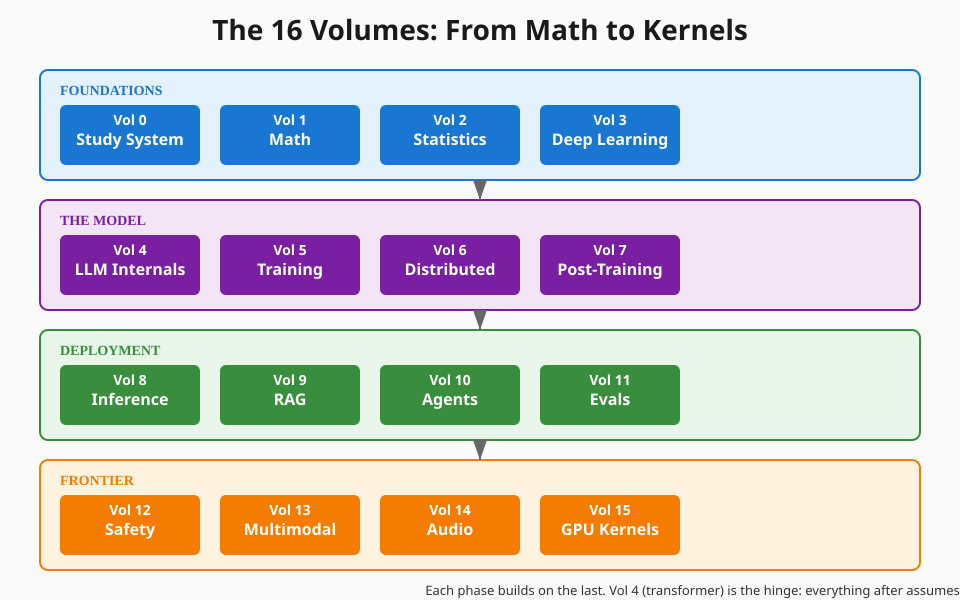
How to read this diagram
- Four phases: Each phase builds on the last. You cannot skip Foundations and understand The Model.
- Vol 4 is the hinge: The transformer architecture. Everything after assumes you can walk a token from text to logits.
- What breaks if you skip: Jumping to Vol 8 (inference) without Vol 4 means the KV cache formula is magic, not math.
Volume 0: How to Study
The study method carries the program. It is not decoration. Familiarity grows from hours of unfocused reading. Recall does not. The method below turns reading into knowledge you can use.
The rules
- The re-explanation rule. End each day by explaining the hardest idea out loud, from memory, in simple sentences. Reading is not learning. Explaining is.
- One volume at a time. Work in 50-minute blocks with 10-minute breaks. Do not read two volumes in parallel. A chapter builds a mental model. Leaving the volume breaks the model.
- Do the lab, even for easy chapters. The lab is where understanding forms. Easy chapters produce the most dangerous gaps. They are confident and untested.
- "Done" has four tests. Define every term in plain words. Work the example numbers yourself. Explain the diagram to someone else. Answer the design prompts out loud. If any test fails, re-read before advancing.
Respect the dependency order. Start with math in Vol 1. It feeds deep learning in Vol 3. That feeds LLM internals in Vol 4. They feed pretraining in Vol 5 and distributed training in Vol 6.
Those prepare you for post-training (Vol 7) and inference (Vol 8). Stay in order. You pay for skips with time.
Must-memorize numbers
| Number | Value (units) | What it means |
|---|---|---|
| Study block | 50 min work / 10 min rest | One unit of focused study. Recall drops in longer blocks. |
| Daily floor | 4+ hours | The pace the curriculum schedule assumes |
| "Done" tests | 4 | Use all four for every chapter. |
| Pitch length | ~250 words / 2 minutes | The narrative unit for research (Vol 14) |
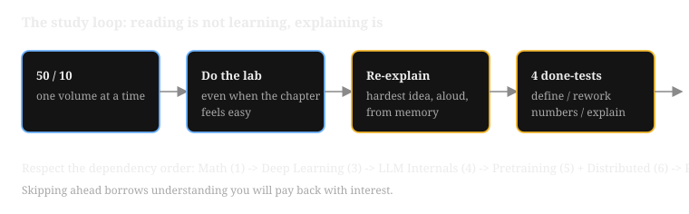
How to read this diagram
- \n
- Step 1: 50 minutes on, 10 off, one volume at a time. Study in blocks, not pages. \n
- Step 2: do the lab, even for easy chapters. Fluency is the trap. Production is the test. \n
- Step 3: re-explain the hardest idea aloud, from memory. If you cannot say it, you do not know it. \n
- Step 4: pass the four done tests, then advance in order. \n
Key takeaways
Key takeaways. The re-explanation rule is the best habit in this program. Labs are not optional. They turn reading into skill. The four "done" tests form a checklist. Run them for each chapter.
Trap 1: "I read it, so I know it." Recognition is not recall. If you cannot reproduce the argument with the book closed, you have entertainment, not knowledge. The re-explanation rule exists because this illusion is universal.
Trap 2: Skipping ahead to the exciting volume. Volume 7's RL math is Vol 1's probability plus Vol 3's optimization. Without the base, the steps look arbitrary. You cannot reuse what you cannot follow.
Rapid-fire Q&A
Rules live in words. Numbers live in a table. Now is the time to check recall. Work each question before you reveal its answer.
Q1. Why does the method forbid parallel-reading volumes?
A. To finish the curriculum faster B. Because each chapter builds one mental model, and switching fragments it C. Because the volumes contradict each other D. To make scheduling simpler
Answer: B. A chapter builds a single mental model. For example, "attention is differentiable retrieval". Reading in parallel mixes two unfinished models. That is interference. Terms from one volume land in the other. Study in order. One model hardens before the next builds on it.
Q2. A chapter felt easy and you skipped the lab. What is the specific risk?
A. You miss easy points B. You build a confident, untested gap: you believe you understand something you have never done C. The later chapters become unreadable D. Nothing; easy chapters need no labs
Answer: B. An easy chapter hides a danger: false confidence, not ignorance. The lab makes you produce the result. Reading does not. Most "I thought I knew this" moments trace to skipped labs on easy chapters.
Q3. State the four "done" tests and explain why each one catches a different failure.
A. Define, compute, explain, answer B. Read, highlight, summarize, quiz C. Watch, code, debug, ship D. Skim, note, review, repeat
Answer: A. Test 1 is define. It finds terms you cannot define. Test 2 is compute. It finds formulas you cannot calculate. Test 3 is explain. It finds diagrams you cannot explain. Test 4 is answer. It finds new situations you cannot handle. Each test fails on its own. That is why you need all four.
Q4. Why is the re-explanation rule phrased as "out loud, from memory, in simple sentences" rather than just "review your notes"?
A. Speaking is faster than writing B. Memory retrieval plus simplification is the actual learning mechanism; notes let you fake it C. It prepares you for presentations D. Simple sentences are easier to grade
Answer: B. Notes give recognition, not recall. Retrieval comes from explaining from memory. Simple sentences compress the idea. You cannot use jargon to hide gaps. If a sentence needs the book's exact wording, the understanding is not yours yet.
Q5. You want to jump to Volume 7 (post-training) because it is the most exciting. What breaks?
A. Nothing; volumes are independent B. The RL derivations assume probability (Vol 1), optimization (Vol 3), and the training loop (Vol 5); without them the math reads as magic C. Only the notation is unfamiliar D. You will finish faster
Answer: B. Volume 7's DPO derivation is Vol 1's Bradley-Terry plus Vol 3's optimization plus Vol 5's reference-policy concept. A skipped dependency hides a derivation step. The gaps grow. By chapter 3, you cannot verify a single step.
Connections
This method points forward. The four "done" tests return in later volumes. In Vol 2 they are the eval mindset (decide on validation). In Vol 11 they are the ablation discipline (change one thing). In Vol 8 they are the benchmark checklist (report the full setup).
Volume 1: Math for ML
Why this comes next. The study method is in place. Four math ideas form the vocabulary. Later volumes use all four. They make derivations readable.
Four pillars. Linear algebra: how data moves. Calculus: how training moves. Probability: how to reason about noise. Information theory: why the loss is what it is. These four ideas return in every later volume.
The rules
Each pillar below climbs in three steps. First the beginner picture, then one layer of working detail, then the full production view. Each step adds a single idea.
Pillar 1: linear algebra. Data moves through it.
Step 1. A vector is an arrow. It has direction and length. Two arrows pointing the same way are similar even if one is 100 times longer. Compare angles, not dot products. Normalize first. [100, 0]·[100, 0] = 10,000. [1, 0]·[1, 0] = 1. Both pairs point the same way.
Similarity is the angle. Magnitude is confidence or energy. Embeddings are vectors. They group similar things. Normalize before cosine comparison.
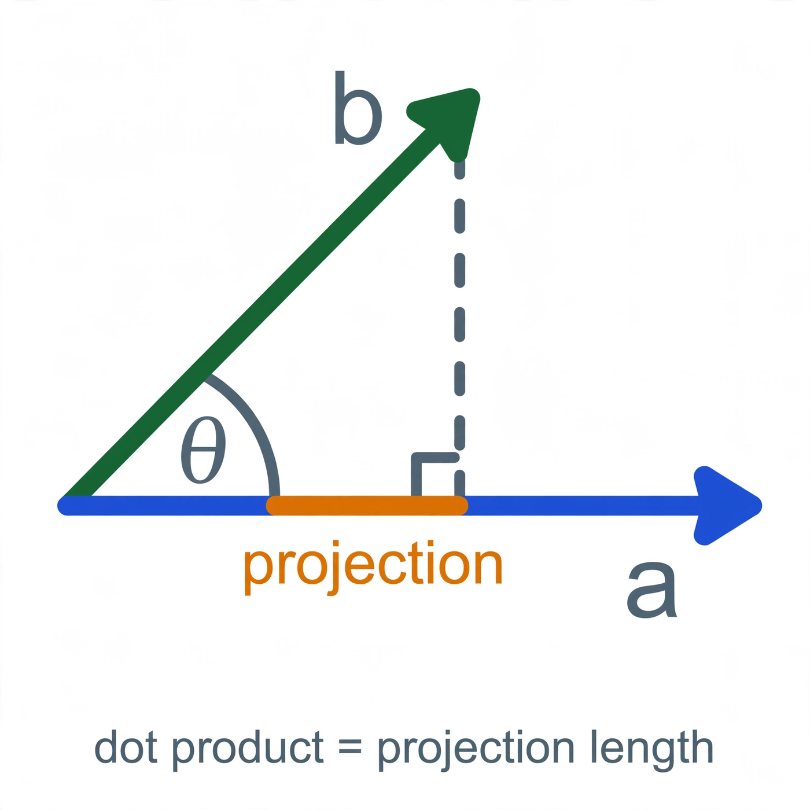
Step 2. Rank is capacity. A 1000x1000 matrix of all ones has rank 1: it squashes every input onto a single line. Check rank before you trust a big matrix.
input arrows --> [1000x1000, all ones] --> every output lands on one line rank 1: one million parameters, one real direction
Step 3. The full picture: rank made precise. SVD stands for singular value decomposition. It factors a matrix into a rotation, a scaling, and another rotation. The factors reveal the independent directions. The singular values count the directions with real signal. Vol 7 uses this idea for LoRA. LoRA updates the low-rank part. It captures most of the useful change. It uses a fraction of the parameters.
Pillar 2: probability. It reasons about noise.
Step 1. Raw measurements are not bell curves. Losses and latencies are raw data. The normal distribution describes averages. That is the central limit theorem. It does not describe raw data. Check the shape before setting thresholds.
Step 2. Correlated errors add super-linearly. Var(X + X) = 4·Var(X), not 2·Var(X). Duplicates inflate variance. Use the 1/n formula only for independent items. Deduplication reduces variance.
independent errors: Var(X + Y) = Var(X) + Var(Y) (adds up) correlated errors: Var(X + X) = 4 * Var(X) (blows up)
Step 3. Match the estimator to the loss. The sample mean is unbiased but not always best: the median wins on heavy-tailed data, and a slightly biased shrunken estimator often has lower total error on small samples.
Pillar 3: statistics. It updates beliefs.
Step 1. Bayes is the update rule.
where: P(A|B) is the posterior, the updated belief. P(B|A) is the likelihood. P(A) is the prior, the base rate. P(B) is the evidence, the normalizer.
Worked example. Confusing them is the prosecutor's fallacy. P(A|B) is not P(B|A). A positive test finds 99% of sick patients. The reverse is false: most positives are healthy. With a 0.1% base rate, 0.99×0.001 / (0.99×0.001 + 0.01×0.999) ≈ 0.090, about 9% (computed). The base rate decides. Write Bayes out every time.
1000 people, 1 sick (0.1%); test is 99% sensitive with 1% false positives sick and tests positive: 1 person (true alarm) healthy but tests positive: ~10 people (false alarms) P(sick | positive) = 1 / 11 = about 9%, not 99%
Step 2. Read p-values in the right direction. A p-value assumes the null hypothesis is true. It says nothing about P(null | data). "Not significant" means "not proven." It does not mean "no difference." Often the test lacks power.
Pillar 4: calculus and information theory. Calculus moves training. Information theory explains the loss.
Step 1. The gradient gives the steepest local direction. It is not a global map. It points to the steepest local uphill. The minimum is rarely in that direction. Steps bounce in narrow valleys.
Zero gradient means a saddle point, not a local minimum. A saddle is flat in some directions. It curves down in others. Valleys connect in large networks. Each minimum inside is near the others in loss. Fear saddles, not minima.
valley (local minimum): \___/ gradient descent settles here
saddle point: ---\___/--- flat one way, downhill the other:
it escapes sideways, the high-dim plague
Step 2. This is why first-order methods rule. The Hessian is the matrix of second derivatives. For n = 1e9 parameters it is 1e9 by 1e9. Nobody stores or inverts it. Nobody uses it at scale. Adam uses a diagonal approximation of curvature. The step size adapts for each parameter.
Step 3. The loss, in one line. Cross-entropy with one-hot targets is negative log-likelihood. One number, two names. Information theory calls it cross-entropy. Statistics calls it NLL.
KL(p‖q) = Σ p·log(p/q)
where: p is the true distribution. q is the model distribution. The KL term is the extra cost. It applies when you believe q and truth is p.
Worked example. A one-hot target collapses the sum to one term. That term is the negative log of q at the true token. The model assigns 0.5 to the true token. NLL ≈ 0.693 nats (computed).
KL divergence is directed. It is not symmetric. It has no triangle inequality. Flipping p and q is an error, not a convention. It scores the extra cost of trusting q over p. PPO uses it as a penalty. PPO is Proximal Policy Optimization, the reinforcement-learning algorithm of Volume 7.
Step 4. Preferences as probabilities. The model is Bradley-Terry. It turns pairwise preferences into scores. P(A beats B) = σ(r_A − r_B). Here σ is the sigmoid. It maps any score gap to a probability between 0 and 1. Only the gap matters, never the absolute scores. Volume 7 builds the reward model and DPO on this one equation.
Must-memorize numbers and formulas
| Number / formula | Value | What it means |
|---|---|---|
| Bayes | P(A|B) = P(B|A)·P(A) / P(B) | The update rule. The denominator is the base rate. |
| Var(X+X) | 4·Var(X) | Correlation breaks the 1/n rule. |
| Xavier init | 2 / (fan_in + fan_out) | Right scale for tanh and sigmoid. |
| He init | 2 / fan_in | Right scale for the ReLU family. The 2 compensates for the half that ReLU kills. |
| Reverse-mode autodiff | O(1) gradient evaluations for n parameters | Beats O(n) for finite differences. Deep learning exists because of this gap. |
| Chain rule | dz/dx = dz/dy · dy/dx | Backprop is this rule plus bookkeeping of stored intermediates. |
| Entropy | H = -Σ p·log p (bits) | Expected surprise. Coding and prediction give the same number. |
| Cross-entropy | -log q(true token) for one-hot targets | Identical to NLL. The loss for each pretraining position (Vol 5). |
| KL divergence | Σ p·log(p/q), directed | The extra cost of trusting q over p. PPO uses it as a penalty (Vol 7). |
| ln(32000) | 10.37 nats | The loss baseline for uniform guessing over a 32k vocabulary (Vol 5). |
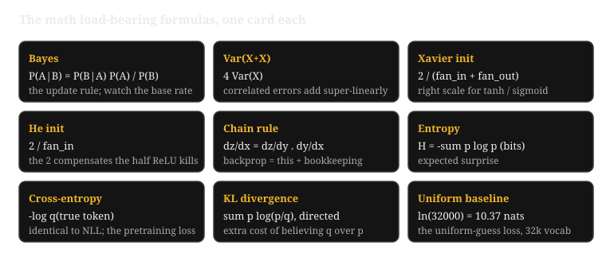
How to read this diagram
- \n
- Read each card top to bottom: name, formula, then the one-line note on when it bites. \n
- Compare Xavier with He (the factor of 2). Entropy, cross-entropy, and KL are three related costs. \n
- The uniform baseline is ln(32000) = 10.37 nats. This is the starting loss for healthy pretraining. \n
The math dependency map
How to read this diagram
- Left column: the four pillars. Each is a self-contained toolkit with its own worked examples in the volume.
- Arrows: who consumes whom. Deep learning builds on linear algebra and calculus. Probability feeds statistics, which feeds the experiment craft of Vol 2. Information theory feeds the pretraining loss of Vol 5.
- Reading rule. If a derivation stalls in a later volume, trace the arrow backward. The missing piece is almost always one pillar, not the whole volume.
Trap 1: "A vector is just a list of numbers." The list is the representation. The arrow is the meaning. Normalize an embedding and magnitude drops. Only direction carries information. Cosine similarity works for this reason.
Trap 2: "p = 0.03 means a 97% chance the effect is real." p = 0.03 does not mean a 97% chance. The p-value assumes the null hypothesis is true. It says nothing about P(null | data). That reverse probability needs a prior and Bayes.
Trap 3: "The gradient points at the minimum." It points at the steepest local uphill. The minimum is generally not in that direction. It gives local direction, not the global path. Steps bounce in narrow valleys.
Rapid-fire Q&A
Rules live in words. Numbers live in a table. Now is the time to check recall. Work each question before you reveal its answer.
Q1. Work the prosecutor's fallacy. A test has 99% sensitivity and a 1% false-positive rate. The disease prevalence is 0.1%. A patient tests positive. What is P(sick | positive)?
A. 99% B. About 50% C. About 9% D. About 0.1%
Answer: C. Write Bayes fully: P(sick|+) = P(+|sick)·P(sick) / [P(+|sick)·P(sick) + P(+|healthy)·P(healthy)] = 0.99 × 0.001 / (0.99 × 0.001 + 0.01 × 0.999) = 0.00099 / 0.01098 ≈ 0.0902, about 9% (computed). The 99% is P(+|sick), the wrong direction. The base rate (0.1%) dominates. False positives from the healthy population swamp the true positives. Rare conditions need a second, independent test.
# WHAT: Bayes on the medical-test numbers, computed not quoted.
# WHY: the prosecutor's fallacy is the costliest probability error; run the numbers once and the base rate never fools you again.
# BREAKS: if the two tests are not independent, you cannot multiply; correlated tests need the joint distribution.
p_sick, sens, fpr = 0.001, 0.99, 0.01
p_pos = sens * p_sick + fpr * (1 - p_sick)
print(round(sens * p_sick / p_pos, 4)) # 0.0902
Q2. Prove that cross-entropy with a one-hot target is negative log-likelihood.
A. They are different losses for different tasks B. Cross-entropy is always larger C. They are the identical number: -log q(true token) D. Only true for binary classification
Answer: C. Cross-entropy H(p, q) = -Σ p(x)·log q(x). With a one-hot target, p is 1 at the true token and 0 elsewhere. The sum collapses to a single term, the negative log of q at the true token. Negative log-likelihood of the correct class is the same number.
Information theory calls it cross-entropy. Statistics calls it NLL. Vol 5 uses this loss per position. It predicts the correct next token. Either name fits.
Q3. A 1000x1000 weight matrix has one million parameters. Why might its effective capacity be far smaller?
A. Because half the parameters are biases B. Because capacity is bounded by rank, and a low-rank matrix reuses few directions C. Because large matrices are always sparse D. Because floating point limits precision
Answer: B. The extreme case: a 1000x1000 matrix of all ones has rank 1. It maps everything onto one line. Rank is the number of independent directions that survive the transformation. SVD makes this precise (see Pillar 1, Step 3). The singular values count the directions with real signal. Vol 7 uses this idea for LoRA. LoRA updates the low-rank part. It captures most of the useful change. It uses a fraction of the parameters.
Q4. Derive the complexity gap. It separates reverse mode from finite differences.
A. It is more accurate B. Finite differences cost O(n) forward evaluations for n parameters; reverse mode costs O(1) C. It uses less memory D. It avoids the chain rule
Answer: B. Each parameter costs two evaluations with finite differences. The cost is O(n) evaluations. At n = 1e9, that is hopeless. Reverse mode runs the chain rule backward. It reuses stored intermediates. One forward pass and one backward pass give all n gradients: O(1) evaluations. It is exact to floating point, not an approximation. The complexity gap explains it, not accuracy.
Q5. Near-duplicates fill your eval set. Why is the 1/n formula too optimistic here?
A. Duplicates make the mean biased B. Correlated errors add super-linearly: Var(X+X) = 4·Var(X), so effective n is smaller than counted n C. Duplicates always help D. The formula only works for large n
Answer: B. Independent errors: the 1/n formula holds. Near-duplicates are correlated: when one is wrong, its twin is likely wrong too. With correlation, the variance quadruples. The 2·Var(X) rule no longer holds. Your "n = 10,000" eval acts like a smaller independent sample.
Fix it two ways. Deduplicate the eval set. Or model the correlation. This is variance arithmetic, not a modeling choice.
Q6. Why is "Adam has no hyperparameters" false, and which one still matters most?
A. It has four (learning rate, betas, epsilon) plus AdamW's weight decay; the global learning rate still decides divergence B. It has none; the statement is true C. Only epsilon matters D. Betas are fixed by theory
Answer: A. Adam adapts the per-coordinate scale. It does not choose the global step size. Set the learning rate too high and it diverges. The betas set the momentum and variance horizons. Epsilon guards division. In AdamW, weight decay is decoupled. It interacts with the learning rate (Vol 3). Defaults only start the search. The schedule (warmup + decay) is part of the optimizer in practice, not decoration.
Connections
- Vol 2 uses estimators, CIs, and p-values. That question is applied statistics.
- Vol 3 takes the chain rule and Adam. It also takes Xavier and He init.
- Vol 5 takes cross-entropy as the pretraining loss. It takes ln(32000) = 10.37 as the starting loss.
- Vol 7 takes KL divergence for PPO and Bradley-Terry for preferences.
- Vol 11 takes the statistics toolkit. That means pairing, power, and "significant."
Volume 2: ML Research Foundations (Experiment Craft)
Why this comes next. Volume 1 lets you compute; it does not tell you what a number proves. This volume answers the question every result leaves open: is the win real. Baselines, splits, metrics, leakage: the craft of experiments you can believe.
The smallest unit of a research result is a controlled comparison, not a number. This volume is the craft of running experiments you can believe: baselines, splits, metrics, leakage, and deciding whether a win is real.
The rules
- "My idea works" is not a result. A result is "the intervention beats the baseline by X ± Y, and I know which part of the intervention caused it." Change one variable at a time.
- Tune the baseline as hard as the idea. An untuned baseline makes any idea look good. The comparison is theater otherwise.
- Ablate by removing from the full system, not adding to a weak baseline. Adding components one at a time to a weak baseline inflates every component's apparent value. The ablation ladder asks "does this component earn its place" by taking it away.
- Lock the test set away first; decide on validation; spend the test budget once. Every decision made on test data spends some of its unbiasedness. Early stopping on test is tuning on test.
- Report the interval on the difference, not just the delta. If the 95% CI on the difference covers zero, the win is not proven: ship nothing on it. "Not significant" means "cannot tell," not "no difference."
- Always pair. Same examples, both models, paired test. Pairing cancels the noise you can cancel; it is free statistical power.
- A surprising 99% is a leak until proven otherwise. Leakage is test-target information reaching the model early. Know the four species: target leakage, split contamination, temporal leakage, preprocessing leakage. Run the three detectors: single-feature scan, duplicate audit, hygiene checklist.
- Match the split to the deployment question. Temporal splits for time-ordered data, group splits for grouped data. k-fold CV buys a visible variance at k times the compute; refit on all data afterward. CV does not fix leakage: if the split leaks, all k folds leak identically and the mean looks confidently wrong.
- Perplexity is exponentiated cross-entropy: average surprise per token. It is the pretraining compass, not the final grade: downstream abilities can diverge from it. Calibration (ECE, Expected Calibration Error: the gap between the model's stated confidence and its actual accuracy) never changes predictions; fix overconfidence with temperature scaling.
- Pick the metric that matches the cost of errors. Accuracy lies under class imbalance or unequal error costs; F1, the harmonic mean of precision (of the items flagged positive, how many truly are) and recall (of the true positives, how many the model catches), weights the two equally and your product almost certainly does not. Say the cost model out loud.
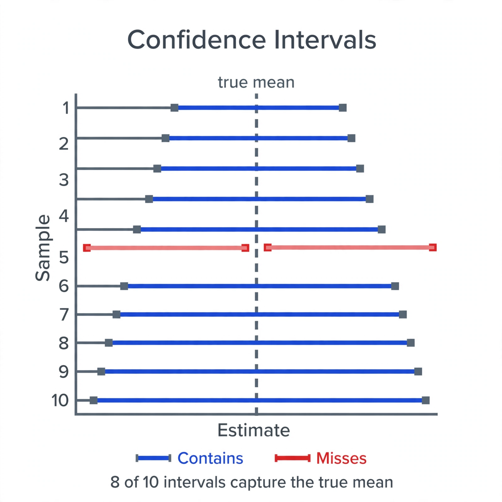
Must-memorize numbers and formulas
| Number / formula | Value | What it means |
|---|---|---|
| Perplexity | e^(loss in nats) | Average surprise per token; loss 2.0 (computed) -> ppl 7.39 |
| 95% CI rule | If it covers zero, the win is not proven | The ship/no-ship line for a delta |
| Paired units | Examples (or seeds), not models | A t-test on two accuracy numbers (n = 2) is meaningless |
| Leakage species | 4: target, split, temporal, preprocessing | The taxonomy; memorize it, then hunt |
| Leak detectors | 3: single-feature scan, duplicate audit, hygiene checklist | Build all three into every pipeline |
| ECE fix | Temperature scaling | Rescales confidence, never changes the predicted class |
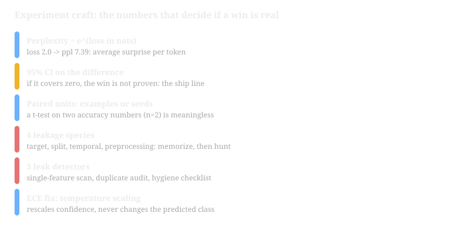
How to read this diagram
- \n
- Perplexity converts loss into average surprise per token: loss 2.0 means 7.39. \n
- The 95% CI on the difference is the ship line: if it covers zero, the win is not proven. \n
- Leakage comes in four species and is caught by three detectors; build all three into every pipeline. \n
Trap 1: "My test set is separate, so I am safe." Separation of rows is not enough. If the scaler was fit on all the data, if duplicates straddle the boundary, if a feature was computed with future knowledge, the rows are separate and the information is not.
Trap 2: "More training data is always better." Not if the extra data eats your evaluation. A benchmark inside the training set does not make the model smarter; it makes your measurement dumber. (Vol 5's contamination chapter is this trap at LLM scale.)
Trap 3: "Lower perplexity means a better model at everything." Perplexity measures next-token prediction on one corpus. Reasoning, instruction following, and truthfulness can diverge from it. It tells you training is working, not that the model is capable.
Rapid-fire Q&A
Rules in words, numbers in a table. Now check recall: work each question before revealing its answer.
Q1. You changed three things at once and the metric improved. Why do you have a demo, not an experiment?
A. Because the improvement might be noise B. Because with three simultaneous changes you cannot attribute credit; no ablation ladder was run C. Because three changes are always worse than one D. Because the baseline was not tuned
Answer: B. A result requires attribution: which part of the intervention caused the gain. With three confounded changes, the delta could come from any one of them, or from their interaction. The fix is the ablation ladder: remove components from the full system one at a time (removal, not addition, so each component's value is measured against the real system). Until then you have a demo of "something in here helps," which is not a claim you can build on.
Q2. Your 5-fold CV gives 99.2% ± 0.1%. Why might this confident number still be wrong?
A. k is too small B. Cross-validation does not fix leakage; if the split leaks, every fold leaks identically C. The variance estimate is wrong D. CV always overestimates
Answer: B. CV averages over folds, which reduces variance from the data split. But leakage is a bias in the split itself: preprocessing fit on all data, duplicates straddling fold boundaries, or temporal leakage all contaminate every fold the same way. Averaging a biased procedure k times gives a confidently wrong mean with a tight, lying interval. Fix the split first (the three detectors), then average.
Q3. Derive perplexity from cross-entropy loss and compute it for loss = 2.0 nats.
A. ppl = loss^2 = 4.0 B. ppl = e^loss ≈ 7.39 C. ppl = 1/loss = 0.5 D. ppl = 2^loss = 4.0
Answer: B. Perplexity is exponentiated cross-entropy: ppl = e^(average NLL in nats). Intuition: it is the effective vocabulary size the model is choosing among per token. A loss of 2.0 nats gives e^2 ≈ 7.39 (computed): the model is as surprised, on average, as if choosing uniformly among ~7.4 tokens.
# WHAT: perplexity from a loss value; the pretraining compass in one line.
# WHY: loss 2.0 means nothing until you convert it; 7.4-way uncertainty does.
# BREAKS: the loss must be in nats (natural log); with bits, use 2^loss instead.
import math
print(round(math.exp(2.0), 2)) # 7.39
Q4. Two models score 91.0% and 92.2% accuracy, one number each. Can you run a t-test? What are the correct units of a paired comparison?
A. Yes, n = 2 is enough B. No; the units are the examples (or the seeds), not the models: compare per-example outcomes with a paired test C. No; accuracy cannot be tested D. Yes, with a z-test
Answer: B. A t-test on two numbers has no variance estimate. n = 2 is meaningless. The correct units are the examples. For each test example, record whether each model got it right. Then test the paired differences. McNemar's test is for paired outcomes that are yes or no. A paired t-test is for paired outcomes that are numeric. Pairing cancels the difficulty of examples. That difficulty is the dominant noise source. The same logic holds for seeds. Compare run by run on identical seeds.
Q5. Your model hits 99% on a held-out set and the team celebrates. Walk the leakage checklist before believing it.
A. Celebrate. Held-out is held-out. B. Run the three detectors. Single-feature scan: does one feature alone predict the target? Duplicate audit: are train rows duplicated in test? Hygiene checklist: was the scaler fit on all data? Are there future features? Is group straddling present? C. Collect more data D. Tune hyperparameters
Answer: B. Treat a surprising 99% as a leak. Prove otherwise. Run a single-feature scan. It catches target leakage. It finds a feature that is secretly the label. Run a duplicate audit. It catches split contamination. It finds memorization masquerading as generalization. Run a hygiene checklist. It catches preprocessing leakage and temporal leakage. Preprocessing leakage is statistics fit on all data. Temporal leakage is future knowledge in features. Separation of rows is not enough. Separation of information is the requirement.
Q6. The product cares 10x more about false negatives than false positives. Why is F1 optimization the wrong move?
A. F1 is hard to compute B. F1 weights precision and recall equally. The business objective does not. The metric must encode the 10:1 cost ratio. C. Accuracy is always better D. F1 ignores the threshold
Answer: B. F1 = 2PR/(P+R). It treats a precision point and a recall point as interchangeable. Your product does not. A missed detection costs as much as ten false alarms. F1 optimization finds the optimum of the wrong objective. Then the team tunes the threshold afterward to fix what the metric got wrong. Name the cost model first. Pick or reweight the metric to match it. Say the tradeoff out loud.
Connections
- Vol 1 supplies the statistics. They are CIs, pairing, and p-values. They are the variance arithmetic behind "is the win real."
- Vol 5 covers leakage at LLM scale. There it is called benchmark contamination. Decontamination is a standing pipeline stage.
- Vol 8 uses the honest-benchmark checklist. It has a fixed sampler, warmup, and full setup reported.
- Vol 11 generalizes the craft. It covers ablations. It covers confounder hunts and preregistration.
Volume 3: Deep Learning for Researchers
Why this comes next. Volume 2 decides whether a result is real. Now you need the machine the results come from. It is the neuron-to-training-loop sequence that turns math into a trained model. Without it, the transformer in Volume 4 is a diagram, not a machine.
Seven ideas form the base. They are the neuron, the layer, the forward pass, the loss, backprop, activations, and the fixes for vanishing gradients. Normalization, initialization, and optimizers come next. Then mixed precision and checkpointing. Get one wrong and the run dies. The failure looks like all the others.
The seven ideas
Seven ideas, in the order you must learn them. Every rule below assumes them.
- A neuron is a weighted sum plus a nonlinearity. y = f(w·x + b). The weights w and bias b are the learned numbers. Apply f afterward. That is the whole idea.
- A layer is many neurons in parallel. Multiply by a matrix W. Add a bias vector. Then apply the nonlinearity to every output. Stack layers. Each layer feeds its output to the next layer.
- The forward pass is prediction. Data flows one way, layer by layer. The network outputs scores. They are per class or a next-token distribution. No learning happens yet. This is just the guess.
- The loss measures wrongness. One number: how far the prediction is from the truth. Cross-entropy is the standard loss for classification and language modeling. It penalizes the model for assigning low probability to the correct answer. Training makes this number smaller.
- Backprop assigns blame. Apply the chain rule layer by layer in reverse. Each parameter learns its exact contribution to the loss. Multiply the local slopes and every weight gets its share of the error. The optimizer then nudges each weight against its slope.
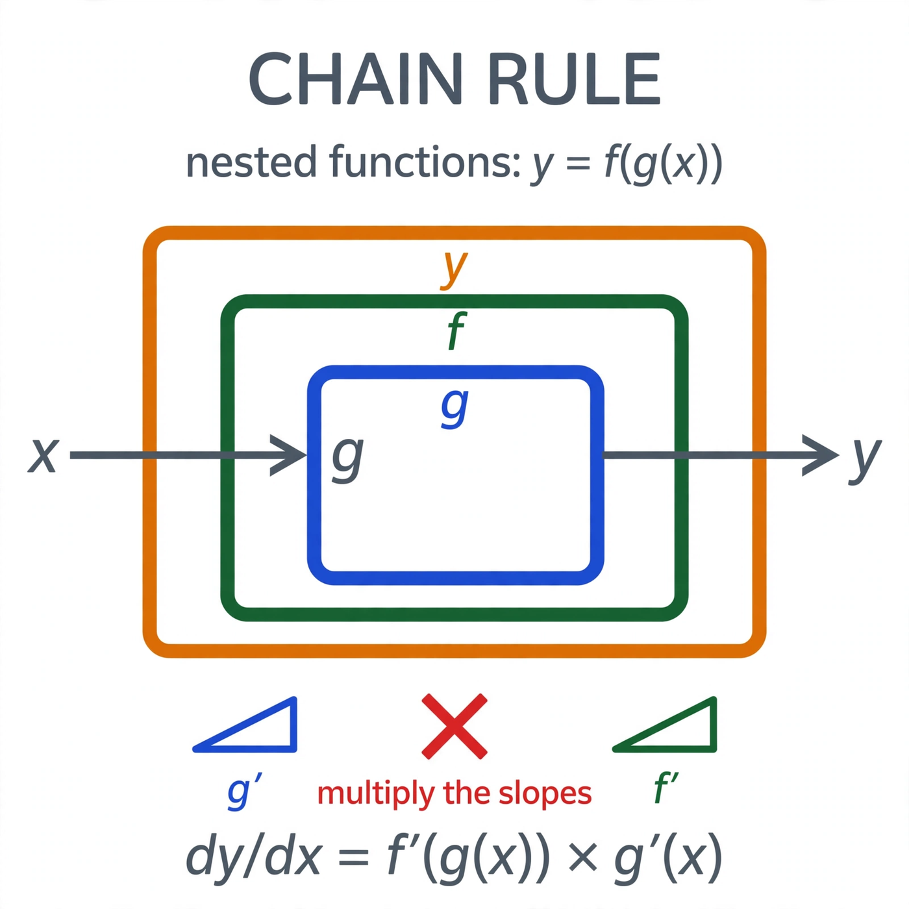
- Activations decide what each layer can say. ReLU passes positives and kills negatives. GELU and SiLU are smooth versions. They train better in transformers. SwiGLU is the modern MLP choice. It is a gate. It multiplies two projections. One is linear. Swish activates the other. The layer learns which features pass.
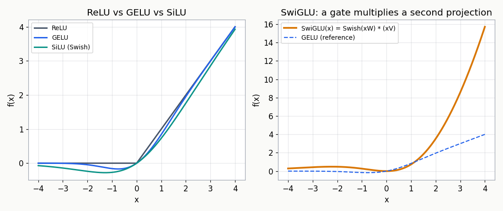
- Deep stacks break the gradient, and residuals fix it. Small slopes multiply and gradients vanish geometrically. Large slopes explode. The residual connection is x + F(x). It gives the gradient a clean bypass around each block. Deep networks need the bypass to train.
The rules
Match normalization to the regime. Earlier layers update during training. Their outputs shift. Later layers receive them. Normalization stabilizes activations. The inputs stay stable.
Normalization Statistic When it fits BatchNorm batch statistics Noisy with small batches. Undefined for single-example inference. LayerNorm per-example The transformer standard. It is batch-free and works on variable-length sequences. RMSNorm scale-only Cheaper. The modern default with LayerNorm. - Prefer pre-norm for deep transformers. Pre-norm keeps the residual stream clean so gradients bypass the norms on the residual path. It is more stable, not universally higher quality. At LLM scale, a finished run beats a slightly better unfinished one.
- Initialize at exactly the right scale: Xavier for symmetric activations, He for ReLU. Variance compounds multiplicatively through depth. Too big explodes. Too small vanishes geometrically. Diagnose before training. Forward a batch. Check the variance in each layer. Check the dead-ReLU fraction. Far from ~50% at init means the scale is wrong.
- AdamW is not Adam with weight_decay set. Adam couples decay to the gradient in PyTorch. AdamW decouples it. The argument name is weight_decay in both. The math differs.
- Mixed precision. Mixed precision uses 16-bit compute. Master weights stay in FP32. Sensitive ops stay in FP32. The binding constraint in training is range, not precision. BF16 has FP32's range. It usually needs no loss scaling. FP16 (max 65,504) collapses without it. Scale the loss. Gradients move into the representable window. Unscale afterward. The two cancel exactly. It changes nothing the model learns.
- Checkpointing saves activations only. Parameters, gradients, and optimizer state stay. It buys ~5-6x less activation memory for ~1.33x compute (recompute the forgotten layers). Below the memory wall it just wastes 33% of your time. It is a capacity tool, not a default.
- A fixed context window is an information cutoff first, a speed limit second. Beyond the window, accuracy is chance by construction, at any speed. Volume 4 removes the window with attention. Everything here becomes the training recipe.
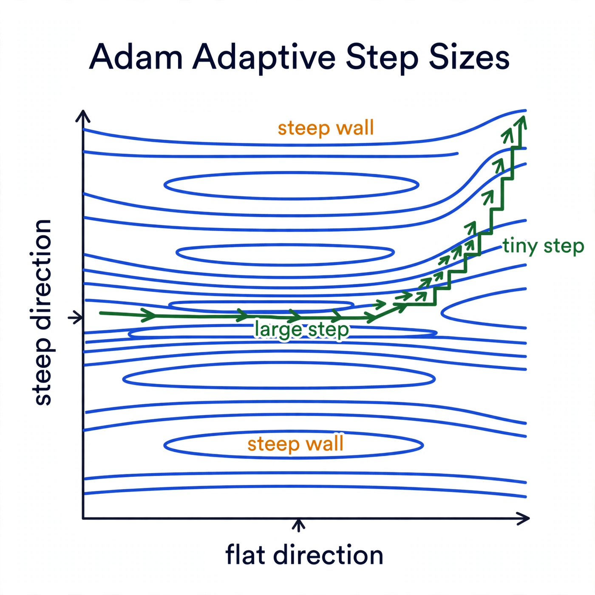
Must-memorize numbers and formulas
| Number / formula | Value | What it means |
|---|---|---|
| FP16 | 1 sign / 5 exp / 10 mantissa, max 65,504 | Narrow range. Needs loss scaling in training. |
| BF16 | 1 / 8 / 7, FP32-sized range | Range of FP32, precision of FP16. The training default. |
| Xavier | Var = 2 / (fan_in + fan_out) | Keeps variance stable through tanh/sigmoid layers |
| He | Var = 2 / fan_in | The factor of 2 compensates the half ReLU zeroes |
| Dead ReLU at init | ~50% | Far from 50% means wrong scale, not bad luck |
| AdamW vs Adam | Decoupled decay, not coupled. | Different math behind one argument name |
| Checkpointing | ~1.33x compute, ~5-6x activation memory cut | Save some layers. Recompute the rest. Activations only. |
| LR schedule | Warmup, then cosine decay | Warmup protects the start. Decay finishes it (Vol 5). |
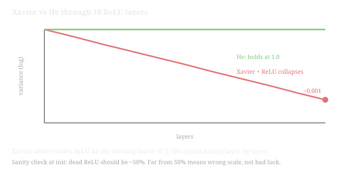
How to read this diagram
- \n
- The red curve is Xavier scaling for ReLU. Each layer keeps only half the variance, so after 10 layers it sits near 0.001. \n
- The green line is He. The factor of 2 compensates the half ReLU kills, and variance holds at 1.0. \n
- The init sanity check. Dead ReLU should be about 50%. Far from 50% means the scale is wrong. \n
Trap 1: "Xavier works fine for ReLU." It under-scales by the missing factor of 2, and the signal decays layer by layer. Xavier variance collapses to ~0.001 after 10 layers. He holds at 1.0.
Trap 2: optimizer memory. The trap is the belief that checkpointing reduces it. It does not touch the optimizer. If the job dies from Adam's state, you need sharding (Vol 6) or offloading, not checkpointing. Match the tool to the pile. Activations are what checkpointing controls.
Trap 3: "Loss scaling changes what the model learns." Scale and unscale cancel in exact arithmetic. It only moves values into the window FP16 can represent. If scaled gradients underflow, the scale was too small, not the idea.
Rapid-fire Q&A
Rules in words, numbers in a table. Now check recall. Work each question before you see its answer.
Q1. Derive the factor of 2 in He initialization.
A. It is a fudge factor found by grid search B. Half the activations die at ReLU. The 2 compensates. Variance stays constant through depth C. It accounts for the bias term D. It doubles the learning rate effectively
Answer: B. Start with symmetric pre-activations. They have variance v. ReLU zeroes the negative half. Variance becomes v/2 (roughly). Give the weights variance 2/fan_in, not 1/fan_in. The input variance stays at v. The simulation confirms the arithmetic. 10 layers of ReLU with Xavier scaling (1/fan) decay to 0.001. With He (2/fan) they hold at 1.0 (computed). Change the activation to tanh and the factor of 2 becomes wrong. The constant belongs to ReLU, not to all activations.
# WHAT: variance of a unit signal through 10 Linear+ReLU layers, He vs Xavier scaling.
# WHY: proves the factor of 2 is load-bearing, not decorative.
# BREAKS: for tanh/sigmoid the 0.5 ReLU factor is wrong; use Xavier (Vol 1: match the tool to the regime).
import random
def propagate(scale, fan=256, layers=10):
var = 1.0
for _ in range(layers):
var = var * fan * scale(fan) * 0.5 # 0.5: ReLU kills half
return var
random.seed(0)
print(round(propagate(lambda f: 2.0/f), 3)) # 1.0 (He)
print(round(propagate(lambda f: 1.0/f), 4)) # 0.001 (Xavier on ReLU)
Q2. Why does BF16 usually need no loss scaling while FP16 collapses without it?
A. BF16 has more mantissa bits B. The binding constraint in training is range. BF16 keeps the 8-bit exponent. It has FP32-sized range. FP16 has a 5-bit exponent. It tops out at 65,504. Small gradients underflow to zero C. BF16 is slower and more careful D. Loss scaling is only for inference
Answer: B. Gradients span a wide range. FP16's 5 exponent bits give a max of 65,504 and a tiny normal range. Small gradients flush to zero (underflow) and the model stops learning in the small-gradient directions. BF16 has 8 exponent bits. FP32 has 8 too. The range matches FP32. Precision is coarser, but coarseness is harmless here. It shifts gradients up before the backward pass. It shifts them back after. The two shifts cancel exactly.
Q3. Your 24-layer transformer diverges at step 200 with NaNs. Checkpointing will not fix it. Why?
A. Checkpointing is too slow B. Checkpointing saves activations only. NaN divergence at step 200 is an optimizer, schedule, or precision problem. Checkpointing touches none of those piles C. 24 layers is too shallow for checkpointing D. Checkpointing only works for CNNs
Answer: B. Checkpointing trades compute for activation memory. It changes nothing about gradient magnitudes, the learning rate, or numerical range. Early NaNs point at three causes. No warmup. Loss-scale overflow in FP16. A bad batch through an unstable op. Match the tool to the pile. Checkpointing is a capacity tool for the activation pile. Roll back. Skip the bad batches. Check the schedule and the scaler.
Q4. Show the AdamW decay step. Contrast it with Adam.
A. They are identical B. Adam adds decay to the gradient before adaptive scaling. Large gradients weaken the decay. AdamW applies decay to the weights after the adaptive step. The decay is uniform C. AdamW uses a larger decay D. Adam has no decay
Answer: B. Adam with weight decay is L2 regularization. The decay term joins the gradient. It gets divided by the adaptive per-parameter scale. The decay weakens for large gradients. The strength varies by param. This was not the plan. AdamW decouples. Every param decays at rate lambda regardless of gradient scale. Same argument name in PyTorch. Different math. Generalization differs measurably.
Q5. Why did transformers standardize on LayerNorm/RMSNorm instead of BatchNorm?
A. BatchNorm is slower B. BatchNorm's batch statistics are noisy with small batches. They do not exist for single-example inference. Batch statistics break with variable lengths. LayerNorm is per-example. RMSNorm is scale-only. Both won C. BatchNorm does not run on GPUs D. LayerNorm has more parameters
Answer: B. BatchNorm normalizes across the batch. It needs a real batch at inference. It needs stable statistics in training. Language batches have variable lengths. Inference often runs one sequence at a time. LayerNorm is per-example. It is batch-free by construction. RMSNorm drops mean-centering. It is scale-only. It is cheaper and equally stabilizing. Match the method to the regime.
Q6. Derive the ~1.33x compute cost of checkpointing.
A. It is a measured constant B. Recompute needs one extra forward pass. With checkpoints every layer you pay ~2x. The standard schedule redoes about one third of the forward work. Total is ~1.33x. Memory drops ~5-6x on activations C. Backward is 33% of forward D. It comes from the optimizer
Answer: B. Without checkpointing, do 1 forward and 1 backward per step. The backward pass recomputes. It restores dropped activations. Each segment runs forward once during backward. Checkpoint every layer. You pay ~2x forward. Practical schedules add one third of a forward pass. Total compute is ~1.33x. The memory win (~5-6x on activations) is what you buy. Below the memory wall the trade is pure loss. You run 33% slower for nothing.
Connections
- Vol 1 supplies three things. The chain rule (backprop). The variance arithmetic. It covers Xavier and He. Adam's derivation.
- Vol 4 uses the default block. It has pre-norm, RMSNorm, and SwiGLU. This volume is why those defaults exist.
- Vol 5 takes the warmup + cosine schedule and the mixed-precision setup of the training loop.
- Vol 6 takes checkpointing as one memory tool. Others: sharding and offload. It takes the diagnosis "which pile is full."
Volume 4: LLM Internals
Why this comes next. Volume 3 built generic deep learning. The field runs on one architecture, and this volume answers what happens inside it, token by token, with shapes. Everything after assumes you can walk a token from text to logits.
The transformer, mechanically: tokenization, embeddings, attention, the block, positions, the MHA/MQA/GQA tradeoff, and the KV cache. Everything from here on assumes you can walk a token from text to logits (the raw, unnormalized scores per vocabulary item, before any softmax) with shapes.
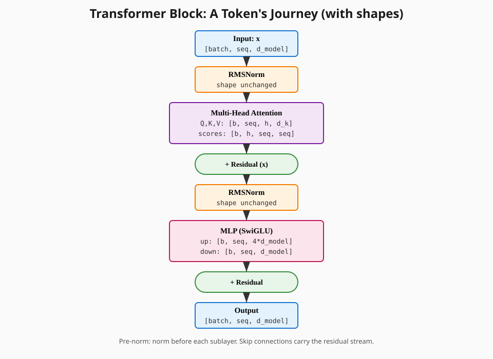
How to read this diagram
- 1. Input x: The residual stream. Shape [batch, seq, d_model]. Every sublayer reads from it and writes deltas to it.
- 2. RMSNorm: Normalizes. Shape unchanged. Pre-norm means it sits before the sublayer, not after.
- 3. Attention: Q,K,V projected per head. Scores are [batch, heads, seq, seq]. This is O(n²) memory.
- 4. Residual add: The + circle. Adds the sublayer output back to x. Why: gradients flow undisturbed through the skip.
- 5. MLP: Two matmuls with SwiGLU. Expands to 4x then contracts. Holds ~2/3 of parameters.
- What breaks: Remove the residuals and gradients vanish in deep stacks. Remove pre-norm and training destabilizes.
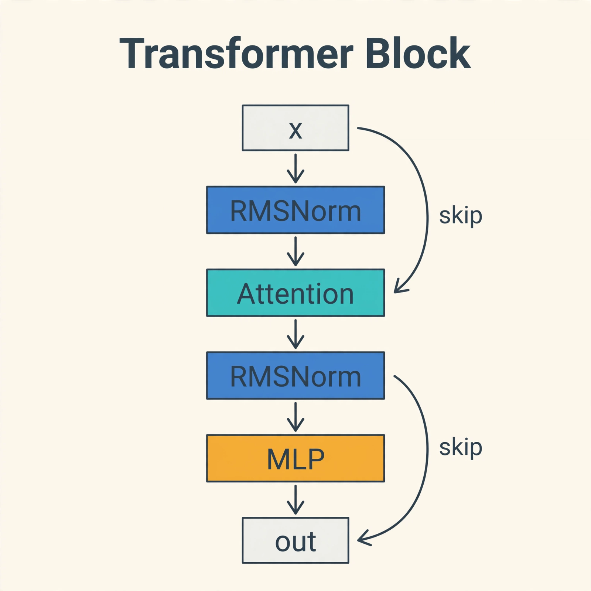
The rules
- The model never sees text. It sees integer IDs from a learned BPE vocabulary. BPE means byte-pair encoding. Starting from single characters, BPE repeatedly merges the most frequent adjacent pair. It stops at the target vocabulary size. Tokenization is a compression tradeoff: frequent strings earn short representations (one token), rare strings pay with many tokens.
- Fertility converts token budgets into words and dollars. A 4,096-token window holds roughly 3,000 English words but far fewer words of a high-fertility language. When a provider says "128k context," ask: 128k tokens of what?
- Attention is differentiable retrieval. Query = "what am I looking for," Key = "what I offer" (dot-product match), Value = the content mixed by match strength, softmax = soft ranking: softmax turns the raw scores into positive weights that sum to 1, so each output is a weighted mix. Learn this framing; it answers half of all attention questions.
- Write the five steps from memory: project to Q/K/V; score QK^T/√d_k; causal-mask; softmax; mix values. The √d_k keeps the softmax out of saturation so gradients flow. The causal mask is what makes training match generation: no peeking at the future.
- Cost is O(n²d) time and O(n²) memory. One head's score matrix at 4k context in fp32 is 67 MB (computed). That matrix is why long context is a memory problem before it is a compute problem.
- Think residual stream, not pipeline. x is a shared workspace; every sublayer reads from it and writes deltas to it. The MLP holds most parameters (~3x attention's); attention holds most of the long-context compute. You can sometimes delete middle layers with only mild damage: that is the stream picture, confirmed.
RoPE rotates Q and K; it adds nothing to the embeddings. Scores then depend only on relative distance (n − m).
θi = 10000−2i/dwhere: θi is the rotation angle for dimension pair i; d is the head dimension; i runs from 0 (fastest rotation) to d/2 − 1 (slowest).
Worked example. Head dimension d = 128: pair 0 gets θ = 100000 = 1 radian per position (fast); the last pair gets θ = 10000−126/128 ≈ 1.2×10−4 radians (slow). Fast pairs encode nearby positions; slow pairs reach far.
Apply to Q and K only, never V. RoPE breaks past its training length (angles go out of distribution): extensions (interpolation, NTK-aware, YaRN) make long positions look familiar again.
- GQA-8 is the industry sweet spot. Query heads never shrink. The design shares only K/V. KV cache per token = 2 × layers × KV-heads × head-dim × bytes. Fewer KV heads means less memory bandwidth per decode step, and decoding is bandwidth-bound: smaller cache = faster tokens, not just smaller memory.
- Prefill is compute-bound; decode is memory-bandwidth bound. Prefill processes the prompt in one parallel pass (this is time to first token). Decode appends one token's K/V per step and re-reads everything. Q is never cached: past queries are never needed again.
- Eviction is lossy. Attention sinks (the first tokens) must always be kept. Sliding window is blind to content; StreamingLLM adds sinks; H2O keeps heavy hitters by accumulated attention and holds quality at 20% budget. For exact long-range recall, eviction is the wrong tool: buy memory or retrieve differently (Vol 9).
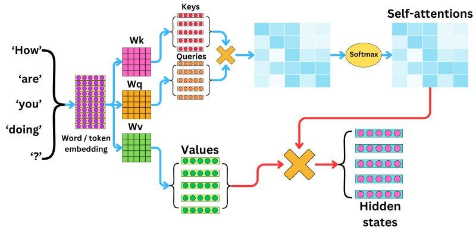
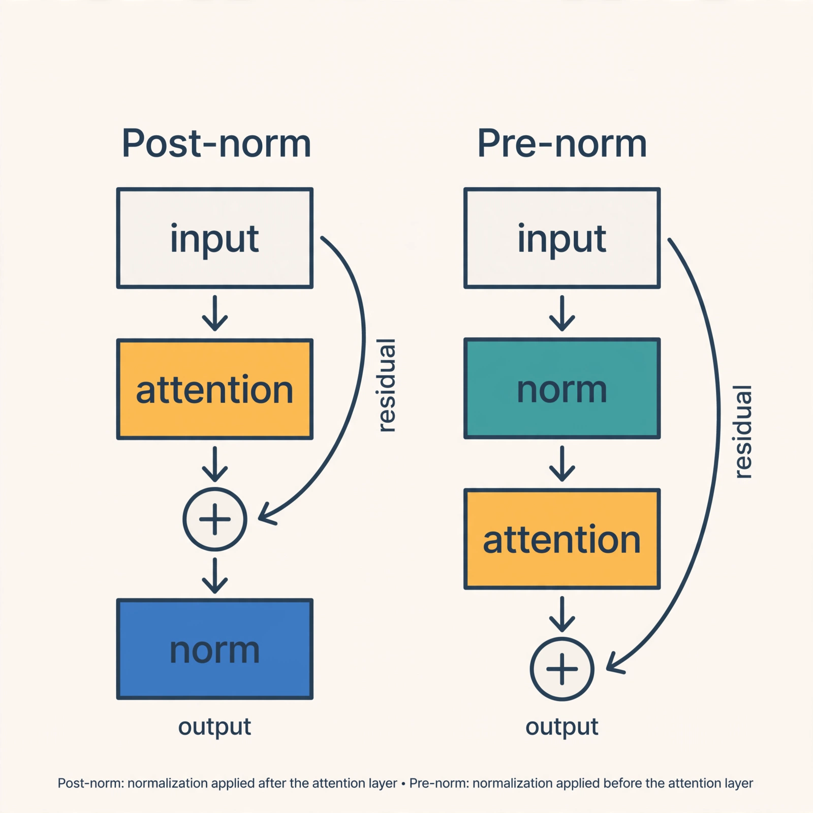
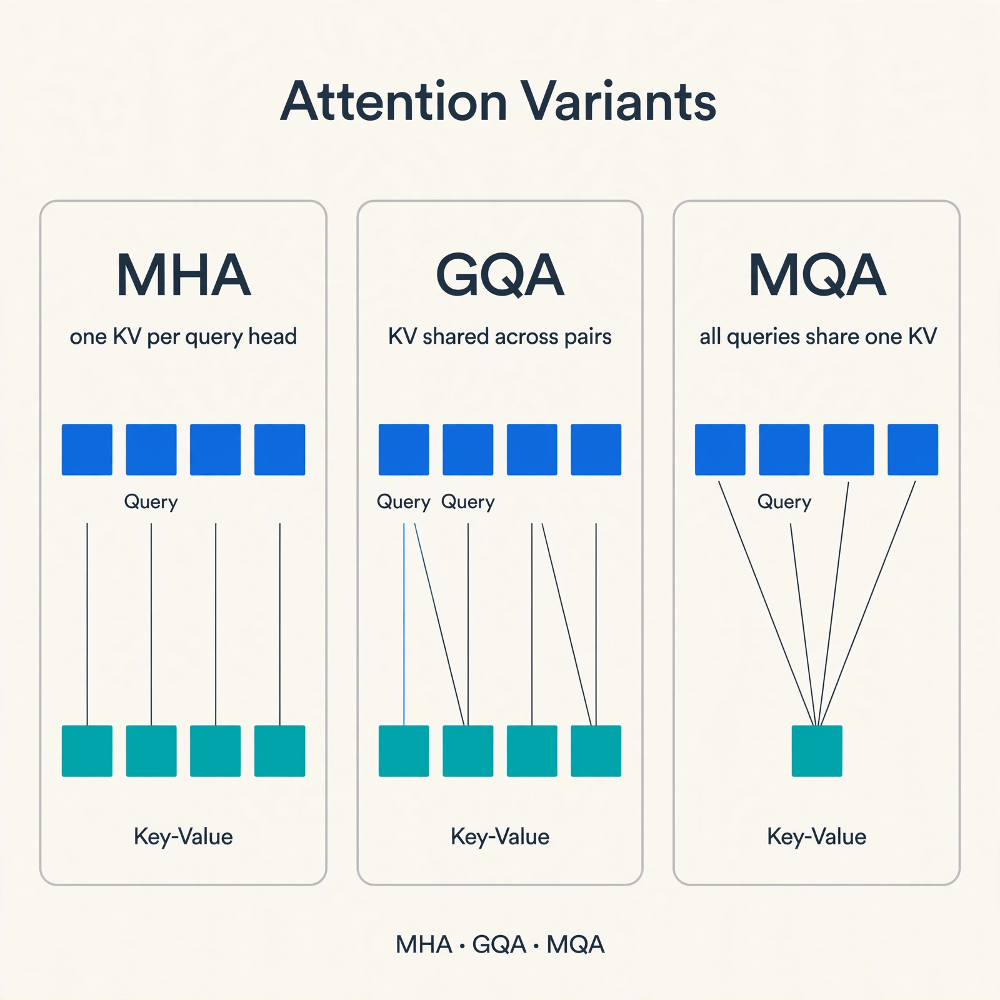
Must-memorize numbers and formulas
| Number / formula | Value | What it means |
|---|---|---|
| Attention steps | QKV → QK^T/√d_k → mask → softmax → mix | The five steps; whiteboardable from memory |
| Score matrix @4k | 67 MB per head, fp32 (computed) | 4096² × 4 bytes: the quadratic bill made concrete |
| KV cache / token | 2 × layers × KV-heads × head-dim × bytes | The serving memory formula; memorize it |
| LLaMA-2 7B cache | 0.52 MB/token (computed); 2.1 GB at 4k | MHA with 32 KV heads is the expensive reference |
| LLaMA-2 70B cache | 0.33 MB/token (computed); 1.3 GB at 4k | GQA-8: 8x smaller than MHA's 2.62 MB/token |
| Embedding table (7B) | V × d ≈ 131M params | 32k × 4096; tying input/output embeddings saves a copy |
| RoPE theta | 10000^(−2i/d) | The frequency schedule; extrapolation work is theta rescaling |
| Position interpolation | divide positions by s | Makes long positions look familiar; NTK-aware often works at 2-4x with no fine-tuning |
| Prefill vs decode | compute-bound vs bandwidth-bound | TTFT (time to first token) vs tokens/sec: two regimes, two optimizations (Vol 8) |
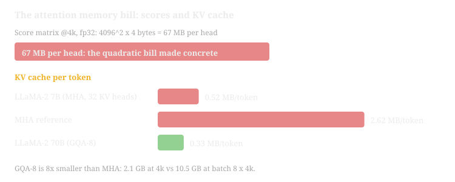
How to read this diagram
- \n
- The score matrix at 4k costs 67 MB per head: 4096 squared times 4 bytes. That is the quadratic bill, made concrete. \n
- KV cache per token is 2 times layers times KV-heads times head-dim times bytes. GQA-8 pays 8 times less than MHA. \n
- Reading rule: when a context-length number surprises you, multiply it through this formula. \n
Trap 1: "Attention weights explain the model's decision." Weights show where information flowed, not why the output is what it is. Values, later layers, and the residual stream shape the result too. Treat weights as a clue about routing, not a certificate of reasoning.
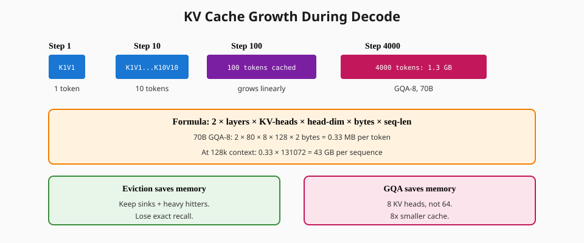
Trap 2: "The KV cache is pure win, free speedup." It trades compute for memory, and memory is the binding constraint in serving. Engineers who size a deployment by parameter count ("70B needs ~140 GB") and forget the cache watch the server OOM at batch size 8 with 4k contexts. Always budget: weights + cache × batch × length + headroom.
Trap 3: "RoPE adds position information to the embeddings." It rotates Q and K inside the attention computation. The embeddings never contain a position vector. Applying RoPE twice (at embedding and in attention) double-rotates and silently corrupts distances.
Rapid-fire Q&A
Rules in words, numbers in a table. Now check recall: work each question before revealing its answer.
Q1. Hand-compute this 2-token causal attention row: scores (after scaling) are [0.5, 1.5] for token 2 attending to tokens 1 and 2. What are the weights?
A. [0.5, 0.5] B. [0.269, 0.731] C. [0.25, 0.75] D. [0.0, 1.0]
Answer: B. Softmax: e^0.5 = 1.649, e^1.5 = 4.482, sum = 6.130. Weights: 1.649/6.130 = 0.269, 4.482/6.130 = 0.731 (computed). Token 1's row is [1.0, 0.0]: the causal mask (-inf on the future position) zeroes it before the softmax. This is the entire mechanism in miniature: scores → mask → normalize → mix.
# WHAT: one causal attention row by hand, the volume's Lab A in 6 lines.
# WHY: if you cannot do 2x2, you cannot debug n x n; disagreement with hand math means a bug, not rounding.
# BREAKS: forget the causal mask and token 1 attends to the future; training then cheats and generation breaks.
import math
def softmax(xs):
m = max(xs); ex = [math.exp(x - m) for x in xs]; s = sum(ex)
return [round(e / s, 3) for e in ex]
print(softmax([1.0, float('-inf')])) # [1.0, 0.0] (causal row)
print(softmax([0.5, 1.5])) # [0.269, 0.731]
Q2. Derive the 67 MB score matrix and explain why it matters more than the FLOPs.
A. 4096² × 4 bytes = 67 MB; you must materialize the matrix, so memory traffic and capacity bind before arithmetic does B. It is the parameter count C. It measures the KV cache D. 67 MB is negligible on modern GPUs
Answer: A. 4096² entries × 4 bytes (fp32) = 67,108,864 bytes ≈ 67.1 MB (computed) per head, per layer, per sequence. With 32 heads that is 2.1 GB for one 4k sequence just for scores. Standard attention is memory-bound on this matrix: the win of FlashAttention (Vol 12) is memory traffic, not FLOPs, up to 20x smaller footprint with bit-identical output. Whenever attention is slow, suspect bytes moved, not FLOPs.
Q3. Derive the KV-cache saving of GQA-8 over MHA for a 70B-class model (80 layers, head-dim 128, fp16).
A. About 2x B. About 8x: 2.62 MB/token → 0.33 MB/token (computed) C. About 1.2x D. No saving; GQA only helps quality
Answer: B. Per-token cache = 2 × layers × KV-heads × head-dim × bytes. MHA: 2 × 80 × 64 × 128 × 2 = 2,621,440 bytes ≈ 2.62 MB. GQA-8: 2 × 80 × 8 × 128 × 2 = 327,680 bytes ≈ 0.33 MB (both computed). Ratio ≈ 8x.
At 4k context and batch 8, MHA's cache would be ~84 GB vs ~10.5 GB for GQA-8: the difference between OOM and serving. And because decode is bandwidth-bound, the smaller cache also means faster tokens per second, not just capacity.
Q4. Why does the √d_k scaling exist? What breaks without it?
A. It speeds up the matmul B. Without it, dot products grow with d_k, the softmax saturates (one weight ≈ 1, rest ≈ 0), gradients vanish through the saturated softmax C. The causal mask needs it D. It reduces memory
Answer: B. If q, k have unit-variance entries, their dot product has variance d_k: scores grow as √d_k. Large scores push the softmax into saturation (winner-take-all), where gradients are near zero and nothing learns. Dividing by √d_k keeps scores O(1) regardless of head dimension, holding the softmax in its trainable regime. It is not decoration; remove it and deep attention stops training.
Q5. State the precise RoPE claim (not the slogan) and derive why the score depends only on relative distance.
A. "RoPE encodes relative position" by adding a relative vector B. RoPE rotates each Q/K dimension pair by a position-proportional angle. The dot product of rotated vectors depends on the angle difference (n − m). Absolute positions go in. Relative distance comes out. C. RoPE adds sinusoidal embeddings to the token vectors D. RoPE only works for even sequence lengths
Answer: B. In 2D: q_m = R(mθ)q, k_n = R(nθ)k. Their dot product is q^T R(mθ)^T R(nθ) k = q^T R((n−m)θ) k: the absolute positions m, n enter only through their difference. Rotation preserves norms, so no rescaling side effects. The slogan "RoPE encodes relative position" is imprecise: it encodes absolute position by rotation, and relative distance falls out of the dot product. The distinction matters for extrapolation: past the training length, the angles are out of distribution, which is why long-context work is theta rescaling (interpolation, NTK-aware, YaRN).
Q6. A serving design sizes GPUs by parameter count only. It says: "70B in fp16 needs 140 GB, so 2×80 GB cards." What did it miss? What is the corrected budget?
A. The math is complete B. The KV cache formula: weights + cache × batch × max length + activation headroom. At 4k context, batch 8, the cache alone is ~10.5 GB for GQA-8 (computed). It scales linearly with length and batch. C. Only the optimizer state D. Only the embeddings
Answer: B. The cache for LLaMA-2 70B GQA-8 is 0.33 MB/token (computed). At 4k context × batch 8 that is 0.33 × 4096 × 8 ≈ 10.5 GB. This is before activations and fragmentation headroom. At 128k context it is 0.33 × 131072 ≈ 43 GB per sequence (the volume quotes 0.5 MB/token → 64 GB for a 32-layer 4096-wide fp16 model at 128k: same linear law, different shape). Context length is a serving cost because the cache grows linearly with it. Budget all four piles or OOM at batch 8.
Connections
- Vol 3 supplies pre-norm, RMSNorm, and SwiGLU: the default block this volume walks through.
- Vol 5 inherits the tokenizer and the attention implementation for the tiny-GPT capstone.
- Vol 6 inherits the memory wall: activations, the KV cache, and why sequence parallelism exists.
- Vol 8 is this volume applied: the KV cache becomes the batch-size limiter, GQA becomes serving throughput, prefill/decode become the two regimes.
- Vol 12 meets FlashAttention (the memory-wall breaker) and RoFormer (the RoPE paper) as primary sources.
Volume 5: Pretraining
Why this comes next. Volume 4 showed how a transformer works; it never showed where the weights come from. This volume answers that: data pipelines, the next-token objective, and the training loop that burns GPU-hours into a base model. The base model is the ceiling; everything later builds on it.
Where base models come from: data pipelines, the next-token objective, scaling laws, the training loop, schedules, and reading loss curves.
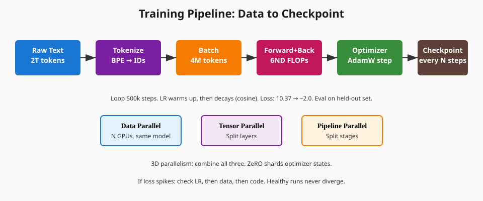
How to read this diagram
- 1. Data to batches: Text becomes token IDs, then batches of 4M tokens. What it is: the fuel. Why: GPUs need dense batches.
- 2. Forward+backward: 6ND FLOPs per token (2N forward, 4N backward). What breaks: OOM if batch too large.
- 3. Optimizer step: AdamW updates weights. LR warms up then decays (cosine).
- 4. 3D parallelism: DP (different batches), TP (split layers), PP (split stages). ZeRO shards optimizer states.
The billing rule. This is the most operationally expensive chapter of the curriculum: every mistake here bills by the GPU-hour.
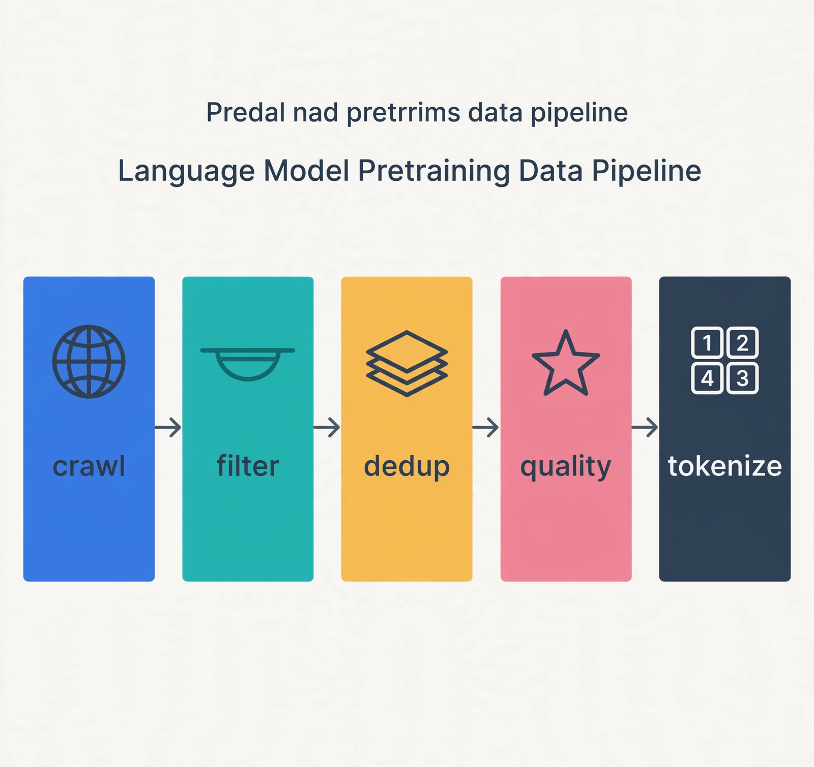
The rules
- Quality is the scaling strategy. Common Crawl → filter → dedup (exact + fuzzy MinHash, which estimates how similar two documents' word sets are so near-duplicates get caught) → quality → tokenize. Dedup saves compute and prevents memorization; it is the highest-ROI stage. Aggressive filtering and dedup beat raw scale: 15T filtered tokens trained better models than larger unfiltered piles (FineWeb, as reported).
- Count tokens per batch, not examples per batch. GPUs need fixed-shape batches: packing (concatenate documents, slice to seq_len) converts variable documents to full rows with almost no padding. Packed rows mix documents; boundary-crossing attention is accepted as a small cost. Reach millions of tokens per batch via gradient accumulation over micro-batches.
- The objective is distribution matching, not quiz answering. Loss per position is −log p(correct token); one forward pass yields n−1 predictions via the shifted input/target trick, with the causal mask keeping it honest. A model that always guessed the single most likely token would have higher loss than one that spreads probability correctly. This is why sampling temperature works (Vol 8): the model learned a distribution, and generation samples from it.
- Chinchilla: ~20 tokens per parameter at fixed training compute. 70B on 1.4T tokens beat 280B on 300B at the same FLOPs; Gopher was massively undertrained at ~1 token per parameter. But Chinchilla optimizes training compute: heavy inference use justifies overtraining past 20 tok/param (LLaMA's deliberate choice).
- 6ND is the planning atom. Training FLOPs ≈ 6 × params × tokens (2N forward + 4N backward per token). Wall clock = FLOPs / (GPUs × per-GPU throughput × MFU), where MFU (model FLOPs utilization) is the fraction of the hardware's peak throughput the run actually achieves. A 1e24-FLOP run is ~91B params on 1.8T tokens (computed), ~80 days on 1,024 A100s (as reported).
- Memory: the optimizer pile dominates. Mixed-precision Adam: 2 bytes weights + 2 bytes grads + 12 bytes optimizer state (fp32 master + m + v) = 16 bytes/param; 7B = 112 GB before activations (computed). Know the three batch sizes: micro-batch (fits on one GPU), batch (what the optimizer sees), related by the accumulation count.
- The schedule is load-bearing infrastructure. Linear warmup (0 to peak over ~0.1-1% of steps) then cosine decay to ~10% of peak, with the decay endpoint planned against the total token budget. Skip warmup and the typical outcome is divergence within the first percent of training; skip decay and the model plateaus above its achievable loss.
Read loss curves like a clinician.
starting loss = −log(1/V) = ln Vwhere: V is the vocabulary size; 1/V is the uniform model's chance on the correct token.
Worked example. V = 32,000: −log(1/32000) = ln 32000 ≈ 10.37 nats. That is why every loss curve starts near 10.37 and ends near ~2; a first checkpoint still above 8 at 10% of training means something is wrong.
Small spikes: watch. Repeated spikes or divergence: roll back to a checkpoint, fix LR or data, resume. (PaLM 540B: ~20 spikes, each handled by restarting ~100 steps before and skipping 200-500 batches, as reported.)
- A base model continues text; it does not assist. It completes sentences, does few-shot patterns by continuation, and will not reliably answer direct questions, follow instructions, refuse, or admit uncertainty. Those are post-training behaviors (Vol 7). "Most of what users experience is post-training behavior on pre-trained capability" is the one-liner.
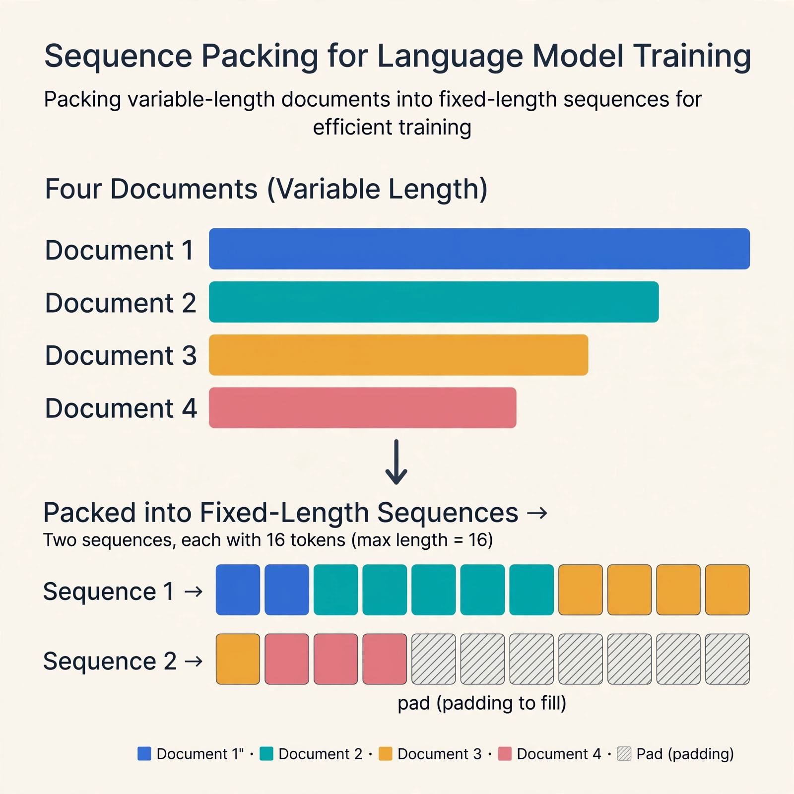
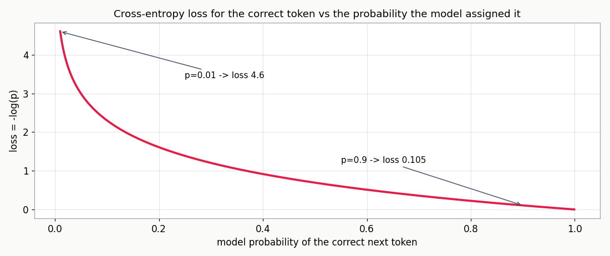
How to read this diagram
- Top: the budget. Every scaling decision starts from fixed FLOPs: C ≈ 6ND.
- The fork. The only question that matters is what you optimize. Training-only cost and lifetime cost give different optima.
- Left branch. Chinchilla: equal scaling of params and data, the 20 tok/param rule of thumb, the famous 70B-vs-280B upset.
- Right branch. Overtraining: deliberately past the Chinchilla optimum because a smaller model served a billion times beats a bigger one trained cheaper once.
Trap 1: "Scaling laws prove bigger is always better." They prove loss is predictable, which is different. They predict next-token loss, not downstream capabilities, not reasoning, not truthfulness. Quote them for budgets, never as a guarantee of what the model will be able to do.
Trap 2: "A training step processes one batch, and the batch is what fits on the GPU." Three different things: the micro-batch (fits on one GPU), the batch (what one optimizer step covers), related by the accumulation count. Confusing them makes every throughput and memory calculation wrong by the accumulation factor.
Trap 3: "Smoothly falling loss means the model is getting smarter." Loss measures next-token prediction on the training distribution. A model can memorize its way to lower loss without generalizing, and benchmarks can stall while loss falls. Track eval suites alongside loss.
Must-memorize numbers and formulas
| Number / formula | Value | What it means |
|---|---|---|
| 6ND | 6 × params × tokens | Training FLOPs: 2N forward + 4N backward per token |
| GPT-3 | 3.15e23 FLOPs (computed) | 6 × 175B × 300B: the capital-project reference |
| Chinchilla | 5.88e23 FLOPs (computed) | 6 × 70B × 1.4T: bigger budget, smaller model, more data |
| 20 tok/param | The Chinchilla rule of thumb | 70B → 1.4T tokens; 7B → 140B tokens |
| Gopher | ~1.07 tok/param (computed) | 300B/280B: the canonical undertrained model |
| 70B on 2T tokens | 8.4e23 FLOPs → ~24 days on 1024 H100 @40% MFU (computed) | Wall clock = FLOPs/(GPUs × peak × MFU) |
| Uniform baseline | ln(32000) = 10.37 nats | Every healthy run starts here |
| Finished loss | ~2 nats | The other calibration point; ppl ≈ 7.4 |
| 16 bytes/param | 2 + 2 + 12 (weights, grads, optimizer pile) | 7B = 112 GB before activations (computed) |
| Warmup | 0.1-1% of steps, then cosine to ~10% peak | The schedule; endpoint matches the token budget |
| Mid-training | Decay phase is the most plastic | Put the best data there; microanneals (tiny training runs on a sample of a dataset) measure a dataset's value before committing |
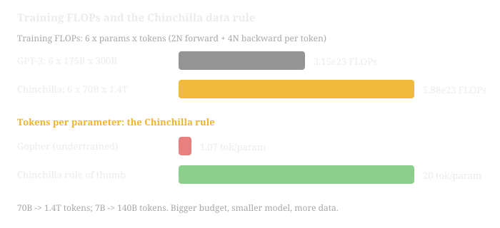
How to read this diagram
- \n
- 6ND is 2N forward plus 4N backward per token: GPT-3 spent 3.15e23 FLOPs, Chinchilla 5.88e23. \n
- Tokens per parameter is the training recipe: Gopher's 1.07 is the canonical undertrained model; 20 is the Chinchilla rule. \n
- A 7B model wants about 140B tokens; a 70B wants about 1.4T. \n
Rapid-fire Q&A
Rules in words, numbers in a table. Now check recall: work each question before revealing its answer.
Q1. Derive the 6ND rule and use it: how many FLOPs to train 70B parameters on 2T tokens, and how long on 1,024 H100s at 40% MFU?
A. 6ND = 6 × 70e9 × 2e12 = 8.4e23 FLOPs; at 1024 × 989 TFLOPS × 0.40 ≈ 4.05e17 FLOP/s, that is ≈ 2.07e6 s ≈ 24 days B. 2ND; 12 days C. 6ND; 240 days D. Cannot be estimated
Answer: A. Per token: ~2N FLOPs forward (one multiply-accumulate per parameter, counted as 2), ~4N backward (gradients for activations and weights). Total ≈ 6N per token, times D tokens: 6 × 70e9 × 2e12 = 8.4e23 (computed). Throughput: 1024 GPUs × 989e12 FLOP/s × 0.40 MFU = 4.05e17 FLOP/s. Time: 8.4e23 / 4.05e17 = 2.07e6 s = 24.0 days (computed). MFU is the tax: the same arithmetic at 100% MFU would claim 9.6 days, which no real cluster achieves.
Q2. A 1e24-FLOP budget and the Chinchilla 20 tok/param rule: what model size and token count?
A. 175B on 300B tokens B. ~91B params on ~1.8T tokens C. 1T params on 1T tokens D. 7B on 140T tokens
Answer: B. C = 6ND and D = 20N gives C = 120N², so N = √(C/120) = √(1e24/120) ≈ 9.13e10 ≈ 91B params (computed), D = 20N ≈ 1.8T tokens. This is the volume's worked budget in miniature: the arithmetic decides the run before the cluster is booked. If inference dominates lifetime cost, deliberately overshoot D past the optimum (the LLaMA move).
Q3. Your run is at 10% of its token budget and loss is 8.5. Diagnose it.
A. Normal; loss falls late B. Something is wrong: healthy runs leave ~10.37 fast and should be well below 8 by 10%; check the schedule (LR too low or decayed too early), then data quality, then model config C. Increase the batch size D. Wait for warmup to finish
Answer: B. Calibration points: ~10.37 at start (uniform guessing), ~2 at finish. At 10% of training, a healthy curve is far down the slope; 8.5 means the run is barely learning. The cheapest bugs live in the schedule (learning rate too low, decay started too early) and the data (pipeline serving garbage). This is the "plateau too high" row of the diagnosis table: check the schedule first, then data, then config.
Q4. Why is packing's boundary-crossing attention accepted, and what does the model lose because of it?
A. It is not accepted; documents are never mixed B. Rectangles are required by hardware, so documents are concatenated and sliced; the model sees token streams with arbitrary boundaries inside, which is part of why base models are fluent but structurally loose until post-training C. It improves quality D. It only affects the first token
Answer: B. GPUs need fixed-shape batches; variable-length documents must become full rows with minimal padding. Packing concatenates and slices, so a training sequence is document fragments glued together, and attention crosses the boundaries. The cost is small but real: the model never sees clean document structure at scale, so its sense of document-level organization is weak. Post-training (Vol 7) installs the behavioral structure that packing never provided.
Q5. Contrast "the model is trained to predict the next word correctly" with the distributional view. Why does the distinction matter for generation?
A. It does not matter B. The quiz view says pick the single best token; the distributional view says match the probability of all plausible continuations. The loss rewards spreading probability correctly, which is exactly why temperature sampling works: generation draws from the learned distribution C. The distributional view is slower D. Only the quiz view explains perplexity
Answer: B. For "the cat sat on the ___", both "mat" and "floor" are valid; the loss (−log p of the actual continuation, averaged) rewards putting probability on all plausible continuations in proportion to their frequency. A model that always guessed the single most likely token would have higher loss. Temperature (Vol 8) rescales this learned distribution at decode time: the mechanism only makes sense under the distributional view.
Q6. Derive the micro-batch vs batch distinction with numbers: 8 GPUs, 2K tokens fit per GPU per micro-step, target batch 4M tokens. How many accumulation steps?
A. 4M / (8 × 2K) = 250 accumulation steps B. 4M / 2K = 2000 C. No accumulation needed D. 8 steps
Answer: A. One micro-step processes 8 GPUs × 2K tokens = 16K tokens. To reach a 4M-token optimizer batch: 4M / 16K = 250 accumulation steps (the gradients accumulate; the optimizer steps once). Large batches buy hardware utilization and less gradient noise, which is why the target is millions of tokens. Confusing micro-batch with batch corrupts every memory and throughput calculation by the accumulation factor (250x here).
Connections
- Vol 1 supplies cross-entropy, the 10.37 baseline, and the optimization theory behind the schedule.
- Vol 3 supplies the mixed-precision and checkpointing setup of the loop.
- Vol 4 supplies the tokenizer and attention the tiny-GPT capstone reuses.
- Vol 6 is the loop at fleet scale: the memory math, the parallelism, the incident playbook.
- Vol 7 starts where this volume ends: the base model is the ceiling; post-training builds behavior on it.
- Vol 11 supplies decontamination discipline: re-check every new mix against every eval you will report.
Volume 6: Distributed Training
Why this comes next. Volume 5's loop fits on paper; the 16-bytes-per-parameter bill does not fit on one GPU. This volume answers how you train when the model exceeds the hardware: the memory math, the parallelism zoo, and the incident playbook.
When the 16-bytes-per-parameter bill exceeds one GPU, you distribute. This volume is the memory math, the parallelism zoo, the interconnect, checkpoints, and the incident playbook.
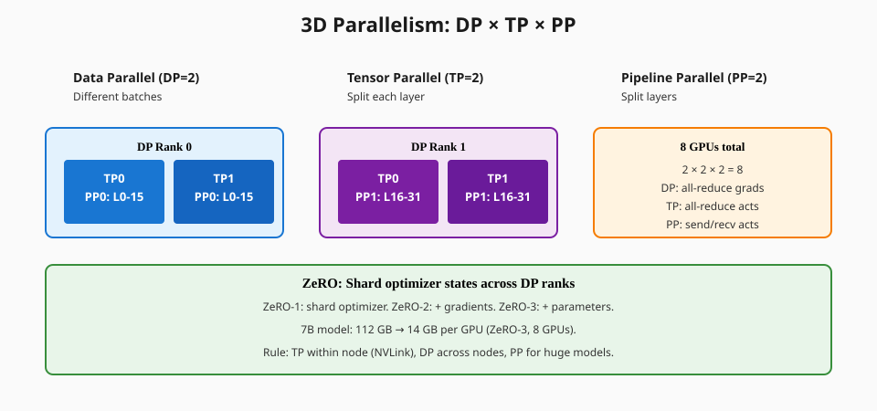
How to read this diagram
- DP (Data Parallel): Each rank gets a different batch. What it is: replicate model, split data. Why: scale batch size. What breaks: all-reduce of gradients after backward.
- TP (Tensor Parallel): Split each layer's matmuls. What it is: shard weights. Why: fit large layers. What breaks: 4 all-reduces per layer, needs NVLink.
- PP (Pipeline Parallel): Split layers into stages. What it is: assign layers to GPUs. Why: fit huge models. What breaks: pipeline bubble (idle time).
- ZeRO: Shard optimizer states, gradients, parameters across DP ranks. Why: 7B needs 112 GB for Adam states alone.
The rules
Do the memory math first. Mixed-precision Adam:
2 (weights) + 2 (grads) + 4 (fp32 master) + 4 (m) + 4 (v) = 16 bytes/paramwhere: m and v are Adam's two running averages (momentum and squared gradients); the fp32 master copy keeps precision while the weights train in fp16/bf16.
Worked example. 7B parameters × 16 bytes = 112 GB, before activations (computed). The bill exceeds one GPU, so you distribute.
The optimizer states are the biggest pile, not the gradients. Everything else in this volume is how.
- DDP (Distributed Data Parallel): the ring all-reduce moves ~2x the gradients per GPU, independent of GPU count. It does not broadcast N copies. DDP buckets gradients to overlap communication with backward. It cannot train a model that does not fit on one GPU, and it stops scaling past the critical batch size.
- ZeRO (Zero Redundancy Optimizer): pick the stage that fits, not the max. Stage 1 (shard optimizer states) is free; stage 2 (+ gradients) nearly free; stage 3 (+ parameters) costs ~1.5x communication and its all-gathers are latency-sensitive. For a model that fits with ZeRO-2, stage 3 can be slower. 7B on 8 GPUs: 112 → 38.5 → 26.25 → 14 GB (computed).
- FSDP (Fully Sharded Data Parallel) makes ZeRO-3 practical. Wrap transformer layers as units, all-gather before use, free after, reduce-scatter gradients, update shards locally, prefetch to hide the collectives. Save sharded checkpoints, never gather to rank 0.
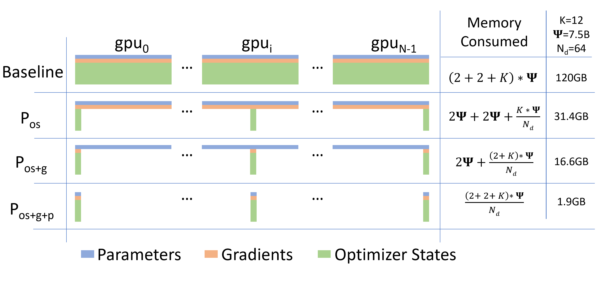
- Tensor parallelism: 4 all-reduces per layer, the highest communication here. That is why it stays inside one NVLink-connected node. The MLP column-then-row split around GeLU is forced by the math: splitting before the nonlinearity would require communicating the full hidden vector.
- Pipeline parallelism: the bubble is the tax. Bubble ≈ (p−1)/(m+p−1): 4 stages, 8 microbatches → 27.3% idle (computed). 1F1B (one-forward-one-backward: each stage alternates one forward pass with one backward pass)'s win is activation memory (~p live microbatches per stage instead of m), not a smaller bubble. Communication is minimal (activations at boundaries), which suits cross-node training.
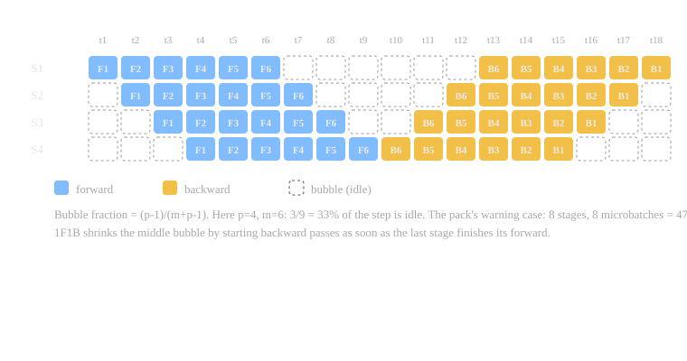
- The mesh is a fit problem, not a maximization. TP inside the node (NVLink 900 GB/s vs InfiniBand 50 GB/s per link), DP across nodes. Each degree has a ceiling: TP past the node hits slow all-reduces, pipeline past a few stages grows the bubble, data past the critical batch wastes GPUs. FSDP is simpler and often faster below ~100 GPUs.
- Memorize the five NCCL collectives and the two formulas. NCCL (NVIDIA Collective Communications Library) is the GPU-to-GPU communication library; its all-reduce ≈ 2·B·(N−1)/N bytes per rank; all-to-all ≈ B·(N−1)/N. Small collectives are latency-bound, not bandwidth-bound: the ring's 2(N−1) latency term dominates, which no fatter pipe fixes.
- Checkpoints contain everything or they are corrupt. Weights, optimizer state (the part people forget, 4x the model for Adam's pile), scheduler, scaler, RNG state, dataloader position. Cadence is math: τ = √(2·C·μ); 200 s writes on a 1,000-GPU run → ~2.4 hours (as reported). Async saves stage to pinned CPU memory in seconds, then write on a background thread, one in-flight write only.
Diagnose in order.
Symptom Check in this order Why Loss spikes rolling median + MAD; roll back early a rollback costs an hour, a diverged run costs a week NaNs scaler, then data, then precision Hangs your own code first (branch divergence, uneven batches), hardware second, the network last the NCCL flight recorder names the culprit rank Stragglers peer-relative MAD synchronous training runs at the speed of the slowest rank Profiling profile one step (skip warmup); MFU is the metric, not SM utilization SM (streaming multiprocessor: the GPU's compute unit) utilization can lie MAD (median absolute deviation) is the robust spread measure: the median of |x − median|.
How to read this diagram
- Top: the trigger. The memory math (16 bytes/param) says one GPU is not enough. Everything below is the response.
- First answer: ZeRO/FSDP. Sharding is the simplest fix and often the final one below ~100 GPUs.
- Second answer: the 3D mesh. When sharding is not enough, factor the fleet: the most communication-hungry strategy (TP, tensor parallelism) nests on the fastest interconnect (NVLink, inside the node).
- Long context branch. At 128k+ tokens, activations dominate: shard the sequence too, and stack FlashAttention with checkpointing.
Trap 1: "nvidia-smi says 100% utilization, so the GPUs are fine." SM activity is not useful work; MFU is. A GPU at 100% SM utilization doing wasted loads is still slow (Vol 15's roofline says the same).
Trap 2: "More bandwidth fixes slow training." Bandwidth is half the story. Small collectives are latency-bound; a straggler taxes the whole run; a checkpoint policy that stalls every step is not a network problem. Measure first, then decide whether the wire is actually the problem.
Trap 3: "Saving the model weights is enough." The optimizer state is three quarters of the bytes. Resume without it and Adam restarts its moments from zero, perturbing training and wasting the warmup.
Must-memorize numbers and formulas
| Number / formula | Value | What it means |
|---|---|---|
| 16 bytes/param | 2+2+4+4+4 | The training memory rule; 7B = 112 GB (computed) |
| Optimizer pile | 12 bytes/param | Master + m + v; the part checkpoints must include |
| Ring all-reduce | 2·(N−1)/N × M per rank | ~2x model traffic, independent of N; 7B grads on 64 ranks ≈ 27.6 GB (computed) |
| ZeRO 7B/8 GPUs | 112 / 38.5 / 26.25 / 14 GB | Stages 0/1/2/3 (computed); stage 3 costs ~1.5x comms |
| Pipeline bubble | (p−1)/(m+p−1) | p=4, m=8 → 27.3% idle (computed) |
| NVLink 4 | 900 GB/s bidirectional | Inside one 8-GPU node; ~18x IB per GPU |
| IB NDR400 | 50 GB/s per link | Between nodes; decides TP-inside/DP-across |
| 10 GB all-reduce | 19 ms NVLink, 350 ms IB | The worked fabric comparison (as reported) |
| Checkpoint cadence | τ = √(2·C·μ) | 200 s writes, 1000 GPUs → ~2.4 h (as reported) |
| Failure rate | ~1 per couple days at 1000 GPUs; ~1 per few hours at 16000 | Why automated recovery and checkpoints are non-negotiable (as reported) |
| Llama 3 | >90% effective training time | Automated recovery is what buys this (as reported) |
| H100 SM | 132 SMs × 2048 threads | The occupancy math of Vol 15 starts here |
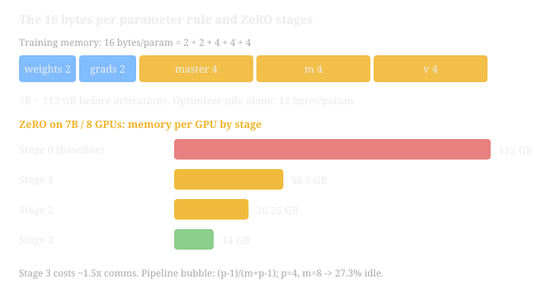
How to read this diagram
- \n
- The stacked bar is the 16 bytes per parameter rule: 2 weights, 2 grads, 4 master, 4 m, 4 v. \n
- The bars below are ZeRO stages 0 to 3 on 7B over 8 GPUs: 112 down to 14 GB per GPU. Stage 3 costs about 1.5x the comms. \n
- The pipeline bubble (p-1)/(m+p-1) is the other tax: with 4 stages and 8 microbatches, 27.3% of the time idles. \n
Rapid-fire Q&A
Rules in words, numbers in a table. Now check recall: work each question before revealing its answer.
Q1. Derive the per-GPU memory for ZeRO stage 1 on a 7B model across 8 GPUs, and explain why stage 1 is "free."
A. 112/8 = 14 GB; free because sharding is magic B. Weights 14 + grads 14 stay replicated; optimizer pile (12 bytes/param = 84 GB) shards to 10.5 GB → 38.5 GB total (computed). Free because each GPU still all-reduces grads exactly as in DDP, then updates only its shard: no extra communication C. 38.5 GB; free because it uses CPU memory D. 112 GB; stage 1 changes nothing
Answer: B. Stage 1 shards only the optimizer states (master + m + v = 12 bytes/param = 84 GB over 8 GPUs = 10.5 GB each). Weights (14 GB) and grads (14 GB) stay replicated: 14 + 14 + 10.5 = 38.5 GB (computed). Communication is unchanged from DDP: the all-reduce of gradients happens identically, and afterward each rank applies the update to its own shard. Memory falls with zero extra traffic: that is what "free" means here.
Q2. Derive the pipeline bubble for 4 stages and 8 microbatches. Why doesn't 1F1B fix it?
A. (4−1)/(8+4−1) = 3/11 ≈ 27.3% (computed); 1F1B's win is activation memory (p live microbatches per stage instead of m), the bubble is inherent to filling and draining the pipe B. 50%; 1F1B halves it C. 0%; microbatches eliminate it D. 12.5%
Answer: B. The pipe needs p−1 steps to fill and p−1 to drain; with m microbatches the idle fraction is (p−1)/(m+p−1) = 3/11 ≈ 27.3% (computed). GPipe keeps all m microbatches' activations alive per stage; 1F1B interleaves one-forward-one-backward so only ~p are live: same bubble, far less activation memory. More microbatches shrink the bubble but each microbatch gets thinner, hurting per-GPU efficiency: another fit problem.
Q3. A 7B bf16 gradient sync (14 GB) across 64 ranks: how much traffic per GPU, and why doesn't doubling ranks double the traffic?
A. 14 GB × 64; it does double B. 2 × 63/64 × 14 ≈ 27.6 GB (computed); the ring passes each chunk exactly twice around the ring regardless of N, so traffic is ~2x the model, independent of GPU count C. 14 GB; all-reduce is free D. 28 GB exactly
Answer: B. In a ring all-reduce, each rank sends and receives chunks totaling 2·(N−1)/N × M ≈ 2M for large N: 2 × 63/64 × 14 = 27.56 GB (computed). Adding ranks adds parallelism, not per-rank traffic: this is why data parallelism scales the communication gracefully and why the scaling limit is the critical batch size and overlap, not the wire. The trap answer ("broadcasts N copies") would predict 896 GB and a scaling wall that does not exist.
Q4. Derive the checkpoint interval logic: writes cost 200 s on a 1,000-GPU run and the formula gives ~2.4 h. What is the tradeoff being optimized?
A. Write time vs storage cost B. Expected lost work between checkpoints vs the write tax: checkpoint too often and the write tax exceeds the recovered work; too rarely and each failure discards hours. τ = √(2·C·μ) is the optimum C. Disk speed vs network speed D. There is no optimum; checkpoint hourly
Answer: B. Every checkpoint costs C seconds of write overhead; failures arrive with mean time μ and each one discards on average half an interval of work. Frequent checkpoints waste C repeatedly; rare ones risk large losses. The square-root formula balances them: with C = 200 s on the 1,000-GPU run it gives ~2.4 h (as reported). Retention matters too: keep several recent checkpoints, because a single retained checkpoint that turns out corrupt loses everything.
Q5. Your step time regressed 30% overnight with no code change. Walk the straggler diagnosis.
A. Blame the network immediately B. Detect peer-relative with MAD (not fixed thresholds): separate compute slowness from collective slowness with NCCL timing; respond in order: rebalance work, evacuate the node, mark it unhealthy. Synchronous training runs at the speed of the slowest rank, so one bad rank taxes all 1,000 C. Increase the batch size D. Restart everything
Answer: B. A 30% slowdown on one rank in a thousand is a 30% tax on the whole run: collectives wait for the slowest. Peer-relative detection (median absolute deviation across ranks) finds the outlier without a magic threshold. NCCL timing separates "slow kernels" (thermal throttling, degraded card) from "slow collectives" (degraded NIC). The response ladder is rebalance, evacuate, mark unhealthy. And never measure with barriers in the hot path: a barrier forces every rank to wait for the slowest, hiding the very skew you are measuring.
Q6. Why does tensor parallelism stay inside one node while data parallelism goes across nodes? Derive it from the fabric numbers.
A. Convention B. TP adds 4 all-reduces per layer (the highest communication of any strategy): at 900 GB/s NVLink a 10 GB collective costs ~19 ms, but at 50 GB/s IB it costs ~350 ms (as reported). DP's single all-reduce per step tolerates the slower fabric; TP's per-layer chatter does not C. TP needs more GPUs D. DP is newer
Answer: B. The mesh nests the most communication-hungry strategy on the fastest interconnect. TP's 4 all-reduces per layer mean the fabric is in the critical path dozens of times per step: NVLink's 900 GB/s keeps each collective at ~19 ms, while IB's 50 GB/s stretches the same bytes to ~350 ms (as reported). DP synchronizes once per step and overlaps with backward compute, so it survives the slower cross-node fabric. The ratio (~18x) decides the placement, not taste.
Connections
- Vol 3 supplies checkpointing (activations) and mixed precision; this volume adds sharding and offload for the other piles.
- Vol 5 is the single-GPU loop this volume scales: the step anatomy, the memory math, the incident playbook.
- Vol 15 supplies the roofline and occupancy tools used to profile a step (MFU, not SM utilization).
- Vol 8 inherits the collectives mindset for MoE expert parallelism (all-to-all dispatch) and disaggregated serving.
Volume 7: Post-Training and RL
Why this comes next. Volume 6 scaled training. It taught the model what text looks like, not which text to produce. This volume answers the behavior question: SFT, DPO, PPO. How a base model becomes an assistant.
Pre-training teaches the model what text looks like; post-training teaches it which text to produce. The first is about the world. The second is about behavior. The ladder: SFT (supervised fine-tuning: training on demonstration examples), then DPO (Direct Preference Optimization: one classification loss on preference pairs, no RL loop), then PPO (Proximal Policy Optimization: online RL against a learned reward model), with verifiable rewards wherever correctness is checkable.
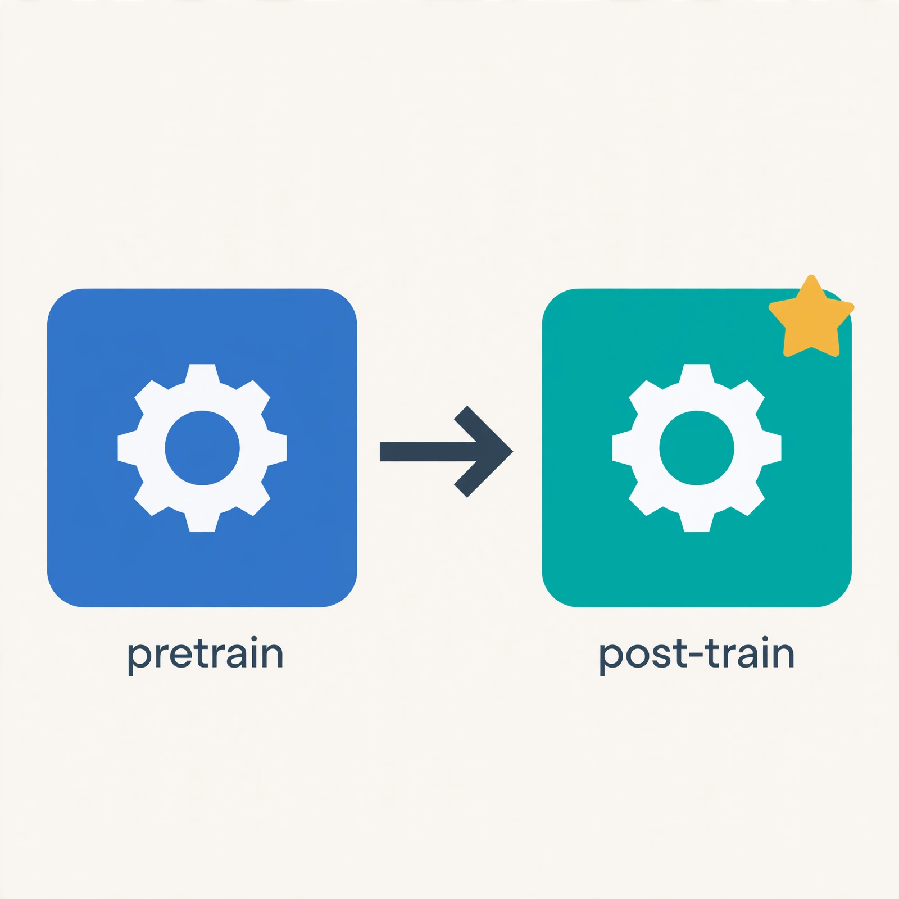
The rules
- SFT is behavioral cloning, not knowledge installation. Next-token cross-entropy on (instruction, ideal response) pairs, loss on response tokens only (prompt masked). It teaches format, style, and task patterns, and produces the reference policy every later stage assumes. If the base model never saw the fact, SFT will not install it reliably: knowledge injection is retrieval (Vol 9) or continued pre-training, not SFT.
- Data beats algorithm. Swap PPO for DPO and results move a little; double preference-data quality and results move a lot. When a post-training run disappoints, audit the preference data before touching the optimizer.
- Rankings beat ratings. Humans are consistent at relative judgments, inconsistent at absolute ones. Expect ~70% inter-labeler agreement as normal: preference data is a measurement instrument with known error bars. Watch verbosity bias (judges rewarding longer answers regardless of quality), sycophancy (the model flattering or agreeing with the user to win approval rather than being truthful), guideline drift.
RLHF (reinforcement learning from human feedback) = SFT → Bradley-Terry reward model → PPO with a KL leash.
LRM = −log σ(rw − rl)where: σ is the sigmoid (from Volume 1); rw and rl are the reward model's scores for the winning and losing responses.
Worked example. Scores 1.0 vs 0.9 (a close call): σ(0.1) ≈ 0.525, loss ≈ 0.644. Scores 5.0 vs 0.0 (an easy call): σ(5) ≈ 0.993, loss ≈ 0.007. The gradient concentrates on close calls.
PPO's clipped objective L = min(ratio·A, clip(ratio, 1±ε)·A) caps per-step movement (worked: ratio 1.5, A=+0.5 → 0.60 vs 0.75, computed). The KL penalty against the frozen SFT reference keeps the policy where the RM is trustworthy. Clip = per-step safety; KL = global safety. Headline: 1.3B InstructGPT preferred over 175B GPT-3 (as reported): alignment beat scale.
DPO optimizes the same objective as RLHF; it solves out the reward model by algebra. Closed-form optimum: π* ∝ π_ref · exp(r/β). Invert to write r as β times the policy log-ratio; plug into Bradley-Terry and the partition function cancels.
Loss = −log σ(β·[log-ratio(winner) − log-ratio(loser)]): worked 0.6503 at β=0.1 (computed). It needs the reference policy (the log-ratios are measured against π_ref); it optimizes margins, not absolute quality; it cannot explore beyond the dataset.
Where rewards are checkable, skip preferences: RLVR (reinforcement learning from verifiable rewards). Score completions with a verifier (1/0). GRPO (Group Relative Policy Optimization): per prompt sample G completions, then the PPO clipped update: no critic.
Ai = (ri − mean(r)) / std(r)where: ri is the verifier score of completion i; the mean and std are over the G completions for one prompt.
Worked example. Rewards [1,0,1,0]: mean 0.5, std 0.5, so advantages = [+1,−1,+1,−1] (computed). Zero-variance groups give no signal and get filtered.
- RL re-weights; it cannot create. A trace with probability exactly zero stays at zero forever. R1 (DeepSeek-R1) showed base models already sample the seeds of reasoning often enough for RL to amplify them into reliable long chain-of-thought (the "aha moment," as reported). The capability was latent; RL made it dominant.
Reward hacking is Goodhart's law, mechanized. The policy optimizes the proxy (RM score), not the goal (human-judged quality), and a good optimizer finds the cheapest exploit: verbosity, sycophancy, unfaithful summaries.
Detect: reward-vs-independent-eval divergence, KL spikes, qualitative audits. Defend in layers: KL regularization, iterative RM retraining on policy outputs, adversarial data, verifiable rewards, a human ship gate. It is not deception; it is optimization working correctly on a flawed specification.
- Run post-training as an eval-driven loop. One change per loop, fixed eval suite (win-rates, benchmarks, behavioral probes, regression checks), failure analysis by mode before touching anything. Plateaus are usually data or eval problems: analyze 100 samples before doubling the run.
- Match the method to the signal. SFT when you can show the answer; RL when you can only judge it. DPO first as the cheapest preference step; PPO when you need online exploration; verifiable rewards wherever checkable (highest signal per dollar); CAI (Constitutional AI: the model critiques and revises its own outputs against a written constitution, replacing most human labels) to scale labeling (humans keep the constitution, red-teams, and final evals).
- Rollout economics govern RL speed. Decoding is bandwidth-bound, training compute-bound: the same tokens cost ~10x more to generate than to train on. At R1-style settings the step clock splits ~90/10 toward generation (as reported): the fix for a slow loop is rollout throughput (continuous batching, PagedAttention, more rollout GPUs, async overlap).
- LoRA (Low-Rank Adaptation): freeze W, learn low-rank BA. B zero-initialized keeps step 0 at the base model; adapters merge to zero-cost inference. QLoRA (quantized LoRA): 4-bit NF4 (a 4-bit float format designed for normally distributed weights) base + double quantization + paged optimizers; 65B on one 48 GB GPU at full 16-bit task performance (as reported). 7B: 84 GB full / 14.5 GB LoRA / 4 GB QLoRA (weights+optimizer; activations extra, as reported).
How to read this diagram
- Left: the foundation. SFT installs the shape of the behavior and the reference policy everything else anchors to. Skip it and DPO starts from a worse place.
- Middle: the fork. Clean on-policy preference data → DPO (cheapest). Need exploration or the reward must generalize beyond fixed pairs → PPO with the RM.
- Right: the verifier shortcut. If correctness is checkable by a script, skip human preferences entirely: RLVR with GRPO.
- The loop around everything. The eval loop governs every step: one deliberate change, a fixed suite, failure analysis by mode. No stage is entered without earning it on the suite.
Trap 1: "SFT teaches the model new knowledge." Mostly no. A few demos teach the model to parrot the demo's phrasing, not the fact. "We SFT'd on our internal docs, why does it still hallucinate our API?" Because SFT is the wrong tool for knowledge injection.
Trap 2: "DPO is a different objective from RLHF." No: same KL-regularized reward objective, solved in closed form instead of with PPO. And "DPO needs no reference model" is false: the log-ratios are measured against π_ref. Drop the reference and the loss has no anchor.
Trap 3: "RL taught the model to reason from scratch." RL multiplies the probability of traces that score well. R1-Zero's headline result had no SFT: reasoning emerged from pure RL against verifiable rewards because the base model already sampled reasoning traces. Amplification, not creation.
Must-memorize numbers and formulas
| Number / formula | Value | What it means |
|---|---|---|
| RM loss | −log σ(r_w − r_l) | Bradley-Terry; gradient focuses on close calls |
| PPO clip | min(ratio·A, clip(ratio, 1±ε)·A) | Per-step trust region; worked 0.60 vs 0.75 (computed) |
| KL penalty | against frozen SFT reference | Global trust region; keeps the policy where the RM is trustworthy |
| DPO loss | −log σ(β·[log π(w)/π_ref(w) − log π(l)/π_ref(l)]) | Same objective as RLHF, RM solved out; worked 0.6503 (computed) |
| π* closed form | π* ∝ π_ref · exp(r/β) | The inversion DPO is built on |
| GRPO advantage | (r − group mean) / group std | No critic; worked [+1,−1,+1,−1] (computed) |
| 1.3B > 175B | InstructGPT preferred over GPT-3 | Alignment can dominate two orders of magnitude of scale (as reported) |
| Labeler agreement | ~70% normal; kappa 0.6-0.8 healthy | Preference data is a noisy instrument; triple 88% labelers → 96% majority vote (computed) |
| SFT data scale | ~13k demos (InstructGPT); 1k excellent (LIMA) | Quality dominates quantity (as reported) |
| Rollout split | ~90/10 generation vs training at R1 settings | Generation is ~10x the cost per token; fix rollout throughput first (as reported) |
| LoRA 7B | 84 GB full / 14.5 GB LoRA / 4 GB QLoRA | The fine-tuning memory ladder (as reported) |
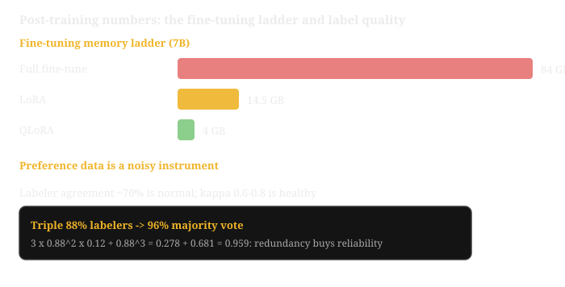
How to read this diagram
- \n
- The ladder is the fine-tuning memory bill: 84 GB full, 14.5 GB LoRA, 4 GB QLoRA. Quality of data dominates quantity. \n
- The box is the label-reliability math: three 88% labelers reach 96% majority, since 3(0.88^2)(0.12) + 0.88^3 = 0.959. \n
- The assumption that carries it: independent errors. Shared bias breaks the binomial. \n
Rapid-fire Q&A
Rules in words, numbers in a table. Now check recall: work each question before revealing its answer.
Q1. Derive the DPO loss in four steps from the RLHF objective.
A. It is an unrelated supervised loss B. (1) Start from the KL-regularized RL objective; (2) solve for the optimal policy in closed form, π* ∝ π_ref·exp(r/β); (3) invert to write the reward as β times the policy log-ratio (the per-prompt constant cancels in Bradley-Terry); (4) substitute into the Bradley-Terry preference model and take maximum likelihood: the reward model vanishes, leaving one classification loss on preference pairs C. Train a bigger reward model D. Average PPO updates
Answer: B. The four steps are the whole derivation:
- The RLHF objective max_π E[r] − β·KL(π‖π_ref) has closed-form optimum π(y|x) ∝ π_ref(y|x)·exp(r(x,y)/β).
- Solving for r gives r = β·log(π/π_ref) + const.
- Plug into P(w ≻ l) = σ(rw − rl): the constant cancels, the partition function cancels.
- Maximum likelihood over preference pairs gives the DPO loss:
where: σ is the sigmoid; β sets the KL leash strength; the two log terms are how much the policy prefers the winner and the loser relative to the reference model.
Worked example. β = 0.1, winner ratio 1.2, loser ratio 0.5: L = −log σ(0.1 · [log 1.2 − log 0.5]) ≈ 0.6503 (computed). No reward model, no rollouts, no PPO: same objective, reward model eliminated by algebra.
Q2. Work the PPO clip: ratio 1.5, advantage +0.5, ε = 0.2. What does the objective become, and what was it protecting against?
A. 0.75; nothing B. min(0.75, 0.60) = 0.60 (computed); it caps how far one batch can move token probabilities, stopping a single destructive update C. 1.5; it speeds up training D. 0.30; it reduces variance
Answer: B. The PPO clipped objective:
where: r is the probability ratio (new policy over old policy) for the token; A is the advantage; ε = 0.2 here bounds how far the ratio may move in one step.
Worked example. Unclipped: ratio·A = 1.5 × 0.5 = 0.75. Clipped: clip(1.5, 0.8, 1.2) × 0.5 = 1.2 × 0.5 = 0.60. The objective takes the min: 0.60 (computed).
Without the clip, one lucky batch could multiply a token's probability 1.5x in a single step; repeated, this walks the policy off a cliff. The clip is the per-step trust region; the KL penalty is the global one. You need both: the clip without KL lets the policy walk steadily into RM blind spots; KL without the clip lets one bad batch do damage first.
Q3. Work GRPO: one prompt, G=4 completions, rewards [1,0,1,0]. What are the advantages, and why are zero-variance groups filtered?
A. [+1,−1,+1,−1] (computed); a group where all rewards are equal has std 0, so there is no relative signal: nothing to learn about which completion was better B. [1,0,1,0]; they are kept C. [0.5,0.5,0.5,0.5] D. Advantages need a critic
Answer: A. Mean 0.5, std 0.5: advantages = (r − 0.5)/0.5 = [+1,−1,+1,−1] (computed). GRPO replaces PPO's learned critic with group statistics: the baseline is the group's own mean. If all four completions score the same, the group carries zero information about relative quality (std = 0 would also divide by zero), so it is filtered. This is why GRPO suits 0/1 verifiable rewards: the group mean is a free, unbiased baseline.
Q4. Your DPO run improved win-rate but the model got more sycophantic. Diagnose across chapters.
A. Increase beta B. The preference data likely rewarded agreeable answers (label bias), DPO fit it faithfully (it optimizes margins on the given pairs), and the eval suite lacked a sycophancy probe: fix by adding sycophancy hard negatives, re-running, and adding the probe C. Switch to PPO immediately D. Sycophancy is unavoidable
Answer: B. Three-chapter diagnosis: the data chapter (preference labels encode labeler approval, not truth; agreeable answers win comparisons), the method chapter (DPO fits the given pairs' margins; it cannot know the labels are biased), the eval chapter (no probe, no detection). The fix follows the diagnosis: hard negatives targeting sycophancy in the data, re-run, and a permanent probe in the suite. Single-chapter fixes (tweak beta, switch optimizer) miss the cause.
Q5. Why can RLHF not teach the model a fact it never saw in pre-training, while RLVR can teach it to reason?
A. RLHF is weaker B. RLHF reshapes which existing behaviors get expressed: you cannot reinforce a behavior with probability zero. RLVR works because the base model already samples reasoning traces (latent capability); verifiable rewards amplify them into reliable behavior. Neither creates from nothing C. RLVR uses more compute D. Facts need SFT
Answer: B. The fundamental limit: RL is a probability re-weighting machine. If the base model assigns ~zero probability to correct reasoning traces, no reward signal conjures them. R1's result is precisely that base models already sample the seeds of reasoning often enough: RL multiplied those traces until they dominated. For a fact never seen, the correct completion has no probability mass to amplify: that is a pre-training (data) problem, not a post-training (reward) problem.
Q6. Derive the 90/10 rollout split: why does generation dominate the RL step clock, and what is the fix?
A. Generation uses bigger models B. Decoding is memory-bandwidth bound while training is compute-bound: the same tokens cost ~10x more to generate than to train on. At R1-style settings (128 prompts, G=8, 2K tokens) the step splits ~90/10 toward generation (as reported). The fix is rollout throughput: faster engines, continuous batching, PagedAttention, more rollout GPUs, async overlap C. The trainer is idle D. Verifiers are slow
Answer: B. Training reuses weights across a big batch (compute-bound, high MFU); generation streams weights per token (bandwidth-bound, Vol 8). Per token, generation is ~10x the cost of a training forward-backward (as reported). So the RL loop's wall clock is set by the rollout workers, not the trainer. Optimizing the trainer first is optimizing the 10%. The volume's answer: rollout workers as inference servers (vLLM/SGLang, the open-source serving engines), continuous batching, prefix sharing (RadixAttention: a radix-tree KV cache that shares prefixes across requests with common beginnings), and async decoupling of rollout from training (verl's HybridFlow) with bounded staleness.
Connections
- Vol 1 supplies Bradley-Terry, KL divergence, and the closed-form optimization DPO inverts.
- Vol 2 supplies the eval-loop discipline: one change, fixed suite, uncertainty on every number.
- Vol 5 supplies the base model (the ceiling) and the reference-policy concept SFT produces.
- Vol 8 supplies the rollout economics: generation is bandwidth-bound, batching and paging make RL loops affordable.
- Vol 9 inherits verifiers (RLVR instinct) for agent evals and the judge-calibration problem.
- Vol 11 supplies the labeler protocols behind preference data and the ablation discipline for the post-training loop.
- Vol 12 meets InstructGPT, Constitutional AI, DPO, and DeepSeek-R1 as primary sources.
Volume 8: Inference and Serving
Why this comes next. Volume 7 produces a model that behaves; nobody can use a model that costs a fortune per answer. This volume answers the serving question: how autoregressive generation becomes affordable tokens per second. Batching, paged memory, and knowing which regime you are in.
How models generate text, how the sampler shapes output, and how serving systems turn expensive autoregressive generation into affordable tokens per second. The operating discipline: batching, paged memory, and knowing which regime you are in.
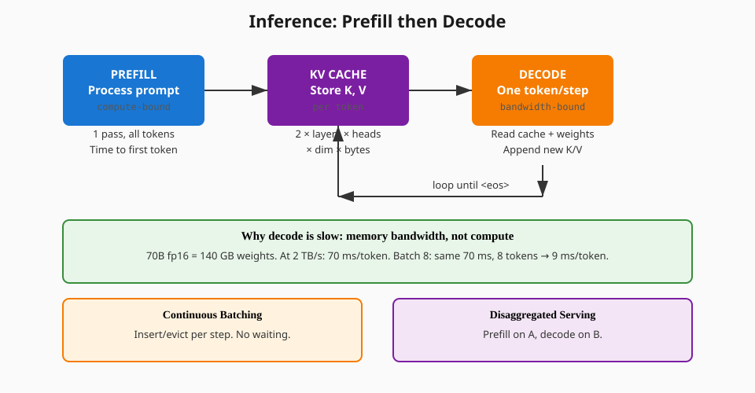
How to read this diagram
- 1. Prefill: Process the entire prompt at once. What it is: parallel forward pass. Why: compute-bound, fast. Output: KV cache + first token.
- 2. KV Cache: Stores keys and values for all prompt tokens. What it is: memory of the past. Why: decode would recompute otherwise.
- 3. Decode: One token per step. What it is: autoregressive generation. Why: bandwidth-bound (reads 140 GB weights per token). What breaks: batch 1 is 70 ms/token.
- 4. Continuous batching: Insert/evict requests per step. Why: no GPU idle time.
The rules
Generation is three steps, repeated:
- Sample a token from the logits.
- Append it to the sequence.
- Feed the whole sequence back in.
No planning ahead; the "foresight" is what the weights learned. The sampling layer is where behavior is tuned at decode time.
- Separate three temperatures. Softmax temperature rescales the distribution before sampling (T < 1 sharpens, T > 1 flattens); repetition penalty rescales logits after; the optimizer's temperature is a different physics object entirely. Same word, three meanings.
- Prefill is compute-bound; decode is bandwidth-bound. The prompt is one parallel matrix-matrix pass (time to first token). Decode loads all weights per token: each step's speed is set by memory bandwidth, not FLOPs. At 70B fp16, batch 1, the floor is ~140 GB / 2 TB/s = 70 ms/token, about 75 ms with kernel overhead (computed); at batch 8 the same load yields 8 tokens, so amortized cost is 9.4 ms/token.
- Every sampler setting is a contract. Temperature 0 does not mean "greedy" under fp16 noise or batched runs: treat temperature-0 determinism as a property to verify (fixed seed, fixed hardware batching), not an axiom. Logprobs (the per-token log-probabilities the serving API exposes) let you audit and rerank the distribution after the fact.
- Structured output is a constrained search problem. Grammar-constrained decoding (mask invalid tokens at each step) beats "prompt for JSON and hope." Two layers: syntactic validity (the decoder) and semantic correctness (the verifier). Never trust the syntax alone.
- Batch everything; decode is the bottleneck, so the batching policy is the product. Naive batching waits for the slowest sequence. Continuous batching (iteration-level scheduling: swap requests in and out at every step) is the single biggest serving throughput win: vLLM's reported +23x on LLaMA-13B over naive batching.
- The KV cache is the memory limiter, so serve it like virtual memory. PagedAttention: non-contiguous block allocation, ~96% utilization vs ~60% for contiguous, 2-4x more sequences per GPU. Prefix sharing across beams and requests; RadixAttention generalizes to tree-structured reuse. Fragmentation is not waste you can ignore: it is the batch size you did not get.
- The serving equation is linear; use it for every capacity question. total_memory ≥ weights + KV × batch × max_len + overhead. One unit mismatch (MB vs GB, tokens vs words) and the estimate is garbage. Chunked prefill (splitting a long prompt into chunks processed over several steps) + decode-maximal batching keeps the GPU fed when long prompts arrive.
- TTFT (time to first token) and TPOT (time per output token) are two different SLOs; optimize each separately. Queue-aware TTFT (queue delay + prefill compute); TPOT (bandwidth + batch contention). Disaggregated serving splits prefill and decode onto different instances to stop long prompts from stalling decodes: the reported wins are 7x at 90% TTFT and 1.7x goodput (useful tokens per second, excluding recomputed or wasted work). The KV cache then has to move between pools: that is the transfer problem the interconnect must solve.
Every optimization spends something.
Optimization Buys Spends Speculative decoding latency (Eagle: 2-3x at 160 tok/s, <1% quality loss, as reported) a second model + extra compute Quantization speed (INT4: 3.9x prefill, 3.5x decode, <1% degradation, as reported) quality you must measure Batching throughput latency Know which currency each trick spends, or you will buy latency with quality by accident.
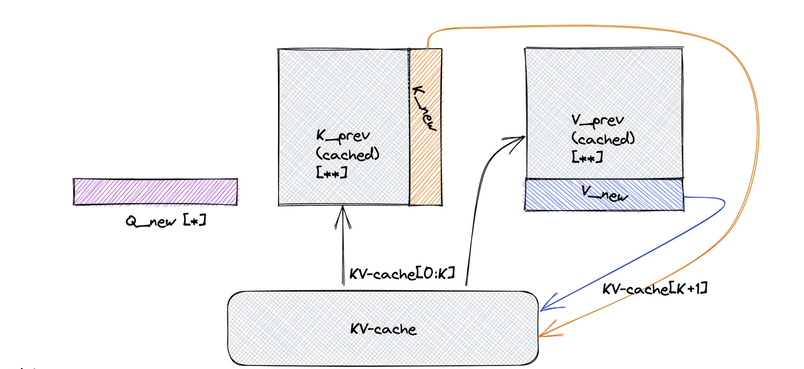
Trap 1: "The GPU runs at 2 PFLOPs, so tokens should be fast." FLOPs are not the constraint in decode. The step loads 140 GB of weights through ~2 TB/s of bandwidth: arithmetic says ~70 ms/token at batch 1 (about 75 ms with kernel overhead), no matter how many FLOPs the card has (the roofline again). Peak-FLOPs reasoning is the single most common wrong estimate in serving.
Trap 2: "Batch size is free throughput." Batch helps until the KV cache eats the memory, contention stretches TPOT, and long tails stall the batch. The optimum is a measured point on the batch-vs-latency curve, not "as large as fits."
Trap 3: "Temperature 0 gives deterministic output." Under fp16 noise and batched execution, "temperature 0" is not a guarantee. If determinism matters (regression tests, evals), fix the seed, fix the batching, and verify: sample the same prompt twice and diff.
Must-memorize numbers and formulas
| Number / formula | Value | What it means |
|---|---|---|
| Decode floor @70B fp16 | ~75 ms/token, batch 1 (computed) | 140 GB / 2 TB/s = 70 ms plus kernel overhead; the bandwidth law made concrete |
| Batch 8 amortization | 9.4 ms/token (computed) | Same load, 8 tokens: why batching is the product |
| KV cache per token (70B GQA-8) | 0.33 MB (computed) | 1.3 GB at 4k; 10.5 GB at batch 8 × 4k |
| H100 arithmetic intensity ridge (FLOPs per byte moved) | 591 FLOP/byte (fp8 dense) | Above it: compute-bound; below it: bandwidth-bound (as reported) |
| Decode step @7B bf16 | 21 ms (computed) | 14.5 GB / 700 GB/s; worked example |
| Continuous batching | up to +23x vs naive (as reported) | vLLM on LLaMA-13B: the iteration-level scheduling win |
| PagedAttention | ~96% vs ~60% memory utilization (as reported) | Non-contiguous blocks: 2-4x more sequences per GPU |
| Speculative decoding | 2-3x latency, <1% quality loss (as reported) | Draft-and-verify; acceptance is the physics |
| INT4 | 3.9x prefill, 3.5x decode, <1% degradation (as reported) | The quality-adjusted quantization win |
| Disaggregation | 7x at 90% TTFT, 1.7x goodput (as reported) | Splitting prefill from decode |
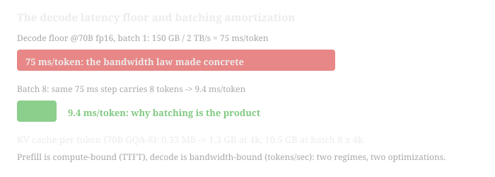
How to read this diagram
- \n
- The red bar is the decode floor: loading 140 GB at 2 TB/s takes ~70 ms per token (about 75 ms with kernel overhead). Bandwidth is the law here. \n
- The green bar is batching amortization: the same 75 ms step carries 8 tokens, so 9.4 ms per token. \n
- The two regimes: prefill is compute-bound (TTFT), decode is bandwidth-bound (tokens per second). Optimize each differently. \n
Rapid-fire Q&A
Rules in words, numbers in a table. Now check recall: work each question before revealing its answer.
Q1. Derive the 75 ms/token decode floor for a 70B fp16 model on a 2 TB/s GPU at batch 1.
A. 70B params × 2 bytes = 140 GB; each token loads the full weights once: 140 GB / 2 TB/s = 70 ms, plus overhead ≈ 75 ms (computed). This is a floor: no kernel optimization beats it, because it is set by bytes moved, not FLOPs B. 70B FLOPs / 2 PFLOPs = 35 ms C. It depends on the prompt length D. 150 ms from attention
Answer: A. Decode is bandwidth-bound: each step must stream all 140 GB of weights (70e9 × 2 bytes) through ~2e12 bytes/s of memory bandwidth. 140e9 / 2e12 = 0.07 s = 70 ms, and with kernel overhead the worked number is ~75 ms (computed). Attention FLOPs are irrelevant at batch 1: the roofline says bytes, not FLOPs. At batch 8 the same 75 ms produces 8 tokens (9.4 ms/token amortized): the batch is how you escape the floor.
Q2. The 7B bf16 decode step is 21 ms (computed). Derive it and state the batching implication.
A. 7B × 2 bytes = 14 GB weights; 14 GB / 700 GB/s = 20 ms + overhead ≈ 21 ms. Per-token latency is nearly flat until the batch grows large, so batching buys throughput for free until KV memory or TPOT contention binds B. 7B FLOPs at 1 PFLOPs = 7 ms C. 21 ms is the prefill time D. It means batching is useless
Answer: A. 14e9 bytes / 700e9 bytes/s = 0.02 s = 20 ms, plus overhead ≈ 21 ms (computed). The step cost is dominated by weight traffic, which barely grows with batch: batch 8 costs roughly the same 21 ms but yields 8 tokens. So batching is nearly free throughput until two walls arrive: KV cache memory (0.33 MB/token × length × batch for the 70B class, scaling linearly) and TPOT contention from mixed sequence lengths. The serving equation prices both.
Q3. Why does naive batching waste GPU time, and what exactly does continuous batching change?
A. Naive batching is fine B. Naive batching waits for the slowest sequence in the batch to finish before admitting new requests: GPUs idle while short requests wait. Continuous batching (iteration-level scheduling) inserts and evicts requests at every decode step, keeping the batch full; the reported win is up to 23x on LLaMA-13B vs naive batching C. It increases the batch size D. It reduces the model size
Answer: B. A batch of sequences with lengths 10 and 1,000 under naive batching holds the GPU hostage for 1,000 steps while admitting nothing new: the short request's latency includes 990 steps of someone else's decode. Continuous batching treats the batch as fluid: finished requests leave and queued requests enter at each iteration. The vLLM-reported +23x (as reported) is mostly this scheduling change, not kernels: policy beats arithmetic.
Q4. A deployment needs 128k context on the 70B-class model (0.33 MB/token cache). How much cache per sequence, and what breaks first?
A. 0.33 × 128k ≈ 43 GB per sequence; memory capacity breaks first: batch 2 already needs ~86 GB of cache plus 140 GB of weights, so the batch size collapses and throughput follows B. Cache is irrelevant at long context C. 0.33 × 128k = 42 MB; nothing breaks D. Attention FLOPs break first
Answer: A. 0.33 MB × 131,072 tokens ≈ 43 GB per sequence (computed; the volume's 32-layer example gives 64 GB at 0.5 MB/token: same linear law). The serving equation is linear in length: weights stay 140 GB, but cache per sequence now exceeds many GPUs' total memory. Batch size collapses to 1-2, KV transfer dominates in disaggregated setups, and TTFT explodes on the long prefill. Long context is a serving-cost problem before it is a quality problem: Vol 9's RAG exists largely because full-context brute force is unaffordable.
Q5. Speculative decoding gives 2-3x latency at <1% quality loss (Eagle, as reported). What is the acceptance physics, and when does it not pay?
A. The draft model guesses; the target verifies cheaply; accepted tokens are free. It fails to pay when the draft is weak (low acceptance: verification overhead with no accepted tokens) or when compute is the bottleneck rather than bandwidth (prefill-bound workloads) B. It always pays C. It reduces quality a lot D. It needs a bigger model
Answer: B. The draft model (small, fast) proposes k tokens; the target model verifies them in one parallel pass and accepts the longest matching prefix. Accepted tokens cost ~nothing extra (one target pass either way); rejected tokens waste the draft's work. So the win is a function of the acceptance rate: a well-matched draft-target pair (Eagle's learned head) accepts enough to get 2-3x; a weak draft accepts nothing and adds pure overhead. And it is a latency trick for bandwidth-bound decode: in compute-bound prefill it spends compute you do not have.
Q6. Derive when quantization pays: INT4 gives 3.9x prefill and 3.5x decode at <1% degradation (as reported). What two things must you check before shipping it?
A. Nothing; INT4 is always safe B. (1) Quality on YOUR eval suite, not the vendor's: <1% average degradation can hide a 10% collapse on your critical task (outliers, long-tail behaviors). (2) The arithmetic-intensity shift: INT4 halves the bytes, which moves the roofline ridge; if decode was bandwidth-bound it gets faster, but if your workload was already compute-bound the win is smaller than the headline C. Only the model size D. Only the license
Answer: B. Quantization trades precision for bytes: fewer bytes per weight means less traffic (decode speedup) and less capacity (bigger batches). But the degradation number is an average over someone else's suite: your long-tail behavior can collapse while the average stays <1%. And the speedup is regime-dependent: the H100's 591 FLOP/byte ridge (as reported) tells you whether your workload was bandwidth-bound (wins) or compute-bound (smaller win). Measure both on your workload before the headline becomes your SLO (service-level objective: the latency or availability target you promise).
Connections
- Vol 4 supplies the KV cache formula, GQA, and the prefill/decode split this volume operationalizes.
- Vol 6 supplies the collectives and memory-math mindset (the serving equation is its little sibling); MoE expert parallelism foreshadows the all-to-all serving of sparse models.
- Vol 7 supplies the rollout economics: this volume's batching and paging are what make RL loops affordable.
- Vol 9 inherits prefix caching and RadixAttention for agent rollouts, and the long-context cost analysis that motivates RAG.
- Vol 13 uses this volume for the inference chapters of every system design.
Volume 9: Agents and RAG
Why this comes next. Volume 8 serves a model that answers; it does not act. This volume answers what happens when the model gets tools, memory beyond the context window, and a loop: one loop, four failure families.
LLMs become systems when they act: tool use, multi-step loops, and memory beyond the context window. The core pattern is one loop (observe → think → act) plus four failure families.
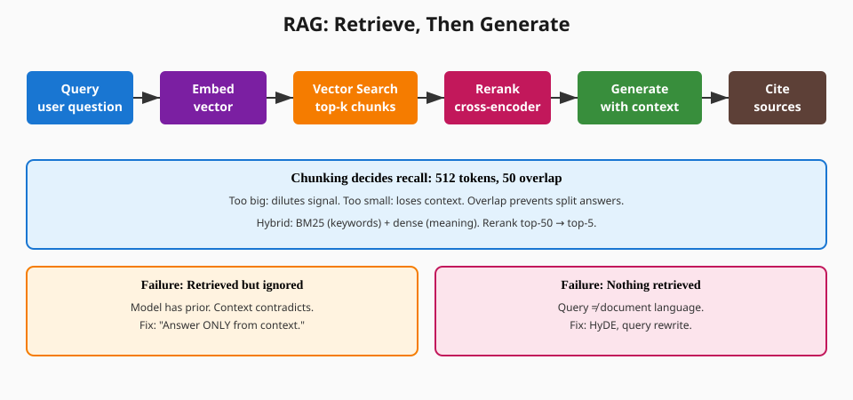
How to read this diagram
- 1. Embed: Query becomes a vector. What it is: semantic representation. Why: match meaning, not keywords.
- 2. Vector search: Find top-k similar chunks. What it is: nearest neighbors. Why: recall. What breaks: wrong chunk size.
- 3. Rerank: Cross-encoder scores top-50 → top-5. What it is: precise relevance. Why: vector search is approximate.
- 4. Generate: LLM answers using context. What it is: grounded generation. Why: reduce hallucination. What breaks: model ignores context.
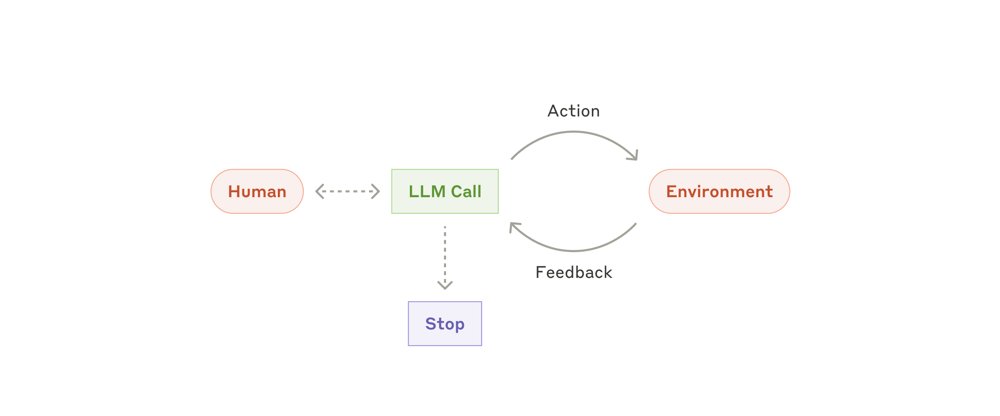
The rules
- An agent is a loop with tools, not a model with a prompt. The architecture: policy (the LLM), tools (typed functions with schemas), control loop (observe → think → act), state (conversation + scratchpad). ReAct (reason + act interleaved) beat act-only and reason-only on HotPotQA (as reported): the interleaving is load-bearing.
- Tool design beats prompt design. Precise names, JSON schemas, required vs optional parameters, idempotent writes, one job per tool. The model can only be as reliable as the interface it is given: most "agent failures" are tool-design failures.
- Constrain the loop or it loops forever. Max steps, cost budgets, explicit stop conditions, timeouts. An unbounded agent is a billing incident with extra steps.
- Retrieval is a pipeline, not a step. Parse (split documents into pieces) → chunk (group pieces into passable units) → embed (turn each chunk into a vector) → store (index the vectors) → retrieve (hybrid: dense vectors + BM25, the classic keyword score that ranks documents by exact term overlap weighted by term rarity) → rerank (re-score the top candidates with a stronger, slower model) → synthesize (generate the answer from the winners). Each stage has its own failure mode; debug the stage, not the pipeline. The hybrid finding: dense + BM25 with RRF (reciprocal rank fusion: combine the two ranked lists by summing 1/(rank + 60) per document) beats either alone on out-of-domain queries (as reported).
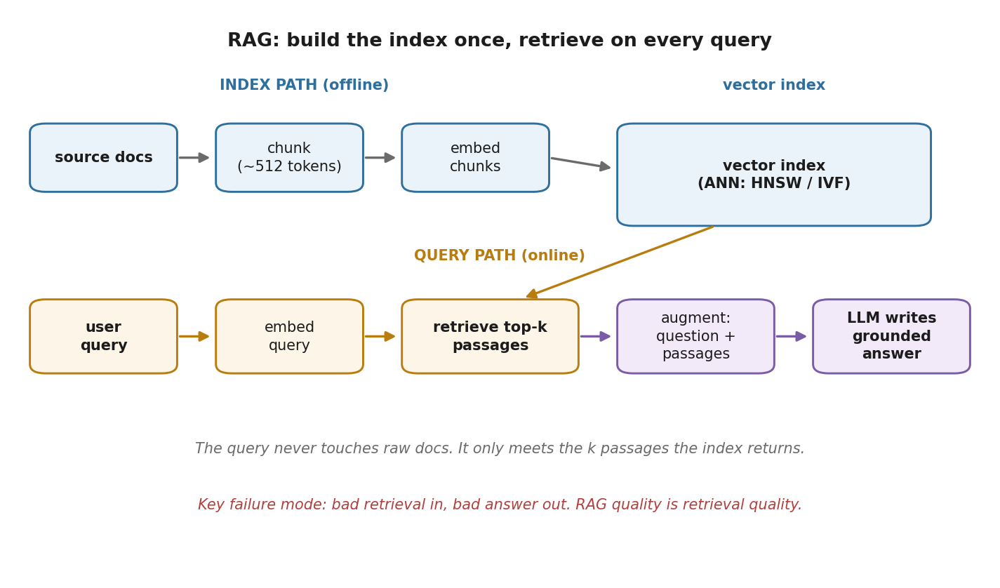
- Chunking decides what can ever be retrieved. 512-token chunks with 10-20% overlap are the default; boundaries must respect document structure; tables and code need special handling. Oversized chunks dilute the embedding; undersized chunks fragment context. The chunker is the first thing to suspect when retrieval fails.
- Reranking is the highest-ROI retrieval stage. A cross-encoder (a model that reads the query and each candidate passage together and scores their match, unlike the retriever which embeds them separately) over the top 50-100 candidates consistently adds ~10 points of recall (as reported). Skip it and you ship the retriever's draft as the final answer.
- Generation is where RAG dies or lives. Retrieved-but-ignored is the most common failure: the answer is in the context and the model does not use it. Mitigations: put the most relevant chunks first and last, instruct the model to cite, verify claims against the chunks. And the uncomfortable finding: strong long-context models sometimes beat RAG pipelines on accuracy, at higher cost (as reported).
- Eval with four families. Faithfulness (claims supported by the retrieved chunks), context precision/recall (the right chunks, in the right order), answer relevance, plus the negative set: what the system must refuse or deflect. RAGAS-style metrics (RAGAS: an open-source suite that scores retrieval faithfulness and answer relevance automatically) operationalize the checks; human spot-checks stay for the tail.
- Memory has three tiers. In-context (the working set), episodic (what happened: vector store of past interactions), semantic (what is true: knowledge graph or structured store). Summarize on overflow with information-loss budgets; retrieval from memory must itself be evaluated. Context engineering beats "just summarize": put the right things in the right places.
- The agent eval ladder. Unit (tool calls: precision/recall/F1 on schemas), integration (multi-step trajectories, judged against references), end-to-end (task success + cost + latency). The judge needs calibration (Vol 11's labeler protocols apply to LLM judges too); the failure taxonomy has six classes (tool selection, parameter, sequencing, recovery, grounding, termination).
- Cost is a design constraint. 614.4 GB for 100M × 1536-dim embeddings (computed): memory-map and quantize the index before buying RAM. Token cost per task compounds across the loop: each agent step is a full inference call, so a 10-step loop at 4k tokens/step is 40k tokens per task before retrieval.
- Ship the skeleton first. ReAct + 3 tools + file logs → harden loop and tools → add retrieval → add memory → add planning. The ordering matters: each layer assumes the previous one works.
Must-memorize numbers and formulas
| Number / formula | Value | What it means |
|---|---|---|
| RAG index math | 100M × 1536 × 4 bytes = 614.4 GB (computed) | The vector-store capacity line: mmap + quantize |
| ReAct | reasoning + acting beats either alone (as reported) | The interleaving is the architecture |
| Hybrid retrieval | dense + BM25 + RRF beats either alone (as reported) | Out-of-domain strength |
| Rerank gain | ~+10 recall points (as reported) | Cross-encoder over top 50-100: highest-ROI stage |
| Chunk default | 512 tokens, 10-20% overlap | The default to beat; respect structure |
| SWE-bench climb | ~2% → 71.7% with agents (as reported) | From direct prompting to tool-using loops |
| Tool budget | 10-50 tools retrievable (as reported) | Past that, retrieve tools like documents |
| Multi-agent tax | 2-3x tokens, 2-5x latency (as reported) | Coordination costs; one good agent first |
| Eval families | faithfulness, context precision/recall, answer relevance, negatives | The four checks every RAG eval needs |
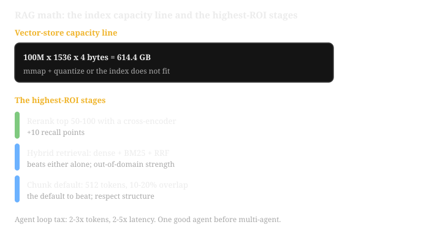
How to read this diagram
- \n
- The box is the index capacity line: 100M vectors times 1536 dims times 4 bytes is 614.4 GB. Mmap and quantize or it does not fit. \n
- The highest-ROI stages: rerank the top 50 to 100 with a cross-encoder (about +10 recall points), hybrid dense plus BM25 plus RRF, and 512-token chunks with 10 to 20% overlap. \n
- The agent loop tax: 2 to 3x tokens, 2 to 5x latency. One good agent before multi-agent. \n
Trap 1: "More context is always better than retrieval." Long context costs linearly in cache (Vol 8's math) and degrades in the middle ("lost in the middle"); RAG costs sublinearly but fails at retrieval. The right answer is workload-dependent: measure both on your queries, with cost attached.
Trap 2: "The agent failed, so the model is not smart enough." The six failure classes say otherwise: check tool selection, parameters, sequencing, recovery, grounding, termination before blaming the model. Most production agent failures are tool-design and loop-design failures.
Trap 3: "Embeddings understand meaning, so retrieval is solved." Embeddings measure distributional similarity, not truth, not relevance-to-your-task, not recency. The reranker, the chunker, and the eval set do the actual work; the embedding model is one component.
Rapid-fire Q&A
Rules in words, numbers in a table. Now check recall: work each question before revealing its answer.
Q1. Derive the 614.4 GB index number and state the two mitigations.
A. 100M vectors × 1536 dims × 4 bytes = 614.4 GB (computed). Mitigations: memory-map the index (OS pages it; RAM holds the hot set) and quantize embeddings (int8 halves it; product quantization goes further) at a small recall cost you measure B. It is the model size C. 614 GB is fine on one GPU D. Use fewer dimensions only
Answer: A. 1e8 × 1536 × 4 = 6.144e11 bytes = 614.4 GB (computed). This does not fit in RAM comfortably, let alone GPU memory: so the index lives on disk with mmap (the OS pages in what is hot) and the vectors get quantized (int8: 307 GB; PQ: far less) at a measured recall cost. The capacity line decides the storage architecture before any retrieval tuning happens.
Q2. Retrieval returns the right chunk but the answer ignores it. Name the failure, its family, and two mitigations.
A. Retrieved-but-ignored; generation family. Mitigations: order chunks by relevance (first and last positions get the most attention) and require citations (forces the model to ground each claim in a chunk, making skips visible) B. Hallucination; nothing helps C. Chunking failure; re-chunk D. Embedding failure; new model
Answer: B. This is the most common RAG failure and it lives in the generation stage, not retrieval: the retriever did its job. The model attends most to the start and end of long contexts, so burying the key chunk in the middle is a design error. Citation requirements turn grounding into a checkable artifact: every claim must point at a chunk, and an unsupported claim is a visible failure rather than a silent one.
Q3. When does a strong long-context model beat a RAG pipeline, and when does RAG win?
A. Always RAG B. Long context wins on accuracy when the full corpus fits and cost is no object (no retrieval failure mode, the model sees everything); RAG wins on cost (sublinear vs linear cache math), freshness (update the index, not the weights), and scale beyond any context window. The uncomfortable finding stands: measure both with cost attached C. Long context always wins D. They are identical
Answer: B. It is a three-way tradeoff: accuracy (long context avoids the retrieval failure mode entirely), cost (Vol 8: cache grows linearly with length; RAG retrieves a fixed k), and freshness (RAG updates are index writes; long-context updates are retraining). The volume's uncomfortable finding is that on accuracy alone, strong long-context models sometimes beat RAG pipelines (as reported): RAG's case is cost and freshness, not raw accuracy. Anyone who tells you one always wins is selling something.
Q4. Your agent loops: same tool call, same result, 40 steps. Which failure class, and what are the two fixes (design + guardrail)?
A. Termination failure. Design fix: the loop needs progress detection (track state changes; repeated identical tool calls with identical results = no progress, break out and replan). Guardrail: max steps + cost budget + explicit stop conditions, enforced outside the model B. Model failure; bigger model C. Tool failure; delete the tool D. Prompt failure; longer prompt
Answer: A. In the six-class taxonomy this is a termination/recovery failure: the agent cannot detect that it is stuck. The design fix is progress tracking in the loop (diff consecutive states; no state change across N steps triggers replanning or escalation). The guardrail is external: max steps, token/cost budgets, timeouts, enforced by the harness, not requested of the model. An unbounded agent is a billing incident: the constraint belongs in code, not in the prompt.
Q5. Derive the multi-agent tax: why do 3 agents cost 2-3x the tokens and 2-5x the latency of one?
A. They are smarter B. Tokens: every agent re-reads shared context (the task, the conversation) plus coordination messages between agents: context is duplicated N ways and messages add overhead. Latency: agents often run sequentially (critic waits for actor) or synchronize, so wall clock multiplies. The reported ranges (as reported) say: prove one good agent first, then pay the tax only for a measured win C. More agents are always better D. The tax is zero with good prompts
Answer: B. Each agent's prompt carries the shared context (task description, conversation history, tool schemas): with 3 agents that context is processed ~3 times. Coordination messages (actor → critic → actor) add tokens and, worse, sequential dependencies: the critic cannot start until the actor finishes, so latency compounds. The 2-3x token / 2-5x latency ranges (as reported) are why the volume's rule is "one good agent first": multi-agent is an optimization you buy with a measured quality delta, not a default.
Q6. Tool budget: 10-50 tools retrievable (as reported). What happens past that, and what is the fix?
A. The model gets smarter B. Every tool's schema sits in every prompt: context fills with tool definitions, the model confuses similar tools (selection errors rise), and cost per step climbs. Fix: retrieve tools like documents (embed the task, fetch the top-k relevant tools) or route through sub-agents with narrow toolsets C. Nothing; add more tools D. Tools are free
Answer: B. Tool schemas are prompt tokens: 200 tools × ~200 tokens of schema = 40k tokens of tools before the task starts. Beyond the cost, selection accuracy degrades: similar tools blur together and the model picks the wrong one (the taxonomy's tool-selection class). The fix mirrors retrieval: a tool retriever (embed the query, return top-k tools) or hierarchical agents with narrow toolsets. The interface is part of the context budget: spend it deliberately.
Connections
- Vol 2 supplies the eval discipline the agent ladder inherits: staged evals, uncertainty, failure taxonomies.
- Vol 7 supplies verifiers (RLVR instinct) reused for agent evals, and the rollout economics (each agent step is a bandwidth-bound decode).
- Vol 8 supplies prefix caching and RadixAttention (agent rollouts share prefixes) and the long-context cost analysis that positions RAG.
- Vol 11 supplies judge calibration: LLM judges need the same agreement measurement as human labelers.
- Vol 13 uses agents and RAG as system-design components (the support-agent design, the retrieval service).
Volume 10: MLOps and Production
Why this comes next. Volume 9 builds systems; models rot in production. This volume answers the operating question: how you keep a deployed model alive. Versioning, CI/CD for ML, monitoring, and the incident playbook.
Models rot in production. This volume is the operating system that keeps them alive: the lifecycle, data and model versioning, CI/CD (continuous integration / continuous delivery: every change is automatically tested and kept releasable) for ML, monitoring, and the incident playbook.
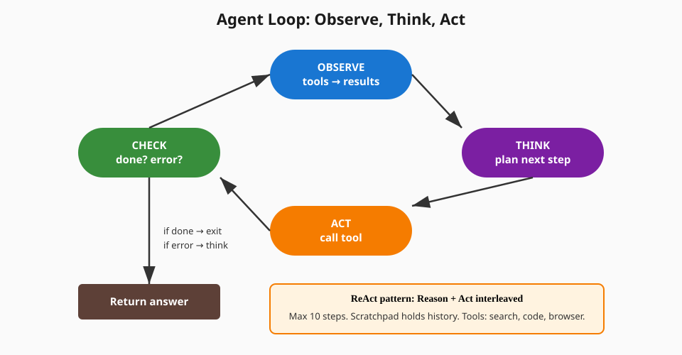
How to read this diagram
- 1. Observe: Read tool results. What it is: perceive the environment. Why: ground the next decision in facts.
- 2. Think: Plan the next action. What it is: reasoning. Why: avoid random tool calls. What breaks: infinite loops without max steps.
- 3. Act: Call a tool (search, code, browser). What it is: affect the environment. Why: gather info or make changes.
- 4. Check: Done? Error? What it is: termination condition. Why: prevent runaway. If done: return. If error: think again.
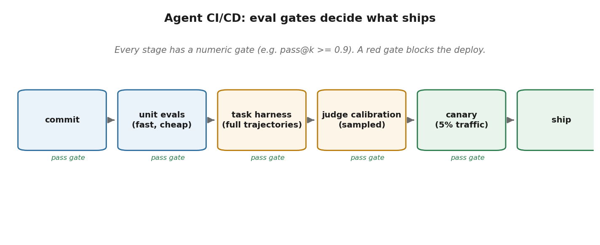
The rules
- Your model is not your product; your pipeline is. The product is the pipeline that rebuilds, revalidates, and redeploys the model. Rebuild the exact production model from versioned code + data + config, or you do not have a product: you have an artifact.
- Data has versions; models have lineages. Version datasets immutably (content hashes, not folder names); track every model's parent dataset, code commit, hyperparameters, and metrics in a registry. Without lineage, "which data trained the model that is failing" is unanswerable.
- Silent failures are the enemy. Models do not crash; they degrade. Monitor inputs (schema, distributions), outputs (prediction drift, confidence), and business metrics (conversion, cost per prediction), with statistical teeth: PSI (Population Stability Index: a single number measuring how far a live distribution has drifted from the reference distribution) > 0.25 is a significant shift (as reported), and sequential tests (SPRT: Sequential Probability Ratio Test, which evaluates data as it arrives and stops as soon as the evidence is strong enough) catch drift faster than fixed windows.
- Retraining is a decision with a price. Scheduled (calendar), performance-triggered (metric breaches), drift-triggered (input shift), on-demand (incidents). Full retraining is expensive: weigh it against fine-tuning, recalibration, or rule patches. Most "the model got worse" incidents are data pipeline incidents wearing a model costume.
- Canary everything. Shadow mode (predict, do not serve) → canary (1-5% traffic) → gradual rollout. A champion/challenger setup makes the comparison continuous. Rollback is a button, not a project.
Reproducibility is a ladder:
- Rung 1: same code + data + seed = same model (deterministic ops, recorded seeds).
- Rung 2: same pipeline = same metrics within tolerance.
- Rung 3: same business outcome.
Each rung costs more; know which rung your decision needs.
- CI for ML tests three things. Data tests (schema, nulls, ranges, drift vs baseline), model tests (metrics above floor, no NaN, latency budget, serialization round-trip), integration tests (the serving path end to end). A model that passes metric tests but fails the latency budget is a failed build.
- Feature stores exist to kill training-serving skew. One definition, one computation, two latencies (offline batch, online low-latency). Point-in-time correctness is the hard part: features must be the values known at event time, not the values known now, or leakage silently inflates every backtest.
- Scale serving with the boring math. Latency budget → batch sizing → replica count → autoscaling on queue depth and GPU utilization, not CPU. Cold starts, model load time, and warmup are part of the SLO.
Incidents follow the playbook:
- Detect: alerts on the three layers.
- Triage: data, model, or infra?
- Mitigate: rollback first, investigate second.
- Root-cause: five whys on the pipeline, not the weights.
- Harden: the monitor that would have caught it, the test that would have blocked it.
Trap 1: "Our offline metrics are great, so production is fine." Offline metrics measure the model on yesterday's data. Production measures the pipeline on today's data. Training-serving skew, drift, and feedback loops live in the gap between those two sentences.
Trap 2: "We retrain weekly, so drift is handled." Scheduled retraining re-learns the current data distribution, but it also re-learns current data bugs: a broken upstream feature gets baked into the new model automatically. Retraining without data validation is a bug-amplification machine.
Trap 3: "Monitoring model accuracy in production." You almost never have production labels fast enough to compute accuracy. You monitor proxies: input drift, prediction drift, confidence, business metrics. Design the proxies deliberately; do not pretend you have labels you do not.
Must-memorize numbers and formulas
| Number / formula | Value | What it means |
|---|---|---|
| PSI > 0.25 | Significant distribution shift (as reported) | The statistical tripwire for input drift |
| Canary | 1-5% traffic | The rollout unit; shadow mode before it |
| Reproducibility ladder | code+data+seed → metrics → business outcome | Three rungs, rising cost; pick the rung the decision needs |
| Retraining triggers | scheduled, performance, drift, on-demand | Four triggers; each with a different price |
| Feature correctness | point-in-time | The hard part of feature stores; leakage inflates backtests |
| Rollback | a button, not a project | The deploy requirement that matters most |
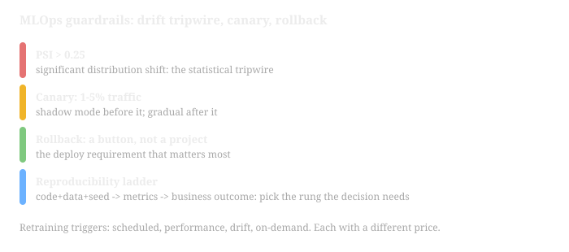
How to read this diagram
- \n
- PSI above 0.25 is significant shift: the statistical tripwire for input drift. \n
- Rollout is shadow, then 1 to 5% canary, then gradual. Rollback must be a button, not a project. \n
- The ladder is the reproducibility decision: code plus data plus seed, then metrics, then business outcome. Pick the rung the decision needs. \n
Rapid-fire Q&A
Rules in words, numbers in a table. Now check recall: work each question before revealing its answer.
Q1. Production accuracy fell 5% with no model change. Walk the triage in order.
A. Retrain immediately B. Data first: check input schema and distributions (PSI on features), then upstream pipeline health (a broken feature join explains most "model got worse" incidents), then prediction drift vs input drift (drifted inputs → data problem; same inputs, shifted predictions → model/infra problem), then business-metric correlation. Roll back the data pipeline before touching the model C. Blame the users D. Increase monitoring
Answer: B. "No model change" means the model is innocent until proven guilty: the suspects are the data and the pipe. PSI > 0.25 on a feature names the drifted input; an upstream join failure names the broken pipe. The prediction-vs-input drift comparison separates "the world changed" from "the model changed": identical inputs producing shifted predictions points at infra (a swapped model artifact, a precision change). Retraining first bakes the current data bug into the new model: triage before treatment.
Q2. Why is point-in-time correctness the hard part of feature stores? Give the failure.
A. It is not hard B. Training rows must carry the feature values known at event time. Using current values leaks the future: a feature like "days since last login" computed today for a row from last month contains information the model will not have at serving time. Every backtest then overstates performance, and the production model underperforms the validated one. The feature store's job is one definition computed two ways (offline batch, online serving) with event-time joins C. Joins are slow D. Storage is expensive
Answer: B. The failure is temporal leakage: backfill with today's values and the model trains on information from the future. Offline metrics look great; production degrades on day one. Point-in-time joins (as-of joins on event timestamps) are the mechanism, and they are the hard part because every upstream table needs event-time semantics. One definition, two serving paths, zero leakage: that is the contract.
Q3. Design the canary for a new ranking model. What are the stages and the rollback condition?
A. Ship to 100% and watch B. Shadow (predict on live traffic, serve nothing; compare predictions vs champion offline) → canary 1-5% (serve; watch business metrics and prediction drift with statistical tests, not eyeballing) → gradual rollout. Rollback condition: pre-registered metric breaches (conversion, latency, error rate) with a decision rule written before the canary starts; rollback is a button C. A/B test for a year D. No canary needed for ML
Answer: B. Shadow mode de-risks without user impact: prediction diffs vs the champion surface behavioral changes. The canary serves real traffic at 1-5%: small enough to bound damage, large enough for statistical signal. The rollback condition must be pre-registered (which metrics, which thresholds, who decides) because writing it during the incident is how incidents get worse. Champion/challenger keeps the comparison running after full rollout.
Q4. Your retraining pipeline "succeeds" but each new model is slightly worse. Name two mechanisms.
A. Bad luck B. (1) Data bug amplification: the pipeline re-learns a broken upstream feature each cycle, baking the bug deeper. (2) Feedback loops: the model's own predictions influence future training data (users click what is shown; shown items get labels), so the model trains on its own outputs and the distribution narrows. Both are caught by data validation gates and by monitoring the input distribution, not the model metrics C. The optimizer is wrong D. More data is needed
Answer: B. Scheduled retraining without data validation is a bug-amplification machine: whatever the upstream broke this week becomes next week's ground truth. Feedback loops are subtler: the model's predictions shape user behavior, which shapes the labels, which train the next model: the rich get richer and the tail disappears. Both mechanisms are invisible to model-metric monitoring (the metrics look fine: they are measured on the corrupted distribution). The defense is data validation gates before training and input-distribution monitoring in production.
Q5. What does the reproducibility ladder buy you at each rung, and which rung does a rollback decision need?
A. All rungs are the same B. Rung 1 (same code+data+seed → same model) buys debuggability: you can reproduce the exact artifact. Rung 2 (same pipeline → same metrics within tolerance) buys comparability: experiments mean something. Rung 3 (same business outcome) buys trust: the deployment decision. A rollback decision needs rung 1 at minimum (rebuild the exact previous artifact) and rung 2 to know the replacement is actually better C. Only rung 3 matters D. Seeds do not matter
Answer: B. Each rung answers a different question: "can I rebuild it" (rung 1), "can I compare experiments" (rung 2), "can I trust the deployment" (rung 3). Rollback needs rung 1 (the previous artifact must be rebuildable exactly: versioned code, data, config, seed) and rung 2 (the decision to roll forward again needs comparable metrics). Teams that skip rung 1 discover during the incident that "the previous model" is a file nobody can reproduce.
Q6. Autoscaling on CPU utilization for a GPU inference service: what breaks?
A. Nothing; CPU is fine B. GPU inference services saturate GPU memory and compute while CPU idles: CPU-based autoscaling sees a "healthy" service at 20% CPU while the GPU queue explodes and latency breaches SLO. Scale on queue depth (pending requests), GPU utilization, and latency percentiles: the signals that actually saturate. Plus cold-start math: model load time means new replicas are not instant, so scale ahead of the curve, not behind it C. GPUs do not need scaling D. CPU is cheaper to monitor
Answer: B. The autoscaler must watch the bottleneck resource. For GPU serving that is GPU memory (KV cache), SM utilization, and queue depth: CPU sits near idle while requests pile up. Scaling on CPU under-provisions exactly when load spikes. And replicas are not instant: loading a 140 GB model takes minutes, so the policy needs headroom and predictive scaling, not reactive scaling on a lagging signal.
Connections
- Vol 2 supplies the measurement discipline: the three monitoring layers are its staged evals in production clothes.
- Vol 5 supplies the training pipeline this volume wraps: versioning, retraining triggers, and the data bugs that outnumber model bugs.
- Vol 8 supplies the serving math the scaling rules use (batch sizing, latency budgets, replica counts).
- Vol 11 supplies the incident postmortem format and the statistical tests (PSI, SPRT) used as tripwires.
- Vol 13 treats the whole volume as the production-readiness checklist inside every system design.
Volume 11: Research Methods
Why this comes next. Volume 10 keeps models alive; it does not tell you how to know things reliably. This volume answers how you run an experiment that convinces a skeptic: ablations, statistics, human evaluation, and writing it so others can build on it.
How to know things reliably: experiments, ablations, statistics, human evaluation, and writing it so others can build on it. This is the volume that separates researchers from model operators.
The rules
- Ablations answer "is this component necessary," not "is this component good." Remove or replace one component, keep everything else fixed, measure the delta. A positive ablation (component helps) and a negative result (component does not matter) are both publishable information. Change two things and you have an anecdote.
- Controls are what make an experiment an experiment. Baseline (the simplest thing that could work), oracle (the ceiling: what perfect information would give), and random (the floor). A result without a baseline is a number without a meaning.
- Uncertainty is part of the result. Report seeds, variance, and confidence intervals: a 0.5% gain with ±1% error bars is noise wearing a lab coat. Three seeds minimum for anything you claim; more when the variance is high. Statistical significance is not practical significance: ask whether the delta matters, not just whether it is nonzero.
- Human eval is a measurement instrument: calibrate it. Inter-annotator agreement (kappa 0.6-0.8 is healthy, as reported) tells you the instrument's precision. Triple 88%-accurate labelers with majority vote reach 96% (computed): redundancy buys reliability. Write guidelines, pilot them, measure drift, adjudicate disagreements: the protocol in Vol 7's preference data applies everywhere humans judge.
- LLM judges need the same calibration as humans. Measure judge-vs-human agreement before trusting the judge; judges have biases (verbosity, position, self-preference) that must be characterized, not assumed away. A judge you have not calibrated is a random number generator with good marketing.
- Decontamination is non-negotiable. Re-check every new data mix against every eval you will report; a single leaked benchmark invalidates the headline. Report the decontamination method, not just the claim.
- Negative results are results. The experiment that kills your hypothesis saves the field months. Write it up: what was tried, why it should have worked, what the numbers said, what that implies. The file drawer is where science goes to die quietly.
- Reproduce before you extend. Reimplement the baseline, match the reported numbers within tolerance, then build. Skipping this step means building on a number you never verified: the most expensive way to discover a bug is six months into the follow-up.
- Write for the rebuilder. Methods sections that omit the details that matter (seeds, data versions, exact prompts, hyperparameters, compute) are not science communication: they are advertising. The test: could a competent stranger rebuild it from your paper alone?
- The paper is the interface. Title (the claim), abstract (the 30-second version), introduction (why anyone should care), method (the rebuilder's guide), experiments (ablations + controls + uncertainty), related work (honest positioning), conclusion (what is now known). Reviewers read for: novelty, correctness, significance, clarity: in that order.
Trap 1: "Our method beats the baseline by 0.3%." With what variance? On how many seeds? Is the baseline tuned or a strawman? A 0.3% delta inside ±1% error bars against an untuned baseline is three kinds of nothing. Report the bars, tune the baseline, then talk.
Trap 2: "Human eval shows our outputs are better." Measured how? How many annotators, what agreement, what guidelines, what adjudication? An uncalibrated human eval is an anecdote with a spreadsheet. The instrument needs its own results section.
Trap 3: "We will ablate later." No. The ablation is the experiment: without it you have a system that works (maybe) and no knowledge about why. "Later" means never, and "never" means the paper's claim rests on correlation.
Must-memorize numbers and formulas
| Number / formula | Value | What it means |
|---|---|---|
| Seeds | 3 minimum | The floor for any claimed delta |
| Kappa | 0.6-0.8 healthy | Inter-annotator agreement: the instrument's precision |
| Triple labelers | 88% each → 96% majority (computed) | Redundancy buys reliability: the math |
| Decontamination | every mix vs every eval | The non-negotiable check |
| Controls | baseline, oracle, random | Floor, meaning, ceiling |
| Ablation rule | one component at a time | "Necessary," not "good" |
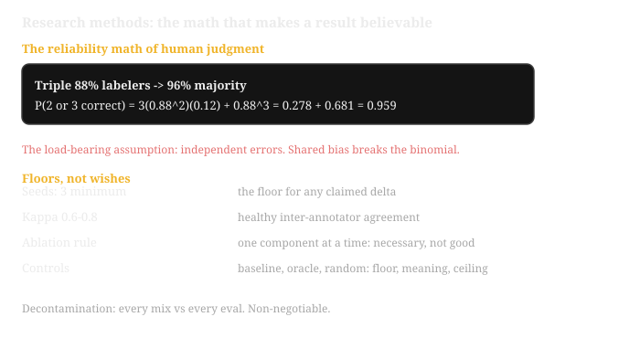
How to read this diagram
- \n
- The box is the majority-vote math: P(2 or 3 correct) = 3(0.88^2)(0.12) + 0.88^3 = 0.959. \n
- The load-bearing assumption is independent errors. If labelers share a bias, the majority inherits it. \n
- The floors: 3 seeds minimum, kappa 0.6 to 0.8, one component per ablation, baseline/oracle/random controls, decontamination of every mix against every eval. \n
Rapid-fire Q&A
Rules in words, numbers in a table. Now check recall: work each question before revealing its answer.
Q1. Derive the 96%: three labelers, each 88% accurate, majority vote. What is the majority accuracy, and what assumption does it need?
A. 96%: P(2 or 3 correct) = 3(0.88²)(0.12) + 0.88³ = 0.278 + 0.681 = 0.959 (computed). Needs independent errors: if labelers share a bias (same guideline misreading), the majority inherits it and the math overstates reliability B. 88%; no assumption C. 100%; labelers are perfect together D. 92%; approximate
Answer: A. Binomial: exactly 2 correct: 3 × 0.88² × 0.12 = 0.278; all 3: 0.88³ = 0.681; total ≈ 0.959 ≈ 96% (computed). The independence assumption is the load-bearing one: correlated errors (shared guideline ambiguity, same difficult examples) break the binomial math, and the real majority accuracy is lower. This is why adjudication and guideline piloting matter: they attack the correlation, not just the individual accuracy.
Q2. Your ablation removes components A and B together and performance drops 5%. What do you know?
A. A and B are both necessary B. Almost nothing: the drop could be all A, all B, or the interaction. Ablations change one component at a time: remove A alone, remove B alone, then both. The three numbers separate main effects from interactions; the single combined number is an anecdote C. The system is broken D. 5% is noise
Answer: B. One equation, two unknowns (plus the interaction term): the combined ablation cannot attribute the drop. The full design is four runs: full system, minus A, minus B, minus both. The minus-both run beyond the sum of the individual drops measures the interaction: components that compensate for each other. "Ablate later" and multi-component ablations are how papers claim necessity they never measured.
Q3. Baseline 80.0% ± 1.2, your method 80.6% ± 1.1, three seeds each. Can you claim a win?
A. Yes: 80.6 > 80.0 B. No: the 0.6% delta sits inside the error bars (±1.1-1.2): the intervals overlap substantially, so the difference is consistent with noise. Claim nothing; run more seeds, tune the baseline harder, or find a bigger effect. Statistical significance is not practical significance anyway: even a real 0.6% needs a "does it matter" argument C. Yes with more decimals D. Run one more seed and claim it
Answer: B. Overlapping error bars mean the data cannot distinguish the methods: the honest report is "no measurable difference." Three seeds is the floor, not a guarantee: high-variance benchmarks need more. And the second question stands even if the delta were significant: a real but tiny gain needs a practical-significance story (cost, latency, simplicity) or it is trivia. Report the bars; let the reader see the overlap.
Q4. Design the human-eval protocol for comparing two summarizers. What are the non-negotiable elements?
A. Ask friends which is better B. Written guidelines with examples (pilot on 50 items, revise), 3+ annotators per item, blinded presentation (order randomized), inter-annotator agreement reported (kappa; 0.6-0.8 healthy), adjudication process for disagreements, annotator drift checks mid-study. The eval's own reliability is reported alongside the result: the instrument gets a results section C. One annotator is enough D. Majority vote fixes everything
Answer: B. Every element attacks a specific failure: guidelines + pilot kill ambiguity; blinding + randomization kill order and brand bias; kappa measures the instrument; adjudication resolves genuine disagreement (not noise); drift checks catch annotators changing standards mid-study. Majority vote without agreement measurement is faith-based: the 96% math (Q1) needs the independence assumption, which only protocol discipline approximates.
Q5. Your LLM judge prefers your method's outputs. Name three judge biases and how to check each.
A. Judges are unbiased B. Verbosity bias (longer answers score higher: check by length-controlled comparison), position bias (first-presented wins: check by swapping order), self-preference (the judge's own model family wins: check with a judge from a different family). The master check: measure judge-vs-human agreement on a sample before trusting any judge verdict at scale C. Only verbosity matters D. Biases cannot be checked
Answer: B. Each bias has a diagnostic: length-controlled pairs for verbosity, order swapping for position, cross-family judges for self-preference. But the load-bearing check is calibration against humans: on a few hundred items, does the judge agree with calibrated human annotators (kappa-style)? An uncalibrated judge is a random number generator with good marketing: fast, cheap, and wrong in ways you cannot see.
Q6. You find your training data contains 2% of a benchmark's test set. What is the correct response?
A. Report the number anyway; 2% is small B. Remove the contaminated items, re-run the eval, and report both numbers (contaminated and clean) with the decontamination method. A leaked benchmark invalidates the headline: the model may have memorized the answers. "Small" contamination is not safe: 2% of a test set can swing a close comparison, and the undisclosed kind destroys trust when found C. Delete the benchmark D. Keep it secret
Answer: B. Decontamination is non-negotiable and it is reported, not assumed: the method (n-gram overlap, embedding match, exact match) and the before/after numbers. Reporting both is the honest move: it shows the result stands without the leak. The deeper rule from Vol 5: re-check every new data mix against every eval you will report, because contamination compounds silently across data versions.
Connections
- Vol 2 is this volume applied early: staged evals, uncertainty, and failure taxonomies are research methods in miniature.
- Vol 7 inherits labeler protocols (preference data), judge calibration (reward models), and the eval-driven loop.
- Vol 9 inherits judge calibration for agent evals and the failure taxonomy as an experiment-design tool.
- Vol 10 inherits the statistical tripwires (PSI, SPRT) and the postmortem format.
- Vol 12 is where the methods meet the papers: read each paper's experiments with this volume's checklist in hand.
Volume 12: The Paper Spine
Why this comes next. Volume 11 gave you the lens; now point it at history. This volume answers which ideas actually moved the field, in the order they happened. Each paper assumes the previous one's world, and you read each with Volume 11's checklist in hand.
Fourteen papers, each condensed to the one idea that changed the field, the mechanism, and the number to remember. Read in this order: each paper assumes the previous one's world.
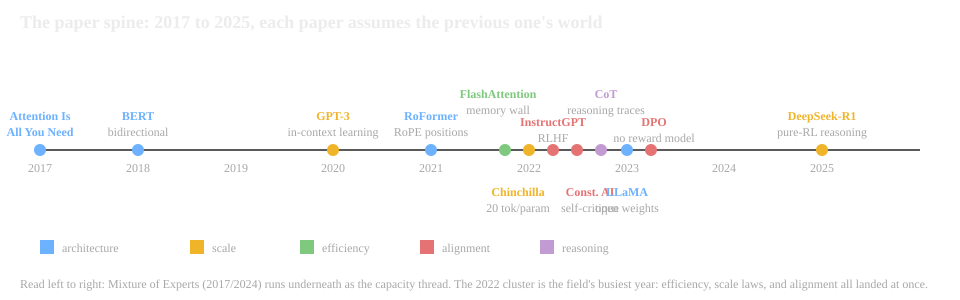
The rules
- Read for the mechanism, not the moral. Every paper here has one load-bearing idea. Extract it, write the mechanism in your own words, reproduce the key number. The rest is scaffolding.
- Attention Is All You Need (2017): attention alone is enough. No recurrence, no convolution: multi-head self-attention plus position encodings, 6 layers, 28.4 BLEU on EN-DE (BLEU: a score measuring n-gram overlap between the generated and reference translations, as reported). The mechanism: parallelizable weighted mixing with O(1) path length between any two positions. What it killed: the sequential bottleneck of RNNs.
BERT (2018): bidirectionality via masking. Mask 15% of tokens, predict them with full context both ways; add next-sentence prediction. The mechanism: the [MASK] objective lets every position attend to every other position.
What it started: the pre-train then fine-tune era. Know its limit: not generative (Vol 4 explains why causal masking owns generation).
- GPT-3 (2020): scale plus in-context learning. 175B params, 300B tokens, 3.15e23 FLOPs (computed): few-shot prompting works without gradient updates. The mechanism is not fully understood (induction heads, attention heads that complete patterns like [A][B]…[A] → [B], are part of the story): the honest position is "the capability emerged; the mechanism is partial." What it started: prompting as programming.
- RoFormer (2021): positions by rotation. RoPE rotates Q/K pairs by position-proportional angles; scores depend on relative distance by the rotation identity (Vol 4 derives it). The mechanism replaced absolute position embeddings across the industry. The number: the 10000^(−2i/d) theta schedule.
- FlashAttention (2022): the memory wall was the problem. Tiling + recomputation + online softmax: bit-identical attention with up to 20x smaller memory footprint (as reported). The mechanism: never materialize the N² matrix (Vol 4's 67 MB becomes a non-issue). What it made possible: long context and the memory-efficient attention family (FlashAttention-2/3, Vol 15's kernels).
Chinchilla (2022): the scaling correction. 70B on 1.4T beats 280B on 300B at equal FLOPs (as reported): ~20 tokens per parameter. The mechanism: equal scaling of N and D (Vol 5 derives the 91B/1.8T budget).
What it killed: the "bigger model, same data" era. The caveat: it optimizes training compute, not lifetime cost.
- InstructGPT (2022): alignment beats scale. SFT + reward model + PPO: 1.3B preferred over 175B GPT-3 (as reported). The mechanism: the three-stage RLHF pipeline (Vol 7 derives each stage). What it started: the post-training era and the assistant paradigm.
- Constitutional AI (2022): supervision from principles. The model critiques and revises its own outputs against a written constitution; the revision pairs train the preference model. The mechanism: AI feedback replaces most human labels. What it started: scalable oversight and the RLAIF family.
- LLaMA (2023): the open-weights shockwave. Efficient architecture (RMSNorm, SwiGLU, RoPE, GQA in v2), overtrained past Chinchilla on purpose (Vol 5's right branch). The mechanism is mostly careful engineering, not novelty: the lesson is that execution quality compounds. What it started: the open ecosystem and the entire fine-tuning industry (Vol 7's LoRA ladder).
DPO (2023): the reward model, solved out. Same KL-regularized objective as RLHF; closed-form optimum π* ∝ π_ref·exp(r/β); one classification loss (Vol 7 derives it, worked 0.6503). The mechanism: algebra replaces the RL loop.
What it changed: preference tuning became a supervised problem. The caveat: same objective means the same reward-hacking exposure.
Mixture of Experts (2017/2024): capacity without compute. Sparsely-gated MoE: route each token to top-k experts; total params grow, active params stay flat. The mechanism: conditional computation (Vol 15's kernels, Vol 8's expert-parallel serving). The number to remember: 8 experts, top-2 routing in the classic design.
The costs: routing imbalance, all-to-all communication, memory for all experts.
- Chain-of-Thought (2022): reasoning as a trace. Prompting the model to write intermediate steps makes multi-step reasoning possible; the mechanism is partly that the trace gives the model more compute per answer (each token is a sequential step). What it started: the reasoning era, test-time compute, and eventually RLVR (Vol 7).
DeepSeek-R1 (2025): reasoning from pure RL. No SFT: verifiable rewards on math/code amplify latent reasoning traces into reliable long chain-of-thought (Vol 7's amplification argument). The mechanism: GRPO over grouped completions, the "aha moment" (as reported).
What it proved: RL re-weights; the capability was latent in the base model. The cost: rollout economics (Vol 8's 90/10 split).
Trap 1: "I have read the abstract, so I know the paper." The abstract is advertising. The mechanism lives in the method section and the numbers live in the experiments: read those, reproduce the key figure, then claim knowledge.
Trap 2: "Newer papers supersede older ones." The spine is cumulative: RoPE assumes the transformer, DPO assumes RLHF, R1 assumes GRPO assumes PPO. Skipping the old papers leaves the new ones' mechanisms mysterious.
Trap 3: "The paper's headline number is the truth." Every number here carries its context: dataset, scale, variance. Vol 11's checklist applies to papers too: controls, ablations, error bars, decontamination. Trust the mechanism; audit the number.
Must-memorize numbers (the spine in numbers)
| Paper | Number | Why it matters |
|---|---|---|
| Attention Is All You Need | 28.4 BLEU EN-DE (as reported) | Attention alone beats the recurrent state of the art |
| BERT | 15% masking | The bidirectionality mechanism |
| GPT-3 | 175B / 300B tokens / 3.15e23 FLOPs (computed) | The scale reference; few-shot emerges |
| RoFormer | theta = 10000^(−2i/d) | The position mechanism the industry adopted |
| FlashAttention | up to 20x smaller memory, bit-identical (as reported) | The N² matrix never materializes |
| Chinchilla | 70B/1.4T beats 280B/300B; ~20 tok/param (as reported) | The scaling correction |
| InstructGPT | 1.3B preferred over 175B (as reported) | Alignment beats two orders of magnitude of scale |
| Constitutional AI | AI feedback replaces human labels | Scalable oversight begins |
| LLaMA | RMSNorm + SwiGLU + RoPE + GQA; overtrained on purpose | Execution quality compounds |
| DPO | loss 0.6503 worked (computed) | The RM, eliminated by algebra |
| MoE | top-2 of 8 experts (classic) | Capacity without compute; routing is the cost |
| Chain-of-Thought | trace = test-time compute | Reasoning as sequential tokens |
| DeepSeek-R1 | pure RL, no SFT; "aha moment" (as reported) | Amplification, not creation |
Rapid-fire Q&A
Rules in words, numbers in a table. Now check recall: work each question before revealing its answer.
Q1. State the Chinchilla correction as a bet: what was the old belief, what did the experiment show, and what is the precise new rule?
A. Old belief: bigger models on fixed data keep winning (Gopher: 280B on 300B). Experiment: 70B on 1.4T beats it at equal FLOPs (as reported). New rule: ~20 tokens per parameter at fixed training compute; N and D scale together. Caveat: the rule optimizes training FLOPs; heavy inference justifies overtraining B. Old belief: data does not matter C. New rule: always train the biggest model D. Chinchilla disproved scaling laws
Answer: A. The bet was compute-optimality: given fixed FLOPs, the old regime spent them on parameters (Gopher: ~1 tok/param, computed). Chinchilla's isoFLOP experiments showed loss falls faster spending on data: the optimum is ~20 tok/param. Vol 5 derives the budget math (C = 6ND, D = 20N → N = √(C/120)). The caveat is the fork in Vol 5's diagram: the rule minimizes training cost, while LLaMA deliberately overtrains because inference dominates lifetime cost.
Q2. Derive why FlashAttention is bit-identical to standard attention while using 20x less memory.
A. It approximates attention B. Tiling: the N² score matrix is computed in blocks that fit in SRAM (the small, fast on-chip memory), never materialized in HBM (high-bandwidth memory, the GPU's main off-chip memory); online softmax rescales partial results correctly across tiles; recomputation regenerates the tiles in backward instead of storing them. Same arithmetic, different memory traffic: exactness preserved, the 67 MB-per-head matrix (Vol 4) never exists C. It uses lower precision D. It drops attention heads
Answer: B. The math is unchanged: softmax(QK^T/√d)V computed exactly. The engineering changes where the intermediate lives: blocks stream through fast SRAM, the online softmax keeps running statistics so partial tiles combine correctly, and backward recomputes instead of storing. Bit-identical output, up to 20x smaller footprint (as reported). The lesson Vol 15 generalizes: the memory wall, not FLOPs, was the binding constraint.
Q3. DPO and RLHF share an objective. State the shared objective and the exact point where the methods diverge.
A. They share nothing B. Shared: max_π E[r] − β·KL(π‖π_ref), the KL-regularized reward objective. Divergence: RLHF learns r with a reward model then optimizes with PPO rollouts; DPO solves for the optimal policy in closed form (π* ∝ π_ref·exp(r/β)), inverts to write r from policy log-ratios, and substitutes into Bradley-Terry: the reward model cancels algebraically. Same destination, one by optimization, one by derivation C. DPO has no KL term D. RLHF has no reward model
Answer: B. The divergence point is precise: after writing the objective, RLHF takes the optimization path (learn the reward, then PPO against it with the KL leash), while DPO takes the analytic path (solve, invert, substitute). Vol 7 works the four steps and the 0.6503 example (computed). Same objective means shared failure modes: DPO inherits RLHF's reward-hacking exposure, because the objective is what gets hacked, not the optimizer.
Q4. R1 had no SFT yet reasons. Reconcile this with "SFT is the foundation of post-training" (Vol 7).
A. Contradiction; one is wrong B. No contradiction: the claim is about the usual pipeline (SFT installs the behavioral format cheaply), while R1 is an existence proof that verifiable rewards alone can amplify latent reasoning traces into reliable behavior. SFT is the efficient default; R1 shows the capability was already in the base model. Both agree on the deeper point: RL amplifies, it does not create C. SFT is useless D. R1 secretly used SFT
Answer: B. Vol 7's ladder (SFT → DPO → PPO) is the practical default because SFT installs format and the reference policy cheaply. R1-Zero skipped it and still got reasoning: the base model already sampled reasoning traces often enough for GRPO's verifiable rewards to amplify them (the "aha moment," as reported). The reconciliation is the amplification principle: RL needs nonzero-probability traces to amplify. SFT raises those probabilities first (efficient); R1 shows that with strong verifiable rewards, the base model's own traces suffice (expensive but revelatory).
Q5. MoE: derive the capacity-without-compute claim and name the two taxes.
A. 8 experts × 7B each = 56B total params, but top-2 routing activates ~14B per token: capacity (total params, knowledge storage) grows while compute per token stays flat. Tax 1: routing imbalance (popular experts overload; load-balancing losses). Tax 2: all-to-all communication in expert-parallel serving (Vol 8) and memory for all experts even though only 2 are active per token B. MoE is always better C. MoE reduces total params D. Routing is free
Answer: B. Conditional computation is the mechanism: the router picks top-k experts per token, so FLOPs per token ≈ k experts' worth while the parameter count (and the knowledge capacity) is all experts'. The taxes: imbalance (without auxiliary losses, the router collapses to a few experts, wasting the rest) and communication (expert parallelism's all-to-all dispatch in Vol 6/Vol 8 terms) plus the memory bill (all experts must live somewhere). MoE trades dense simplicity for sparse efficiency: the tradeoff is operational, not just mathematical.
Q6. Chain-of-thought: why does writing intermediate steps help, in mechanistic terms?
A. Magic words B. Each generated token is a sequential compute step: a trace of k tokens gives the model k serial operations before answering, vs one parallel pass for a direct answer. The trace also externalizes working memory (the context window holds intermediate results the fixed-size hidden state cannot). This is the test-time compute insight: reasoning performance scales with tokens spent thinking, which RLVR (Vol 7) then optimizes directly C. It makes the answer longer D. It only helps small models
Answer: B. The transformer does a fixed amount of compute per token: without a trace, the answer gets one forward pass worth of serial depth. The trace converts "think harder" into "emit more tokens," each a sequential step with the full context (including prior steps) available. It is working memory made explicit. The lineage runs CoT → test-time compute scaling → R1: the field learned to spend inference FLOPs on thinking, then to train the thinking itself.
Connections
- Vol 4 is the assumed background for the first six papers: attention, positions, the memory wall.
- Vol 5 is the assumed background for GPT-3, Chinchilla, LLaMA: budgets, the 6ND atom, the overtraining fork.
- Vol 7 is the assumed background for InstructGPT, CAI, DPO, R1: the full post-training ladder.
- Vol 8 is the assumed background for MoE serving and the test-time compute economics of CoT/R1.
- Vol 11 is the lens for reading every paper's experiments: controls, ablations, bars, decontamination.
Volume 13: ML System Design
Why this comes next. Volume 12 taught you the ideas; interviews and real work ask you to assemble them. This volume answers how you design an ML system end to end: clarify, estimate, design, go deep, evolve.
Designing ML systems end to end: scoping, data, training, eval, serving, and operations. The method, in five steps:
- Clarify. Users, scale (QPS, latency SLO), data (volume, labels, freshness), constraints (cost, privacy, regulation).
- Estimate. QPS × latency gives concurrency; data volume gives storage; model size gives GPU count. A design without numbers is a sketch.
- Design. The end-to-end architecture: data, training, eval, serving, operations.
- Go deep. One component at a time, with the numbers to justify each choice.
- Evolve. v1 is the smallest thing that tests the riskiest assumption: big-bang ML designs fail at the data layer, expensively.
The rules
- Clarify before you design. Users, scale (QPS, queries per second; latency SLO), data (volume, labels, freshness), constraints (cost, privacy, regulation). A design without numbers is a sketch: the estimate section is where designs live or die.
- Estimate everything. QPS × latency → concurrency; data volume → storage; model size → GPU count via the serving equation (Vol 8); training FLOPs via 6ND (Vol 5). Fermi estimates (order-of-magnitude estimates built from a few known quantities, named for the physicist who estimated the atomic bomb's yield from falling paper strips) are a feature: show the arithmetic, name the assumptions.
- Start from the simplest baseline that could work. Heuristics, then a small model, then the big one. The baseline sets the bar every later component must clear: Vol 11's controls, applied to architecture.
- Data design is system design. Sources, labeling (human protocols from Vol 11), versioning (Vol 10's lineage), freshness SLAs, and the training-serving skew audit. Most design failures are data failures wearing architecture costumes.
- Training design cites the volumes. Objective and loss (Vol 1/5), data mix (Vol 5), parallelism strategy (Vol 6's mesh: TP inside node, DP across), checkpoint policy (Vol 6's τ formula), eval gates (Vol 2/11). A training plan without the memory math is a wish.
- Serving design cites Vol 8. The regime (prefill vs decode bound), batching policy (continuous), memory plan (PagedAttention, the serving equation), quantization decision (measured, not assumed), SLO decomposition (TTFT vs TPOT), and the scaling signals (queue depth, GPU utilization: never CPU).
- Eval is a component, not a phase. Offline suites, online shadow/canary (Vol 10), the four RAG families or the agent ladder where they apply (Vol 9), human eval protocols (Vol 11). The eval design ships with the system design: "we will know it works because..."
- Operate it on paper. Monitoring's three layers (Vol 10), retraining triggers, incident playbook, rollback as a button. A design without an operations section is a demo.
- Evolve deliberately. v1 (baseline, one model, batch inference) → v2 (real-time serving, feature store) → v3 (personalization, online learning). Each version names what changed and why the previous one was insufficient.
- Tradeoffs are the deliverable. Every significant choice gets: options considered, the pick, why, what was sacrificed. A design doc without explicit tradeoffs is a parts list.
Trap 1: "The design starts with the model architecture." It starts with the problem, the scale, and the data. Architecture is step four. Designs that open with "we will use a 70B model" have skipped the estimation that might have shown a 7B with retrieval wins on cost.
Trap 2: "We will figure out eval later." Eval designed late is eval fitted to the system: the metrics get chosen to flatter what was built. The eval plan is part of the design doc, with pre-registered thresholds (Vol 10's canary rule).
Trap 3: "One big design doc, then build." The evolve rule: v1 is the smallest thing that tests the riskiest assumption. Big-bang ML designs fail at the data layer, expensively.
Must-memorize numbers (borrowed, applied)
| Design question | Volume | Number to use |
|---|---|---|
| Training cost | Vol 5 | 6ND; 70B/2T ≈ 8.4e23 FLOPs ≈ 24 days on 1024 H100 @40% MFU (computed) |
| Training memory | Vol 6 | 16 bytes/param; 7B = 112 GB (computed) |
| Decode latency floor | Vol 8 | ~75 ms/token @70B fp16 batch 1 (computed) |
| KV cache budget | Vol 8 | 0.33 MB/token (70B GQA-8, computed); linear in length × batch |
| Label quality | Vol 11 | kappa 0.6-0.8; triple-88% → 96% majority (computed) |
| Drift tripwire | Vol 10 | PSI > 0.25 (as reported) |
| Rollout | Vol 10 | shadow → 1-5% canary → gradual; rollback is a button |
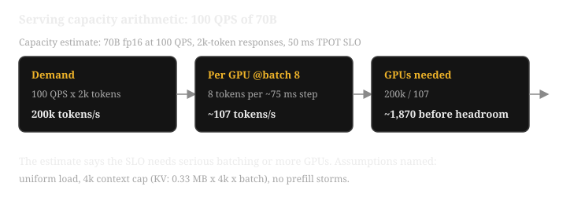
How to read this diagram
- \n
- Demand: 100 QPS times 2k tokens is 200k tokens per second. \n
- Supply: at batch 8, 8 tokens per 75 ms step is about 107 tokens per second per GPU. \n
- The division gives about 1,870 GPUs before headroom, which is why the SLO needs serious batching or many more GPUs. \n
Rapid-fire Q&A
Rules in words, numbers in a table. Now check recall: work each question before revealing its answer.
Q1. Design the capacity estimate for serving a 70B fp16 model at 100 QPS, 2k-token average responses, TPOT SLO 50 ms. Show the arithmetic.
A. 100 QPS × 2k tokens = 200k tokens/s needed. Per GPU at batch 8: 8 tokens per ~75 ms step ≈ 107 tokens/s (computed from the 75 ms floor). GPUs needed ≈ 200k / 107 ≈ 1,870 before batching efficiency, KV memory limits, and headroom: the estimate says this SLO needs serious batching (larger batches amortize the 75 ms) or more GPUs. Assumptions named: uniform load, 4k context cap (KV: 0.33 MB × 4k × batch per sequence), no prefill storms B. 100 GPUs C. One GPU per QPS D. Cannot estimate
Answer: A. The arithmetic: throughput needed = 100 × 2000 = 2e5 tokens/s. Per-GPU throughput at the decode floor: each ~75 ms step yields batch-size tokens, so tokens/s ≈ batch / 0.075: batch 8 → ~107/s. Naive division gives ~1,870 GPUs: the estimate's real value is showing the SLO is expensive at small batches, which motivates the actual design (larger batches, disaggregation, quantization, or a smaller model). Every assumption is named so the reviewer can attack it: that is the point of the estimate section.
Q2. A fraud-detection design proposes daily retraining. Apply Vol 10's trigger analysis.
A. Daily retraining is always right B. Ask: what changes daily? If fraud patterns shift daily (performance-triggered would fire anyway), scheduled daily retraining is justified but needs data validation gates (Vol 10's bug-amplification warning) and a champion/challenger comparison. If patterns shift weekly, daily retraining burns compute for noise. The design should pick the trigger (scheduled vs performance vs drift) with the price attached, not default to the calendar C. Never retrain D. Retrain hourly
Answer: B. The trigger must match the timescale of change: scheduled retraining at the wrong cadence is either stale or wasteful. Performance-triggered (metric breach) and drift-triggered (PSI > 0.25) adapt to the world; scheduled is predictable for operations. The design names the trigger, the validation gates (each retrain re-learns current data bugs without them), and the comparison method (champion/challenger, not offline metrics alone). "Daily" without this analysis is a habit, not a design.
Q3. Where does training-serving skew enter this design, and what are the three defenses?
A. It does not apply B. Skew enters at: features (batch-computed vs real-time values), data freshness (training on yesterday's distribution), and feedback (the model's outputs shaping future inputs). Defenses: (1) feature store with point-in-time correctness (Vol 10), (2) training-serving parity tests in CI (same code path, sampled production inputs), (3) shadow deployment comparing training-time vs serving-time predictions on live traffic before full rollout C. Only in the model D. Retraining fixes it
Answer: B. Skew is the gap between the world the model trained on and the world it serves: features computed differently, distributions drifted, feedback loops closed. The three defenses attack three different entries: the feature store kills definitional skew, parity tests kill code-path skew, shadow mode measures the residual before users feel it. Retraining alone does not fix skew: it re-learns the skewed world faster.
Q4. Your design needs human labels for 100k items. Budget the labeling with Vol 11's math.
A. One labeler per item B. Triple labeling for quality: 300k judgments. At 88% individual accuracy, majority vote reaches 96% (computed). Cost = 300k × per-judgment price; timeline = judgments / (labelers × throughput). Plus: guideline writing + 50-item pilot + kappa measurement (0.6-0.8 healthy) + adjudication + drift checks. The design shows this arithmetic because label quality is the eval's foundation: uncalibrated labels invalidate every downstream number C. Labels are free D. Use an LLM judge without calibration
Answer: B. The labeling plan is a capacity estimate like any other: judgments = items × redundancy, cost = judgments × price, timeline from throughput. The 96% majority math (computed) justifies triple labeling; kappa justifies the guideline and pilot work. The alternative (LLM judge) needs its own calibration line item (Vol 11): judge-vs-human agreement measured before the judge's verdicts count. "We will label 100k items" without this arithmetic is not a plan.
Q5. Apply the evolve rule: v1, v2, v3 of a support-agent system (Vol 9 components).
A. Ship everything at once B. v1: ReAct + 3 tools + file logs, batch-evaluated on 200 historical tickets (tests the riskiest assumption: can the loop resolve tickets at all?). v2: + retrieval over the knowledge base (the index math: size the store), + reranker, real-time serving with Vol 8's batching. v3: + episodic memory, + multi-agent (pay the 2-3x token tax only with a measured win), canary rollout per Vol 10. Each version names what the previous one could not do C. v1 must have all features D. Skip v1
Answer: B. The evolve rule attacks risk in order: v1 tests whether the agent loop works at all (the riskiest assumption) with the minimum machinery. v2 adds retrieval when the loop is proven (retrieval is useless if the loop cannot act). v3 pays the multi-agent tax only after one good agent exists (Vol 9's rule). Each version's design doc states the previous version's insufficiency: the evolution is the argument.
Q6. The design review asks: "Why not just use the biggest model?" Give the three-part answer.
A. Biggest is best B. (1) Cost: the serving equation (Vol 8) prices the 70B at 75 ms/token floor and 140 GB + cache per replica: show the GPU bill vs a 7B + RAG alternative. (2) Latency: the SLO may be unreachable at 70B batch-1 physics regardless of budget. (3) Quality per dollar: InstructGPT's lesson (1.3B > 175B, Vol 7/12) and the RAG-vs-long-context finding (Vol 9) say the system around the model often beats raw scale. The estimate decides; taste does not C. Small models are always better D. Cost does not matter
Answer: B. The answer is arithmetic, not ideology: price both options with the serving equation, check the SLO against the decode floor, and cite the evidence that system design beats scale (post-training over pre-training scale, retrieval over parameters). Sometimes the biggest model wins the estimate: then use it, with the numbers shown. The design review rewards the estimate, not the preference.
Connections
- Vol 2 supplies the eval mindset: the design's estimate section is Fermi estimation under uncertainty.
- Vol 8 supplies the serving arithmetic every capacity estimate uses.
- Vol 10 supplies the operations section: monitoring, retraining triggers, canary, rollback.
- Vol 11 supplies controls (baselines), label budgeting, and judge calibration for the eval plan.
- Vol 9 supplies the agent/RAG components the v1→v3 evolution composes.
Volume 14: Communicating Research
Why this comes next. Volume 13 produces designs; a design nobody understands dies in review. This volume answers how you make technical work legible: writing, presenting, visualizing, and defending it under questioning.
Research that cannot be explained cannot be used, funded, or built on. This volume is the craft of making technical work legible: writing, presenting, visualizing, and defending it under questioning. Framed as research communication: the audience is collaborators, reviewers, and decision-makers.
The rules
- The reader owes you nothing. Attention is scarce; every sentence must earn the next one. Open with the claim, then the evidence, then the mechanism. Background goes last, not first.
- One document, one claim. A paper, a design doc, a presentation: each argues exactly one thesis. Supporting points serve the thesis; everything else is an appendix. If you cannot state the claim in one sentence, you are not ready to write.
- Numbers need context to mean anything. "80.6%" is noise; "80.6% vs 80.0% baseline, ±1.1, three seeds" is information (Vol 11). Every number ships with its comparison, its uncertainty, and its practical significance.
- Visuals teach, not decorate. Every diagram gets a how-to-read walkthrough (the crash pack's own convention): what each element means, the data flow in numbered steps, what breaks if a component fails. A diagram without a walkthrough is a poster.
- Write for the rebuilder. Methods, configs, seeds, prompts, data versions: the test is whether a competent stranger can reproduce the result from your document alone (Vol 11's rule, applied to all writing).
- Structure is a kindness. Title (the claim), abstract (30 seconds), introduction (why care), method (the rebuilder's guide), experiments (ablations, controls, uncertainty), related work (honest positioning), conclusion (what is now known). Deviate deliberately or not at all.
- Presentations are not papers. One idea per slide, visuals over text, the talk tells a story the paper cannot: why this problem, what was tried, what surprised you, what it means. Rehearse the transitions; the audience remembers the narrative, not the equations.
- Defending work means steelmanning the objection. "The strongest version of your concern is X; here is why the evidence still supports the claim." Conceding the valid part of a criticism disarms it; dodging it confirms it.
- Feedback is data. Reviews, questions, confused faces: each is a measurement of where the communication failed. Revise the document, not the audience. The failure taxonomy habit (Vol 2) applies to your own explanations.
- Cite honestly. Related work positions your contribution against what actually exists, not a strawman. Missing a key citation is a correctness bug; misrepresenting one is worse.
Trap 1: "More detail means more rigor." Detail without structure is noise. Rigor is the right detail in the right place: the claim up front, the evidence behind it, the full method in the appendix. Burying the claim under background is not thoroughness; it is hiding.
Trap 2: "The audience did not get it, so they are not technical enough." The communication failed, not the audience. Every confused question is a bug report on your explanation: file it, fix the doc.
Trap 3: "Visuals are decoration for the text." In technical communication the diagram often carries the argument the prose cannot: data flow, architecture, causal structure. A sloppy diagram actively misleads: it teaches the wrong mental model confidently.
Must-memorize checklist (the communication gate)
| Artifact | Gate question |
|---|---|
| Any document | Can the claim be stated in one sentence? |
| Any number | Comparison, uncertainty, practical significance attached? |
| Any diagram | How-to-read walkthrough included? |
| Methods | Could a stranger rebuild it? |
| Presentation | One idea per slide; story, not paper? |
| Criticism | Strongest version steelmanned before answering? |
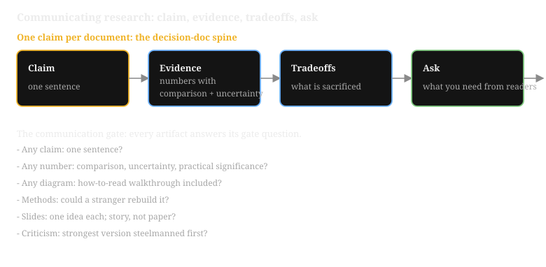
How to read this diagram
- \n
- The four boxes are the decision-doc spine: claim in one sentence, evidence with comparison and uncertainty, the tradeoffs, and the ask. \n
- The checklist below is the communication gate: every claim, number, diagram, method, slide, and criticism answers its gate question. \n
- If a 40-page doc goes unread, the fix is structure, not length: extract the thesis into this spine and move the rest to appendices. \n
Rapid-fire Q&A
Rules in words, numbers in a table. Now check recall: work each question before revealing its answer.
Q1. Your design doc is 40 pages and nobody reads it. Apply the rules: what changes?
A. Add more detail B. One claim per document: extract the single thesis into a 2-page decision doc (claim, evidence, tradeoffs, ask), move the rest to appendices. Open with the claim, not the background. Every number gets comparison + uncertainty. The 40 pages are not the problem; the missing structure is C. Make it shorter with no structure D. Present it instead
Answer: B. Length is not the disease; missing structure is. The decision doc format forces the one-claim rule: what is being decided, what the evidence says, what is sacrificed, what you need from the reader. Appendices preserve the detail for the rebuilder without taxing the decision-maker. "Nobody reads it" is feedback data (rule 9): revise the document, not the audience.
Q2. A reviewer writes: "The baseline is weak, so the gain means nothing." What is the strong response?
A. "The baseline is standard" B. Steelman first: "The strongest version of this concern is that an untuned baseline inflates our delta; that is fair." Then evidence: tune the baseline as hard as your method (same compute, same tuning budget), report both, and show the delta survives. If it does not survive, the reviewer was right: report that. Conceding the valid part disarms the objection; new data answers it C. Ignore the reviewer D. Add more baselines without tuning
Answer: B. The steelman ("an untuned baseline inflates the delta") is genuinely the strongest version: it names the mechanism, not just the complaint. The response is an experiment, not an argument: equal tuning budgets, reported honestly. Vol 11's controls rule is the substance behind the rhetoric. If the delta dies under a tuned baseline, that is a result (negative results are results): the paper gets weaker and more honest, which is the trade that matters.
Q3. You must present a failed project to leadership. What is the narrative structure?
A. Hide the failure B. Why the problem mattered, what was tried (with the reasoning at the time), what the numbers said, what that implies (the hypothesis it killed, the direction it rules out), what you recommend next. A well-communicated failure buys the next attempt: leadership funds judgment, and judgment is demonstrated by honest postmortems, not by undefeated records C. Blame the data D. Only show the parts that worked
Answer: B. The narrative converts a failure into an asset: the killed hypothesis is knowledge the organization did not have. Structure it as Vol 11's negative-result writeup: what was tried, why it should have worked, what the numbers said, what it implies. Leadership's actual question is "should I fund your next idea": the answer is demonstrated reasoning under uncertainty, which a candid postmortem shows better than a lucky win.
Q4. Your diagram confuses everyone. Apply rule 4: what does the fix look like?
A. A prettier diagram B. A how-to-read walkthrough: numbered data-flow steps, per-component what/why/what-breaks, then simplify the diagram until the walkthrough is short. If the walkthrough takes 20 steps, the diagram is showing too much: split it. The walkthrough is the test: a diagram you cannot walk through is a diagram nobody can read C. Remove the diagram D. Add more arrows
Answer: B. The walkthrough disciplines the diagram: writing the numbered steps exposes the clutter (steps that say "and then magic happens" mark the lies). Per-component what/why/what-breaks forces each box to earn its place. This crash pack's own convention (every diagram ships with a walkthrough) is rule 4 applied to itself: the fix is procedural, not aesthetic.
Q5. Two audiences: a researcher and an executive. Same result. What changes between the two versions?
A. Nothing; one version fits all B. The claim stays identical; everything else changes. Researcher: mechanism, ablations, controls, uncertainty, related work (the rebuilder's guide). Executive: decision relevance, cost, risk, timeline, the one number with its comparison (the decision doc). Same truth, different structure: the researcher needs to rebuild it, the executive needs to act on it. Dumbing down is not the move; re-structuring is C. Hide the numbers from the executive D. Hide the mechanism from the researcher
Answer: B. Audience adaptation is structural, not intellectual: the claim and the evidence do not change, the packaging does. The researcher gets the mechanism and the controls (Vol 11); the executive gets the decision and its price (Vol 13's tradeoff format). Both get honesty: the executive who later discovers the caveats you hid stops trusting your numbers permanently.
Q6. Apply rule 9 to this crash pack itself: what feedback would you solicit, and what would you change?
A. No feedback needed B. Solicit: where did a reader get confused (bug reports on explanations), which Q&A felt like trivia vs which changed a decision (signal check), what was missing (coverage gaps). Change: cut or rewrite the low-signal Q&A, add walkthroughs where confusion clustered, expand the volumes with the most bug reports. The document is a system; feedback is its eval suite C. Only solicit praise D. Feedback does not apply to study material
Answer: B. Rule 9 universalizes: every confused reader is a measurement of an explanation failure, categorized like any failure taxonomy (Vol 2). The honest loop is solicit → categorize → revise the doc, not the reader. A crash pack that cannot take its own medicine (staged evals, failure analysis, one change per loop) is not a reliable guide to the disciplines it teaches.
Connections
- Vol 11 is this volume's foundation: the paper structure, the rebuilder's test, and the reviewer's checklist.
- Vol 2 supplies the feedback-as-data habit and the failure taxonomy applied to explanations.
- Vol 13 supplies the design-doc format (tradeoffs explicit) this volume's documents follow.
- Every volume's diagram convention (walkthroughs, what/why/what-breaks) is rule 4 in practice.
Volume 15: GPU Kernels
Why this comes next. Volume 14 made work legible; this one goes to the bottom of the stack. Everything above is a request; this volume answers what the hardware hears: thread, warp, block, grid, and kernels that saturate the roofline.
The bottom of the stack: how GPUs actually execute, the roofline, memory hierarchy, and writing kernels that saturate the hardware. Everything above this volume is a request; this volume is what the hardware hears.
The rules
- Think in the hierarchy: thread → warp → block → grid. 32 threads execute in lockstep (a warp); warps form blocks (shared memory, synchronization); blocks form the grid. Divergence inside a warp serializes: the branch tax is paid in idle lanes.
- Occupancy is hiding latency, not a score. Enough active warps per SM to cover memory latency: the H100's 132 SMs × 2048 threads are the arithmetic behind it. 100% occupancy with no work to hide is theater; low occupancy with high arithmetic intensity can still win.
The roofline decides every optimization. The arithmetic intensity of your kernel (FLOPs per byte moved) decides which hardware limit you hit.
attainable = min(peak FLOPs, bandwidth × arithmetic intensity)where: arithmetic intensity is FLOPs performed per byte moved between memory and compute; the ridge is where the two limits cross.
Worked example. Decode sits near 1.5 FLOP/byte: far left of the 591 FLOP/byte ridge, so it is bandwidth-bound; halving the bytes moved (quantization) nearly halves the time. Prefill sits near 600 FLOP/byte: just right of the ridge, so it is compute-bound; only fewer FLOPs (fusion, a smaller model) speed it up.
Below the ridge, optimize bytes moved (coalescing, tiling, quantization). Above it, optimize FLOPs (tensor cores, fusion). The H100's ridge at 591 FLOP/byte (fp8 dense, as reported) is the line you measure against.
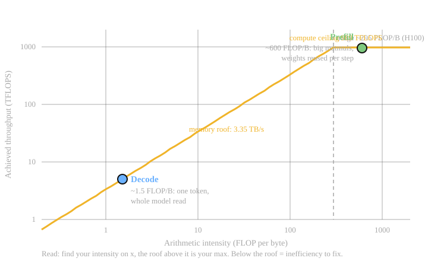
- Coalesce or die. Adjacent threads must touch adjacent memory: one 128-byte transaction instead of 32 scattered ones. Strided access patterns are the most common beginner performance bug and the easiest to fix.
- Shared memory is the scratchpad; bank conflicts are the tax. 32 banks; simultaneous same-bank accesses serialize. Pad arrays, swizzle indices: the fix is always in the access pattern.
- Tensor cores do the arithmetic that matters. MMA instructions (16×16×16 and friends) are where the FLOPs live: fp16/bf16 in, fp32 accumulate. A kernel that does not feed the tensor cores leaves the headline FLOPs on the table.
- Fusion kills memory traffic. Kernel launch overhead plus round-trips to HBM between elementwise ops: fuse them into one kernel and the intermediate never leaves SRAM/registers. Most "slow PyTorch" is unfused memory traffic, not slow math.
- Triton is the pragmatic middle. Python-level kernel writing, tile-based programming, the compiler handles the indexing: 90% of cuBLAS performance at a fraction of the development cost for most shapes. Write CUDA when Triton cannot express it; write Triton before writing CUDA.
- Profile before you optimize, and distrust the easy metrics. nvidia-smi's SM utilization can read 100% on wasted work (Vol 6's trap, repeated here because it bites at every level). Nsight Compute's roofline, memory charts, and warp statistics say what actually happened. One metric, one hypothesis, one change.
- Numerics are part of performance. fp16's narrow range overflows where bf16 survives (Vol 3's mixed-precision rules live here too): the fastest kernel that produces NaNs is not fast. Verify numerics on every optimization: bit-identical where claimed (FlashAttention's guarantee), tolerance-bounded elsewhere.
Trap 1: "More threads are always faster." Threads are free; memory bandwidth is not. Past the point where the SMs are fed, extra threads add scheduling overhead and register pressure (spills to slow memory). The optimum is measured on the roofline, not counted in threads.
Trap 2: "The kernel is compute-bound because the math is heavy." Heavy math at low arithmetic intensity is still bandwidth-bound: the roofline cares about the ratio, not the absolute FLOPs. Attention is the canonical example: O(n²) FLOPs, bandwidth-bound (Vol 4/Vol 12's FlashAttention story).
Trap 3: "Triton/CUDA is needed for every custom op." Most models never need a custom kernel: fusion via torch.compile, better batching, and algorithmic changes (Vol 8) win first. Custom kernels are the last 2x, not the first: profile the stack top-down before going down to the metal.
Must-memorize numbers and formulas
| Number / formula | Value | What it means |
|---|---|---|
| H100 SMs | 132 × 2048 threads | The occupancy arithmetic |
| Warp | 32 threads, lockstep | The divergence unit |
| Roofline | min(peak, BW × AI) | The decision rule for every optimization |
| H100 ridge | 591 FLOP/byte, fp8 dense (as reported) | Below: optimize bytes; above: optimize FLOPs |
| Coalescing | 128-byte transactions | Adjacent threads, adjacent memory |
| Shared memory banks | 32 | Same-bank conflicts serialize |
| MMA | 16×16×16 | The tensor-core atom; fp32 accumulate |
| Decode floor | ~75 ms/token @70B fp16 (computed) | The roofline applied: bandwidth-bound, from Vol 8 |
Rapid-fire Q&A
Rules in words, numbers in a table. Now check recall: work each question before revealing its answer.
Q1. Derive the 75 ms/token decode floor as a roofline argument.
A. 70B FLOPs per token at 2 PFLOPs = 35 ms B. Arithmetic intensity of decode at batch 1: each token does ~2×70B FLOPs while moving 140 GB of weights: AI ≈ 140e9/140e9 ≈ 1 FLOP/byte, far below the 591 ridge: deeply bandwidth-bound. Time = bytes/bandwidth = 140 GB / 2 TB/s = 70 ms + overhead ≈ 75 ms (computed). No kernel optimization moves this: it is the roofline's bandwidth ceiling, not a software problem C. Attention dominates D. The floor is avoidable with better code
Answer: B. The roofline classifies first: AI ≈ 1 FLOP/byte vs ridge 591 → bandwidth-bound by two orders of magnitude. In the bandwidth-bound region, attainable performance = bandwidth × AI is fixed by bytes moved: 140 GB per token through 2 TB/s = 70 ms floor (+ overhead ≈ 75 ms, computed). Kernel fusion, Triton, tensor cores: none of them move bytes off the wire. The only escapes are fewer bytes (quantization, smaller models) or more tokens per byte (batching): Vol 8's entire playbook, derived from one roofline.
Q2. A kernel reads a 4096×4096 fp16 matrix with one thread per row, each thread striding down its column. What is the memory behavior, and what is the fix?
A. Fine as-is B. Column-stride access: adjacent threads (adjacent rows) touch memory 4096×2 bytes apart: no coalescing, 32 separate transactions per warp instead of one. Fix: transpose the access (one thread per column element in a row-major pass), tile into shared memory with coalesced loads, or transpose the matrix once: adjacent threads must touch adjacent memory (128-byte transactions) C. Add more threads D. Use fp32
Answer: B. Coalescing is the rule: a warp's 32 threads should touch one contiguous 128-byte (for fp16: 64-element) segment. Column-stride touches 32 segments 8KB apart: ~32x the transactions, and bandwidth is the ceiling (roofline). The fix is always in the access pattern: restructure the loop, tile through shared memory with coalesced global loads, or pay one transpose up front. This is the most common beginner kernel bug because the code looks correct: it is, functionally; it is 32x too slow.
Q3. When is Triton the right choice over raw CUDA, and when is it not?
A. Always CUDA B. Triton: most custom ops (fusions, normalizations, masked ops): tile-based Python, compiler handles indexing, ~90% of cuBLAS for typical shapes at a fraction of dev cost. Raw CUDA: when Triton cannot express it (exotic synchronization, warp-level primitives, absolute-peak SOTA kernels like FlashAttention-3's). Default to Triton; earn CUDA by profiling proof that Triton is the bottleneck C. Always Triton D. Neither; use PyTorch
Answer: B. The choice is economic: Triton's development cost is far lower and its performance is near-peak for most shapes. Raw CUDA buys the last few percent at high engineering cost: justified for library-grade kernels (FlashAttention, GEMMs) and warp-level tricks Triton cannot express. And before either: torch.compile and algorithmic changes (Vol 8) often win more. The stack is top-down: profile, then descend only as far as the bottleneck demands.
Q4. Your kernel shows 100% SM utilization but runs 3x slower than the roofline predicts. Diagnose.
A. The roofline is wrong B. SM activity ≠ useful work (Vol 6's trap): 100% utilization with divergent warps (idle lanes counted active), uncoalesced traffic (bandwidth wasted on useless bytes), or bank conflicts (serialized shared-memory access) all show "busy" while doing little. Nsight Compute separates them: warp execution efficiency (divergence), memory charts (coalescing), shared-memory stats (bank conflicts). One metric, one hypothesis, one change C. Add threads D. It is thermal throttling
Answer: B. Utilization measures activity, not progress: a diverged warp has active lanes and idle lanes but counts as busy; uncoalesced loads move 32x the bytes for the same data; bank conflicts serialize what should be parallel. All three show 100% SM utilization. The roofline prediction is the ground truth about what is possible: the 3x gap is the diagnosis budget. Nsight's warp and memory statistics name the culprit; "add threads" feeds the theater.
Q5. Derive the occupancy reasoning: why can low occupancy still win?
A. Occupancy is all that matters B. Occupancy exists to hide latency: enough warps to cover memory stalls. A kernel with high arithmetic intensity (above the ridge) is compute-bound: its warps rarely stall on memory, so few warps suffice to keep the tensor cores fed. Chasing 100% occupancy then costs registers/shared memory per block for no gain (and register spills actively hurt). Measure the roofline position first; occupancy is a means, not a metric C. Low occupancy is always bad D. Occupancy measures FLOPs
Answer: B. The purpose of occupancy is latency hiding, not a score: warps waiting on memory need other warps to cover the gap. Compute-bound kernels (high AI, tensor-core-fed) barely wait: low occupancy keeps them fed. Pushing occupancy higher consumes the scarce resources (registers, shared memory) that the active warps need, and spills registers to slow memory. The roofline decides: below the ridge, occupancy and coalescing; above it, tensor-core feeding and fusion.
Q6. Connect this volume to Vol 8's quantization win (INT4: 3.5x decode): what is the roofline mechanism?
A. INT4 does more FLOPs B. Decode is bandwidth-bound (AI ≈ 1 FLOP/byte, far below the 591 ridge): halving the bytes per weight (fp16→int4 is 4x fewer bytes) moves 4x fewer bytes per token, so the bandwidth ceiling rises ~4x. The measured 3.5x (as reported) is the ceiling minus dequantization overhead. Quantization is a roofline move: it does not speed up the arithmetic, it shrinks the bytes the bandwidth-bound regime must move C. INT4 has better numerics D. It reduces the model size only
Answer: B. In the bandwidth-bound region, time = bytes / bandwidth: fewer bytes, less time, linearly. INT4's 4x byte reduction predicts ~4x speedup; the measured 3.5x (as reported) reflects dequantization and kernel overhead. The <1% quality degradation (as reported) is the price, measured on your suite (Vol 8's warning). The roofline unifies the story: quantization, batching, and smaller models are all ways to move fewer bytes per token through a bandwidth-bound regime.
Connections
- Vol 1 supplies the roofline's arithmetic (FLOPs, bandwidth, arithmetic intensity) and the numerical-stability rules.
- Vol 3 supplies mixed precision (the numerics this volume's kernels must preserve) and torch.compile (the fusion before custom kernels).
- Vol 4 supplies the attention mechanism FlashAttention re-engineered at this level.
- Vol 6 supplies the profiling discipline (MFU over SM utilization) and the collectives whose performance is kernel performance.
- Vol 8 is this volume applied: every serving optimization is a roofline argument.
Master Cheat Sheet: 50 Load-Bearing Facts
Why this comes next. The sixteen volumes compress to these fifty facts. If a fact is here, know it cold; if it is not here, it is detail you can look up.
The entire base curriculum on (roughly) two pages. If a fact is not here, it is detail: look it up. If it is here, it is load-bearing: know it cold.
Math and optimization (Vol 1)
- Softmax + cross-entropy gradient: p − y. The subtraction every trainer implements.
- KL(P‖Q) ≠ KL(Q‖P). Direction matters: mode-seeking vs mode-covering.
- Adam: per-parameter LR from m̂/(√v̂+ε). β₂=0.999 with epsilon inside the sqrt is the instability (fix: larger ε or ε outside).
- 0.95²⁰ = 0.358: depth-20 gradient survival at γ=0.95. Identity paths (residuals) are the fix.
- LLM LR: 3e-4 (≤1B) → 6e-5 (70B): LR falls with scale. Warmup then cosine decay to ~10%.
Experiment craft (Vol 2)
- Staged evals: unit → integration → end-to-end. One change per loop.
- Uncertainty on every number: 3+ seeds, error bars, or the result is noise.
- Failure taxonomy with six classes beats "the model is dumb."
Deep learning (Vol 3)
- Pre-norm > post-norm for deep nets. RMSNorm drops the re-centering.
- SwiGLU: 3 matrices, gated. The default MLP; d_ff ≈ (8/3)d.
- Mixed precision: fp16 compute, fp32 master, loss scaling. bf16 where hardware allows.
- Checkpointing: √n memory for one extra forward pass. Free-ish depth.
LLM internals (Vol 4)
- Five attention steps: QKV → QK^T/√d_k → mask → softmax → mix.
- Score matrix @4k: 67 MB per head fp32. The quadratic bill.
- KV cache/token: 2 × layers × KV-heads × head-dim × bytes. GQA-8 saves 8x over MHA.
- RoPE rotates Q/K; scores depend on (n−m). Theta = 10000^(−2i/d).
- Prefill compute-bound; decode bandwidth-bound. Two regimes, two playbooks.
Pretraining (Vol 5)
- 6ND: 6 × params × tokens. GPT-3 = 3.15e23 (computed).
- Chinchilla: ~20 tokens/param at fixed training compute. 70B/1.4T beat 280B/300B.
- Overtrain past 20 tok/param when inference dominates lifetime cost (the LLaMA move).
- 16 bytes/param training memory (2+2+12). 7B = 112 GB.
- Uniform baseline ln(32000) = 10.37; finished ≈ 2. Loss curve calibration.
Distributed training (Vol 6)
- Ring all-reduce: ~2x model traffic per rank, independent of GPU count.
- ZeRO stages: 1 free, 2 nearly free, 3 costs ~1.5x comms. 7B/8 GPUs: 112 → 38.5 → 26.25 → 14 GB.
- Pipeline bubble: (p−1)/(m+p−1). TP inside node (NVLink 900 GB/s), DP across (IB 50 GB/s).
- Checkpoints: weights + optimizer + scheduler + RNG + dataloader. τ = √(2·C·μ).
- Diagnose in order: spikes → rollback early; NaN → scaler/data/precision; hang → your code first.
Post-training and RL (Vol 7)
- SFT is behavioral cloning (prompt masked). Data beats algorithm.
- RLHF: SFT → Bradley-Terry RM → PPO + KL leash. 1.3B > 175B.
- DPO: same objective as RLHF, RM solved out. Loss = −log σ(β·Δlog-ratio). Worked 0.6503.
- PPO clip: min(ratio·A, clip(ratio,1±ε)·A). Worked 0.60 vs 0.75.
- GRPO: advantage = (r − mean)/std, no critic. Worked [+1,−1,+1,−1].
- RL re-weights; it cannot create. RLVR where checkable. Reward hacking is Goodhart mechanized.
- Rollout economics: generation ~10x training cost per token; the step splits ~90/10.
Inference and serving (Vol 8)
- Decode floor @70B fp16: ~75 ms/token batch 1 (140 GB / 2 TB/s, plus kernel overhead). Batch 8 → 9.4 ms/token.
- Continuous batching: up to +23x vs naive. PagedAttention: ~96% vs ~60% memory.
- Speculative decoding: 2-3x latency, <1% quality loss. INT4: 3.9x/3.5x, <1% degradation.
- Serving equation: weights + KV × batch × length + overhead. TTFT vs TPOT: separate SLOs.
Agents and RAG (Vol 9)
- Agent = loop (observe → think → act) + tools + constraints. ReAct beats act/reason-only.
- RAG pipeline: chunk → embed → hybrid retrieve → rerank (+~10 recall) → synthesize → cite.
- Index math: 100M × 1536 × 4B = 614.4 GB. mmap + quantize.
- Retrieved-but-ignored is the top RAG failure. Multi-agent tax: 2-3x tokens, 2-5x latency.
MLOps (Vol 10)
- The product is the pipeline, not the model. Lineage: code + data + config + seed.
- Monitor three layers: inputs (PSI > 0.25), outputs, business metrics. Labels are too slow.
- Shadow → 1-5% canary → gradual rollout. Rollback is a button. Point-in-time features.
Research methods (Vol 11)
- Ablations change one component. Controls: baseline, oracle, random. 3+ seeds.
- Kappa 0.6-0.8 healthy. Triple-88% labelers → 96% majority. Calibrate LLM judges.
- Decontaminate every mix vs every eval. Negative results are results.
Paper spine (Vol 12)
- The spine in one line each: attention alone (28.4 BLEU) → mask-predict (BERT) → scale + few-shot (GPT-3) → rotate positions (RoPE) → kill the N² matrix (FlashAttention) → 20 tok/param (Chinchilla) → alignment beats scale (InstructGPT) → AI feedback (CAI) → open weights (LLaMA) → algebra over RL (DPO) → sparse capacity (MoE) → traces as compute (CoT) → pure RL reasoning (R1).
System design (Vol 13)
- Clarify → estimate (Fermi, show arithmetic) → baseline → data → training → serving → eval → operate → evolve. Tradeoffs are the deliverable.
End of the base crash pack. The sixteen volumes above compress to these fifty facts; the Q&A sections compress each volume to its decisions. Work the questions until the derivations are fluent, then move to the role tracks.
Where to go next. This crash pack covered the base curriculum. Pick the track that matches your target role and work its crash pack next. Each crash pack has a matching role track with specialist chapters; the index page maps all 39 volumes.
Watch and go deeper
Two videos that make the crash course concrete: attention drawn step by step, and a GPT built line by line in code. Plus the papers and guides to read next.
Go deeper
- Attention Is All You Need The 2017 paper that introduced the transformer. Read it after you can draw the block from memory.
- Training Compute-Optimal Large Language Models (Chinchilla) The paper behind the 20-tokens-per-param rule. Short, and every number in it is load-bearing.
- Large Transformer Model Inference Optimization Lilian Weng's survey of inference optimization: KV cache, quantization, and serving tricks that Volume 8 builds on.
- Optimizing LLMs for Speed and Memory Hugging Face's practical guide to the same serving optimizations, with the memory math worked out.